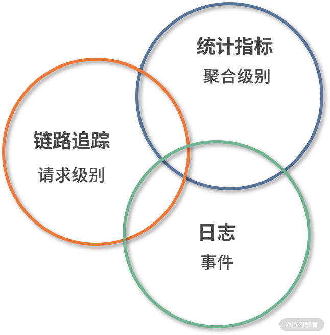
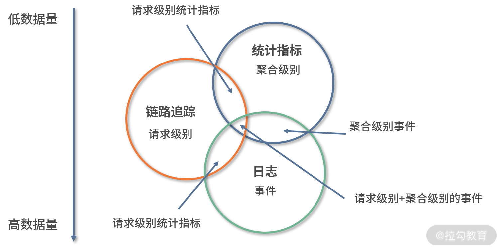
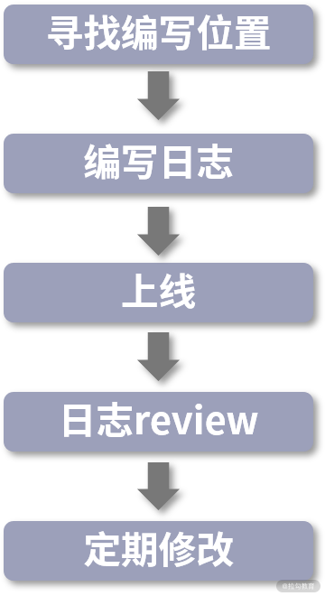
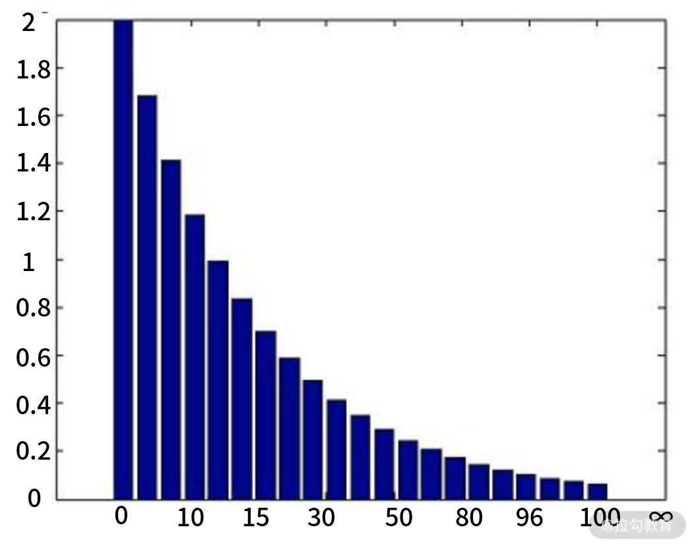
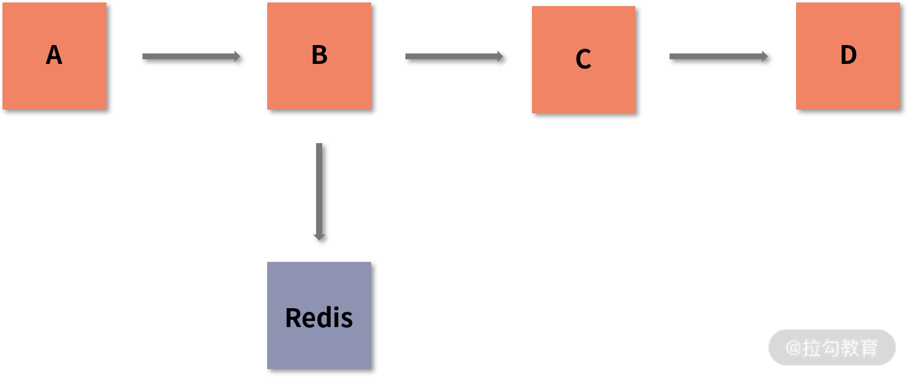

00 分布式链路追踪实战
你好，我是刘晗。我在 Java 领域从业 8 年，长期从事分布式系统的构建和调优工作。目前，我在拉勾网担任技术专家，主要负责拉勾基础平台组件研发，对分布式系统观测、系统调优有着丰富的实战经验。
为什么“可观测性”必不可少？
相信你在开发过程中，一定遇到过这样的情况：
当线上环境出现一个问题后，测试找到开发业务的同学 A，A 发现这个请求还依赖其他项目组，于是就去找相关的责任人 B，但 B 经过一番排查，发现这个问题原来是 C 的。大家相互推诿，很难找到问题发生的原因，甚至严重时还会影响到项目的正常发布，惹得团队怨声载道。大家的开发任务已经很重了，还要被这种事情弄得焦头烂额。
虽然从业这么多年，但这个问题却始终困扰着我。最初，我以为是因为初创公司技术能力不足才导致这样的问题，后来却发现成熟的技术团队和技术架构同样存在着类似问题，它并没有因为我个人能力的成长和所在团队水平的提高而消失，反而越来越困扰我。比如，为什么有这么多的问题找不到原因，为什么我总是在解决十分相似的问题，为什么团队的沟通效率会如此低，等等。
我接手拉勾的基础组件研发工作后，开始站在全局去思考解决这个问题的方法，最终通过不断地探索、实践，在拉勾内部打造了一套切实可行的可观测系统，对拉勾日均上亿级别的请求进行有效观测。
这套系统可以很好地应对问题，并早于用户反馈解决。它不仅提高了用户体验，也提高了拉勾的口碑，对拉勾的发展起到了不可忽视的作用，我在拉勾内部的技术宣讲中，也经常提到可观测系统对拉勾的帮助，以及它的重要性。
链路追踪通常与可观测性一起出现，它为可观测性提供了强有力的数据支持，也是可观测性中必不可少的一环。通过对这部分数据源的可视化，开发人员可以看到链路中每一环的执行流程。链路追踪通常还可以和链路分析结合在一起，除了链路追踪，还可以进行性能诊断并给出优化建议，为可观测性提供了多维度的数据和展现方式的支持。
随着微服务架构的持续演进，应用和服务器的数量不断增加，调用关系也越来越复杂，能否有效地对系统进行观测就变得至关重要。 此时，国内的大厂都逐渐有了自己的一套可观测系统，比如阿里的“鹰眼”。大厂对可观测性越发重视，与之相关的岗位的薪资也水涨船高。


（来自：拉勾网）
从招聘的需求中，我们可以明确看到“熟悉分布式系统的开发原则”“优化故障处理流程”“提升排障效能”等职位要求。阿里全链路监控系统“鹰眼”的成功，已经证明了可观测系统对这些问题的解决能力，可观测性也必然会在系统愈发复杂的未来变得更加实用。
为了让你能够系统地了解可观测性，并将它集成到自己公司的系统中，我决定将我的实践经验系统性地分享给你，希望能够帮助你建立对“可观测性”的全面理解，在工作中少走弯路，并能够更好地规划自己的技术成长路径。
那么，如果没有很好的可观测系统，会存在哪些问题呢？
1. 无法有效地处理问题
开发人员，职责是编写好业务代码，并保证其持续且稳定地运行，但如何实现这个职责却是一大难题。如果运维人员告诉你线上出现了问题，但你翻遍日志也找不出问题的原因；如果用户反馈说出现了问题，但你测试没有任何异常，这个问题就像定时炸弹一样被埋了下来，不知道什么时候就会爆炸。可观测性可以通过一套完整的数据观测系统帮助你更快且更有效地发现问题、解决问题，可以说是保障线上稳定的关键。
2. 无法快速理解分布式系统
随着微服务的兴起，后端的服务和系统数量越来越多。同时，项目在不停地迭代，如果没有及时沉淀文档架构图，你就很难了解整体的系统架构和数据走向，站在“上帝”的视角去考虑如何优化。最常见的情况就是两个模块之间存在循环引用，但这种常见的问题往往又会有较大的隐患。无论你是一个开发小白，还是从业多年的架构师，可观测性都可以通过可视化的形式帮助你快速了解整个系统的架构、数据流向、业务指标等，从而使你更加了解系统，梳理架构。
3. 无法有效地利用系统资源
由于系统的数量越来越多，相应机器的资源管控也越来越复杂，同时每个服务之间还存在着一定的依赖关系。因此，我们很难了解每台机器上的资源是否都被充分利用了。而可观测性就可以帮助你分析出哪些服务利用率不够，哪些服务可以进行资源缩减。
综上不难发现，“可观测性”所解决的核心是效率问题。无论是处理问题、了解系统还是分配系统资源，“可观测性”都可以提高从公司到个人的整体效率。 这也是为什么，越来越多的公司开始重视可观测性。
可观测性≠监控
你可能会问，“可观测性”不就是监控吗？虽然它们看起来十分相似，但监控可以说是可观测性的一个子集。它们之间有 3 点区别：
- 核心不同。 监控是以运维为核心的系统，它通过各项指标数据来定义整体的运行状态、失败情况等；观测则是以开发为核心的系统，除了监控，它还会对整个系统进行分析。很多时候，运维给出的错误数据，只能算是提出了问题，但可观测性除了提出问题，还可以清晰地给出导致错误的原因。
- 维度不同。 监控是从外围的角度，通过各种指标（机器CPU、负载、网络的维度等）来判断整个系统的执行情况；而可观测性则在这种外部指标的基础上，以应用内的各个维度来展开推测，最后，通过二者结合的数据更加真实地反映出我们应用的运行情况。
- 展现的信息不同。 有些系统在正常运行时十分稳定，但是一到高并发的时候就会出现问题。此时，监控只能汇报问题出现的状况，但可观测性就可以很好地通过图形化的方式告知我们问题的原因，而不是由我们用经验来猜测。它可以将未知或者不确定的信息展现出来，使我们可以更好地了解系统的整体情况。
可观测性打破了开发和运维原有的问题解决方式，不再是运维发现问题开发解决，而是以开发为中心。 开发人员以什么样的形式去暴露关键的指标等，是与业务开发中的可扩展性和高可用性同等重要的内容。
课程设置
可观测性如此重要，但学习可观测性的过程中，我也遇到过一些问题。“可观测性”这个概念在国内来说比较新颖，中文学习资料不多，而且比较散乱、不成体系，有一定的学习难度。而且，如果你只是单纯地学习可观测性的理论知识，也容易造成纸上谈兵的现象，无法将所学到的知识结合实际，应用到公司的研发和管理上。
因此，我总结梳理了自己的学习和实践经验，分为可观测性的原理、告警系统与可观测性、可观测性的实践应用这 3 个模块来和你讲解这个课程，希望能为你提供一个完整且系统的可观测性的学习路径：
- 可观测性原理： 我会带你系统地了解可观测性中的各个关键概念和关键原理。同时，我也会结合开发经验，告诉你如何更好地观测你的应用程序，以及在真实的业务场景中该如何处理遇到的问题。
- 告警体系与可观测性： 我会从已在拉勾中有效运行的实例出发，带你了解如何将可观测性的理念与运维的告警体系结合，形成一套可以落地的规范。
- 可观测性的实践应用： 我会带你逐个了解可观测系统中的关键点，以及如何在实践中运用它们。
本课程适合你吗？
如果你是中高级的开发人员，如果你对系统调优有兴趣、希望从事监控相关的工作、想要了解分布式系统；如果你是运维人员，想要提高系统资源利用率，想要推动公司监控体系建立并制定一套规范的告警流程，想要帮助开发提高解决问题的效率，这个课程正好可以帮到你。
讲师寄语
无论你目前所在公司有没有自己的一套可观测性系统，这门课都会对你有所帮助。我并不只是在讲述系统应用上的知识，更多的是在培养你的“可观测性”思维。即便没有可观测性系统，可观测性思维也会在你遇到问题的时候，帮助你不再点对点地解决，而是实现面对点的降维打击，从而更快速、更精准地解决问题。
我希望你可以多思考、多交流、多实践。只有将你所学运用到工作中，体现在工作和能力的成长上，才能说明你真的理解了这门课。
我在留言区等你，期待你给我分享你的想法，以及对可观测性的见解。你也可以把内容分享给你的朋友，一起沟通探讨。
01 数据观测：数据追踪的基石从哪里来？
我们在日常开发过程中无时无刻不在和数据打交道，想要让程序运行得稳定顺畅就要实时对数据进行观测。本课时我就先来讲解观测的数据到底从哪里来的？
监控数据来源
我们一般讲的数据观测，其实观测的就是从发起请求，到真正查询的这个过程中的数据。那在这个过程中，我们需要关注哪几个层次的数据呢？接下来，我会从数据请求发起的用户端到数据查询响应的服务端逐层分析。
端上访问
首先是用户侧的端上访问，这应该是最容易理解的。在互联网发展的早期，我们通过 PC 浏览网页，就属于端上访问的范畴。随着移动互联网的发展，端上访问的范围得以扩大。我们打开各种 App，或是访问 App 中的小程序/H5 页面，都属于端上访问。用户通过端上访问，也最能直观地感受到我们程序的响应速度，所以端上访问的数据就变得十分重要。
我们一般可以通过以下几个方式获取端上访问的数据：
- 用户体验监控：Web 页面中的白屏时间、DOM 元素/资源加载耗时、文档网络耗时；App 的卡顿率、崩溃率、热启动加载时长等。
- 日志：在 Web 页面中，如果出现脚本错误，则需要将相应的异常信息通过日志的方式上报服务器；App 也会有相应的日志输出，但移动端更关注系统崩溃或出现异常时的日志信息。
- 端到端：指的是用户端（Web/App）到后端服务器的请求情况，比如访问量、成功率、响应时间等。通过端到端观测时，我们还需要了解端上所处的地区、网络环境、响应状态码等信息，才能更好地掌握用户真实的使用情况。
- 可用率：因运营商和地区的不同，会导致访问端上时有一些差异，比如访问是否可用、响应耗时长短等。这与 CDN、DNS 等公共资源有莫大的关系。
应用程序
当端上发起请求后，一般会到达应用程序。这里是代码运行，以及处理用户请求的地方。在应用程序中，我们可能会集成各种第三方组件，比如常见的 Kafka、Redis、MySQL。应用程序的执行效率最终会通过端上响应情况反映出来，直接影响到用户的使用体验。
如果我们想要提升程序的响应速度，就不得不关注以下几个指标：
- 执行情况：我们常说的响应时间、QPS 等，都可以反映应用程序的执行情况。针对端上的请求，或者我们的定时任务，应用程序的执行情况就十分关键。执行情况越差，用户的直观体验也会越差。在组件级别，像 MySQL 中的慢查询监控，Kafka 中的 Lag 监控等，也可以反映应用程序的执行情况。
- 资源消耗：应用程序部署后，会消耗一定的资源，例如内存级别的 Redis 会消耗大量的内存，Kakfa 则因为要进行磁盘写入所以会要求较好的 I/O。我们的应用程序会区分 I/O 密集型和 CPU 密集型，它们所对应的资源消耗是不同的。
- VM 指标监控：指的是 JVM 监控，比如 GC 时间、线程数、FGC/YGC 耗时等信息。当然，其他语言也有其独特的统计指标信息。
- 容量：指单个系统可最大承受的容量。容量也是一个非常重要的指标，当应用访问量到达阈值时，我们一般会对这个应用的访问容量进行扩缩容。
- 服务关系：随着分布式系统架构的流行，我们在监控单体应用的基础上，还必须考虑应用之间的调用关系和调用速度，比如是否会存在两个服务之间的相互循环引用，下游服务出现问题是否会干扰整个流程的执行，又或是服务之间的响应时长、上下游服务的依赖程度等。
- 应用日志：应用日志应该是我们再熟悉不过的内容了。我们开发的应用程序，会记录下自身的日志，第三方组件也会有相应的日志，比如 MySQL 的进程日志、慢查询日志等。充分利用应用日志，可以大幅提高我们的排错能力。
- 健康情况：当前服务是否存活、服务运行是否稳定等，这也是十分关键的指标。我们在 ES 中可以看到服务的状态（RED、YELLOW、GREEN）。
业务监控
业务监控也是可观测系统中一个重要的内容，如果你只是让应用程序稳定运行那肯定是远远不够的。因此，我们常常会对具体业务产生的数据进行监控，例如网站系统中我们会关注 PV、UV 等参数；在支付系统中，我们则会关注创建订单量、成单量等。
业务指标能很好地体现出系统是否稳定。任何系统，如果出现了问题，最先受到影响的肯定是业务指标。当然，如果影响不是特别大，那就说明对这个指标进行监控的意义也不是很大。
业务指标也可以衡量上线后的成效。如果我们需要通过 A/B Test 了解用户更偏好哪一种模式，可以分别观察两种模式下的业务指标来比对用户喜好。再或者，我们可以通过业务指标得出的结论，在上线前进行一些改进（例如选择用户更偏好的模式）来提高成单率。
核心业务指标的设定因具体的业务和场景而异，因此开发人员也需要对业务和代码有一定的了解。
基础设施
基础监控我想你也不陌生。我们的应用程序/组件一般都是运行在云主机、操作系统上的，如果基础设施出现了严重问题，会影响到云主机和操作系统，进而牵连应用程序/组件的正常运行。
为了避免这种情况，我们会对基础设施进行监控，以保证它们可以良好地运行着。
我们一般会从 2 个方向监控：
- 资源利用：这个很好理解，像 I/O 使用率、CPU 利用率、内存使用率、磁盘使用率、网络使用率、负载等都属于资源利用的范畴。
- 通信情况：这里是指主机与主机之间的网络情况。通信是互联网中最重要的基石之一，如果两台主机之间出现如网络延迟时间大、丢包率高这样的网络问题，会导致业务受阻。
可观测性核心概念
基于上面几个层次的数据来源的介绍，你应该对要观测的数据有了一个大概的了解。
为了解决我在“开篇词”中提到的 3 个问题，我们通常会通过几个维度来观测这些数据，这也是我接下来要为你介绍的可观测性中比较关键的概念：日志、统计指标和链路跟踪。

日志（Logging）
日志是系统中的常见功能，我们前面说的数据来源的各个部分都有可能产生日志。日志一般的描述是：在特定时间发生的事件，被以结构化的形式记录并产生的文本数据。
日志可以为我们展现系统在任意时间的运行状态，又因为它是结构化的文本，所以我们很容易通过某种格式来进行检索，比如下图就是对 7 月 24 日用户支付下单操作的记录：

由于日志是最容易生成的，如果它大量地输出，会占据比较大的存储空间，进而影响整个应用程序的性能，比如 Java 中 logback 的日志框架，就算使用了异步线程来执行，也会对磁盘和 I/O 的使用率造成影响。
当然，也有一部分系统是利用日志可追溯、结构化的特点，来实现相关功能的，比如我们最常见的 WAL（Write-Ahead Logging）。WAL 就是在操作之前先进行日志写入，再执行操作；如果没有执行操作，那么在下次启动时就可以通过日志中结构化的，有时间标记的信息恢复操作，其中最典型的就是 MySQL 中的 Redo log。
统计指标（Metrics）
统计指标也是我们经常使用的。它是一种可累加的聚合的数值结果，具有原子性。因此，我们可以通过各种数学计算方式来获取一段时间内的数值。

统计指标针对数据的存储、处理、压缩和检索进行了优化，所以一般可以长期存储并以很简单的方式（聚合）查询。但由于涉及数据的处理（数学计算方式）和压缩，所以它也会占用一定的 CPU 资源。
统计指标是一个压缩后的数值，因此如果指标出现异常，我们很难得知是什么原因导致的异常。此外，如果我们使用了一个高基数的指标来作为统计的维度，那么统计就很容易给机器带来高性能损耗，比如，在基于用户 ID 的维度去做数据统计时，因为在统计的时候需要一段时间范围，如果数据过多就必然会造成内存上的占用。
讲到这里，你应该对指标有了一定的认识。我们后端经常说的 QPS、TPS、SLA 都是计算后得到的指标；基础设施中的 CPU 使用率、负载情况也可以认为是指标。
链路追踪（Tracing）
链路追踪 可能是一个较新的概念，但是“全链路压测”这个词你一定不陌生。链路追踪中的“链路”和全链路压测中的“链路”，它们的概念是一样的，只不过链路追踪是将链路的完整行为信息进行记录，然后通过可视化的形式展现出来。这里我用一张图来说明：

假设我们程序中的一个接口总共有 4 个服务参与，调用的关系分别是 A->B->C->D，其中 B 服务还与 Redis 这种第三方应用产生了调用/请求关系。这一过程，我们就可以在链路追踪中，通过类似于上面这张图的形式来展示。当然，这只是个例子，在实际中，链路追踪展示的图会比这个更加清楚。我会在后面的课程中更加详细地讲解，这里就不加赘述了。
链路是支持跨应用的，比如我们常见的 RPC 请求，就可以说是链路中的一部分。
与日志一样，链路追踪也会造成一定的性能损耗，因为任何形式的观测都需要存储一定的数据和时间信息，这必然会占用一定的 CPU 和内存资源。我们一般可以通过采样的方式解决资源占用的问题，我会在后面“链路追踪”章节中介绍。
链路追踪是整个可观测性中一个很有趣，也是很重要的部分。希望通过这个简单的说明，能让你对它有一个基础的认识。
三者之间关系
我们一般可以将数据的来源分为 2 个级别：
- 请求级别： 数据来源于真实的请求，比如一次 HTTP 调用，RPC 调用；
- 聚合级别： 真实的请求指标，或是系统的一些参数数据聚合，比如 QPS、CPU 数值。
根据这 2 个级别，我们可以对上面的 3 个内容加以细化，其中链路追踪是请求级别，因为它和每个请求都挂钩；日志和统计指标可以是请求级别，也可以是聚合级别，因为它们可能是真实的请求，也可能是系统在对自身诊断时记录下来的信息。
那么当它们两两组合之后又是什么关系呢？我们可以从下图中看到：

- 链路追踪+统计指标（Request-scoped metrics），请求级别的统计：在链路追踪的基础上，与相关的统计数据结合，从而得知数据与数据、应用与应用之间的关系。
- 链路追踪+日志（Request-scoped events），请求级别的事件：这是链路中一个比较常见的组合模式。日志本身是每一条单独存在的，将链路追踪收集到的信息集成在日志中，可以让日志之间具备关联性，使其具有除了事件维度以外的另一个新的维度，上下文信息。
- 日志+统计指标（Aggregatable events），聚合级别的事件：这是在日志中的比较常见的组合。通过解析这部分具有统计指标的信息，我们可以获取相关的指标数据。
- 三者结合（Request-scoped,aggregatable events）：三者结合可以理解为请求级别+聚合级别的事件，由此就形成了一个丰富的、全局的观测体系。
根据以上这 3 个概念，我们再来想想它们最终会输出的数据量（Volume）。
统计指标是数值的形式，同时又可以压缩，所以它所需的存储量是最小的；日志的输出量最大，但相对的，它也有比较全的内容记录；链路追踪则正好处于二者之间，它不会像日志一样大量地输出，也不像统计指标一样节能。
于是，这三者的关系就形成了我们图中最左侧的竖线。
结语
我相信通过这节课的学习，你已经对可观测性有了一个整体的认识。在接下来的课程中，我会分别对日志、统计指标、链路追踪这 3 个概念做更深入的讲解。当然，我也会以开发的角度，从更细的维度来介绍我们该如何去参与其中。
最后，给你留道思考题，除了这三个关键点以外，你觉得在观测中还有什么也是必不可少的？欢迎你在留言区留言，分享你的理解和在工作中的经验。
02 系统日志：何以成为保障稳定性的关键？
上一课时我对数据的来源做了简单的讲解，在对可观测性的 3 个核心概念的介绍中，我首先提到的就是日志。我们知道，在应用程序、端上和传输系统中，日志无处不在。因此，这节课我将带你了解，日志为什么会是保障系统稳定性的关键。
日志功能
日志可以记录系统中硬件、软件和系统的信息，同时还可以观测系统中发生的事件。用户可以通过它来检查错误发生的原因。如下图：
一般来说，日志具有以下几个功能：
- 便于调试：开发人员在进行应用开发时，都会在测试或本地环境中调试。添加日志可以让你感知到它进入了某个函数，执行了某些行为，甚至进入了代码层级，记录代码判断后的行为。我们一般会将日志设置为调试级别，或者在上线前将它们统一删除。
- 快速定位问题：我们通常会依据自己对业务的理解，在程序中增加相应的日志记录。当程序出现问题时，我们会第一时间想到通过日志，查看当时用户进行了什么操作，有没有出现程序报错等，这也是定位问题原因的关键。有时我们在进行业务数据埋点时，也会使用日志来查看更详细的业务数据信息。
- 高度定制化：日志是结构化的。同时，我们又可以在代码的任意位置对日志进行编写。无论应用是在执行业务请求，还是在执行定时任务，只要是在程序可执行的代码位置都可以编写日志。
- 信息埋点：我刚才有提到，日志是高度定制化的，所以你可以将自己的业务信息以日志的形式保存起来，比如用户在 21：22 的时候进行了准备支付操作，在 21：23 进行了支付结束操作，这一行为就可以记录下来。
- 追踪数据变化：日志同样可以将数据实时地记录下来，它会比一些统计系统记录得更加详细，因为统计系统一般只会记录某个时间段的信息，而日志可以精确到某个时间点。通过读取这部分数据，我们可以更好地了解系统运行时的状态。
- 数据分析：基于对信息的埋点，我们可以将收集到的信息统一写入一个文件中。数据分析系统可以定期解析这些日志文件，从而得出每个用户的具体操作，比如大数据分析师可以利用这个分析用户行为，指引下一步的整体战略。
日志级别
日志级别，这是一个为人熟知的概念。尽管大家都了解它，但我还是发现很多开发人员在用法上存在一些问题。这里我会按照从低到高的顺序，介绍其中比较关键的 4 个日志等级，同时也会指出大家在用法上存在的问题并给出我的理解。

- debug：调试级别。在这个级别，通常会记录一些调试的内容，比如程序进入方法或函数时，其中的参数信息。debug 级别的日志会极大地影响 CPU 和磁盘 I/O 写入的性能，所以我们一般只会在测试或本机环境中使用。除了自己编写的日志，一些常见的第三方框架也会记录一些日志以方便对程序的调试。这种日志量，在生产环境中你很难抓到重点，会浪费大量的时间在日志检索，所以我并不建议在生产环境中使用。
- info：信息级别。这个应该是开发人员最常用的日志等级了。我们一般也是通过这个日志等级完成上面提到的功能，比如信息埋点、追踪数据变化、数据分析等。虽然大家都在使用，但我发现有些时候，开发同学经常会把 info 级别当作 debug 级别，输出了很多没必要的日志内容，导致线上环境产生了大量的垃圾和重复信息，很不便于日志检索。
- warning 与 error：许多人会使用 error 级别来记录 warning 级别的内容，这使得不太关键的信息也会在查看故障日志时被筛选出来，导致对故障原因产生误判，浪费大量的时间。这里我会带你区分这两个级别的日志。 a. warning：警告级别。这一级别经常用来记录一些虽然出现了错误，但是并不会真正对程序执行构成影响的内容。当你想要使用 error 级别，如果感觉这个错误并不会影响程序往后执行或业务逻辑不会产生错误，就可以使用 warning 级别。 b. error：错误级别。只有当整个接口、方法调用都产生了不可避免的问题，对业务的主流程造成影响时才会采用的日志级别。
日志常见来源
查询问题的原因时，如果实在找不到，你可以按照一定的顺序对日志逐一排查，说不定就找到原因了。找问题原因的过程其实是一个不断否定、不断排除的过程，排除了所有的不可能，剩下的就是真相。
所以，在这一课时的最后，我会介绍一些常见的日志的来源，以方便你在需要逐层检索的时候，有一个整体的概念。
与我们在 01 课时介绍监控数据的来源时一样，日志的来源也可以按照用户端到服务端来划分。如下图所示：

终端层
这里的终端层我指的是像网页、App、小程序这样的形式。在这一层的所有日志信息都不在我们的服务器端，而是在用户的电脑、手机中。所以我们想要收集的话，一般是通过打点的形式上传到后端服务，再记录下来。
终端层更偏向用户的真实操作行为和一些异常信息的记录，比如用户当前的网络环境、系统状态、手机型号等。通过观察这部分数据，我们可以看出是哪一类用户在操作时容易产生问题，这也更加方便后端和终端的研发人员定位问题。
网关层
网关层可以理解为请求被接收之后，最先经过的地方，就像水龙头流出的水会先经过过滤器。最常见的网关层是 Nginx、Kong，当然也有像我们在 Spring 中经常说的 Zuul 和 Spring Cloud Gateway。网关层的日志通常会产生如下 2 个日志文件：
- 访问日志：当服务请求到达网关层后，会生成一条日志，记录这个请求从开始接收到最终反向代理的整个流程信息，其中不仅包括请求中的基本信息，如请求 IP、请求 UA，还包含与下游服务相关的 IP 地址、响应时长信息等。同时，这个文件也支持高度定制化。以 Nginx 举例，在 Nginx 中有相当多的环境变量可供选择，这些变量基本覆盖了一个请求生命周期中绝大部分的数据信息。
- 错误日志：记录网关服务在执行过程中出现的问题。不过除非是使用了第三方框架，不然网关层一般不会出现问题。
应用层
应用层一般指的是我们业务程序代码的执行位置。我们一般将应用程序分为基于容器托管的应用程序和普通的应用程序。
- 基于容器托管的应用程序，比如 Java 开发人员使用最多，最熟悉的 Tomcat。这一类型的应用程序会有以下 2 个相对关键的日志文件： a. 容器启动日志：以 Tomcat 为例，容器的 logs 目录中经常会有“catalina.日期.log”，这部分日志就是 Tomcat 在启动时的日志，它通常会随着控制台日志一同被打印出来。有时候某些程序异常没有被记录，在这里会有显示。下次如果你发现程序启动时莫名挂掉、无法启动，但是在自己的应用程序日志中又找不到输出信息，不妨到这个日志里看看。 b. 请求访问日志：这个和我们刚才在网关层讲的类似，请求访问日志会记录与上游相关的访问时间、访问地址等信息，这里的日志信息和网关层的日志是一一对应的。
- 普通应用程序：其日志文件我们通常会通过框架编写，这里面的写法就相对多样和自由。
“如何更好地书写日志”我会在下个章节中讲解，这里我们先继续介绍日志的来源。
组件层
像我们经常使用的 MySQL 和 Redis 会产生日志，这些日志就属于组件层。我会列举应用中比较常见的日志来向大家说明这一层级的日志：
- 应用运行时产生的日志：一般第三方应用运行时，会输出一些程序执行时的日志内容。当业务程序与组件通信出问题了，我们可以尝试通过这个日志定位，看应用当时是否出现了某些数值的波动或是其他异常。
- 慢查询日志：在一般的数据库类型的应用中，都会有这种日志，用于记录业务系统在进行数据库查询时出现的“查询速度慢”这一现象。如果某个系统中突然出现了大量的“慢查询”，我们就需要监控这个问题，从而获取更加完整的数据库查询语句和来源信息，以便更好地解决问题。
- 审计日志：这个同样适用于数据库。审计日志的主要作用是在进行相关操作的时候，将相关的操作行为记录下来，比如一次数据库查询、一次数据插入。一般这样的数据日志输出量会比较大，对应用的性能有一定的损耗，所以大多数情况下并不会使用。但是像金融行业中有特殊审计场景的需求，审计日志就是必不可少的。
基础层
基础层中的日志就更偏向于运维。它的功能更倾向于日志审计、系统问题等，这里我列举一下比较常见的日志：
- 系统日志：一般指的是 Linux 平台中的“/var/log/messages”，这里会记录系统中比较关键的日志。当系统启动了某个程序，或某个程序因为内存过高引发了系统级别的 kill ，就会记录在这个文件中。
- 操作日志：通常 Linux 的日志会通过环境变量定制。通过这个日志，我们可以查询到哪个人在哪个时间点进行了哪些操作，也可以在系统出现异常问题时，查看是谁，因为什么操作而导致的。
以上，就是我对日志常见来源的介绍，相信通过对这些内容的讲解，你对日志一定有了更深入的了解。
结语
综上所述，日志具有全面性和完整性的特点，它存在于系统的任何地方，同时又事无巨细地记录下每一件细小的事情。学完这一课时，你了解为什么系统日志是保障系统稳定性的关键了吗？关于日志级别和日志来源，还有什么我没有讲到的是你想要分享的呢？欢迎在留言区分享你的见解。
在下面一小节，我会讲述如何将日志写得更具有可观测性，更加有利于线上问题的定位。
03 日志编写：怎样才能编写“可观测”的系统日志？
在 02 课时，我带你重新认识了系统日志，介绍了日志在系统中的重要性。既然日志如此重要，那我们应该如何编写它呢？
这一节，我将带你从编写日志的工具、编写日志的方式，以及日志编写后的管理，就像是购物的售前、售中、售后，这 3 个方面来讲解，怎么样才可以写出更具有“可观测性”的日志内容。

日志框架
在编写日志之前，咱们先来了解一下有哪些日志框架可以协助我们编写日志。
在介绍日志框架之前，我需要说明一下，如果你仍在使用 System.out.println、Exception.printStackTrace 或类似的控制台输出日志的方式，我推荐你改用第三方日志框架编写。这种控制台输出的方式，可以从它们的源码了解到它们是线程同步的，大量使用这种方式，会对程序性能造成严重的影响，因为它们同一时间只能有一个线程在进行执行。
日志框架在系统中一般分为 2 种类型：日志实现框架和日志接口框架。下面我会对它们分别说明。
日志实现框架
顾名思义，就是日志的实现方，每个框架都提供自己的日志管理和写入的方式。Java 中的日志框架很不统一，这里我就以认知度最高的 3 个项目来说明。
- log4j 1.x：2001 年发布，后来成为 Apache 基金会的顶级项目。log4j 1.x 当年可以说是基本都在使用的日志实现框架，即便到了现在，仍有很多项目在使用它。log4j 1.x 使用起来确实很方便，但是 1.x 版本在高并发的情况下，存在比较严重的锁竞争关系，会导致性能不能得到有效的发挥；
- logback：log4j 1.x 创始人的另一个项目。它提供了更加高效的写入性能，据官方说明是 log4j 1.x 性能的 10 倍，以及更多的功能，比如异步日志。
- log4j 2.x：随着 logback 流行，log4j 1.x 的开发人员也想跟上步伐，于是推出了一套新的日志框架，号称比 logback 更快。log4j 2.x 借鉴了很多 logback 中的想法和功能，并解决了 log4j 1.x 架构上存在的一些问题。同时，它采用 Disruptor 来进行异步日志，相比较 Java 自带的队列，它提供了更高效且更完整的队列实现方案。
对于这三种框架，目前市面上都有在用，但是大多是 logback 和 log4j 2.x。虽然异步日志的效率 logback 和 log4j 2.x 相差无几，但 log4j 2.x 仍有些微弱的优势。
日志接口框架
可以看到，Java 中是存在多种不同日志框架的实现的，这就会造成 2 个问题：
- 多框架协作：在一个项目中，不光有你的代码，还有各种各样的框架代码，比如分布式协调会用到 Zookeeper、Curator；RPC 通信会用到 Dubbo、Thrift。为了方便开发，业务系统中往往集成了许多第三方框架。我们需要日志来了解各个第三方框架之间的协作状态，这些第三方框架又依赖于各个日志框架进行输出。这时候如果直接使用像 logback、log4j 这样的日志框架，岂不是业务系统要接入每个日志框架？
- 不同框架竞争：如果要引入多个日志框架，我们还需要考虑各个框架的输出位置。要是多个日志框架同时写入一个日志文件，还会涉及竞争问题，导致性能无法发挥。
由此就出现了面向接口的日志框架，它提供了统一的 API。开发人员在编写代码的时候，直接使用这套面向接口的日志框架，当业务项目人员在使用时，只需要选择好实现框架，就可以统一日志实现框架。

目前使用最为广泛的日志接口框架是 SLF4J，出自 logback 的开发者，目前基本已经形成规范。SLF4J 提供了动态占位符的功能，大大提高了程序的性能，无须开发人员再对参数信息进行拼接。
比如默认情况下程序是 info 级别的，在原先的代码方式中想要进行日志输出需要自行拼接字符串：
logger.debug("用户" + userId + "开始下单:" + orderNo + ",请求信息:" + Gson.toJson(req));
这会产生一个问题，系统中如果存在大量类似的代码，同时系统只输出 info 及 info 以上级别的日志，那么，在输出 debug 日志时会产生大量的字符串，而并不会输出 debug 日志，最后造成字符串不停地拼接，浪费系统性能。此时，SLF4J 就可以使用占位符的功能编写日志，比如像下面这样：
logger.debug("用户{}开始下单:{},请求信息:", userId, orderNo, Gson.toJson(req));
通过这样的形式，SLF4J 就可以根据日志等级判断，只对符合要求的日志进行数据拼接和打印。
有些时候日志输出需要进行数值计算，或者 JSON 转换，此时就需要一定的计算任务。但方法调用如果被当作参数传递的话一样会被执行，所以 Java8 中 SLF4J 还可以通过 Supplier 来传递。如下所示：
logger.debug("用户{}开始下单:{},请求信息:", userId, orderNo, () -> Gson.toJson(req))
可以看到，SLF4J 不仅为我们制定了一套面向接口开发的方式，还为我们明确了如何有效地编写日志。这也是为什么越来越多人喜欢用 SLF4J。
日志编写方式
在详细介绍了我们在开发时需要使用的日志框架后，我将正式展开我们的标题：“如何编写‘可观测’的日志？”我会从日志编写位置、写入性能、占位符、可读性、关键信息隐蔽、减少代码位置信息的输出、文件分类、和日志 review 这 8 个点来讲解，并将它们分成了 2 个方向：
- 日志开发时（前 5 项）：怎么样写出更有效率的日志？
- 日志完成后（后 3 项）：上线前后有哪些需要注意的？

日志编写位置
日志编写的位置可以说是重中之重，好的日志位置可以帮你解决问题，也可以让你更加了解代码的运行情况。我总结了几点比较重要的编写日志的位置，以供参考。
- 系统/应用启动和参数变更：当系统启动时，可以将相关的参数信息进行打印，以便出现问题时，更准确地查询原因；参数信息可能并不存储在本地，需要通过配置中心获取，而参数信息有变更时，也需要将变更后的内容输出在日志中。
- 关键操作节点：最典型的就是在关键位置添加日志，记录用户进行的某个操作。当出现问题时，你可以通过这个位置的日志了解到用户的操作。同样你也可以在系统进行某些操作时添加日志，比如你准备启动某个线程池来进行数据处理时，可以加上日志便于以后分析问题。
- 大型任务进度上报：当系统在处理某个比较大型的任务时，可以在这个过程中增加相关的日志来表明任务处理的进度，防止因为长时间没有处理而无法得知程序执行的状态，比如在文件下载时，可以按照百分比来定时/定次地上报数据。
- 异常：当程序出现异常时，我们通常是通过 try-catch 来记录当时的情况，然后以日志的形式表现出来。如果是通过 try-catch 处理，你需要注意日志编写的位置。如果你需要将日志在本层抛出，则不需要进行日志记录，否则会出现日志重复的问题。如果你除了异常以外还需要记录其他的内容，则可以通过定制异常信息来实现。
写入性能
日志的写入性能则会受到如下 5 个因素的影响：
- 日志编写位置：日志编写的位置在程序中十分重要，如果在 for 循环中编写，因为这个循环会持续很多次，那么就会产生大量的日志记录。此时可以考虑一下，这个日志的记录是否有必要。
- 日志数量：如果你大量地编写日志，那么日志的质量一定会降低。同时，大量的日志会让你很难去查看问题，反而成了一种负担。在高访问量时，过多的日志也会影响程序的执行效率。
- 日志编写等级：我在上一节中讲过，日志等级很容易被滥用，不正确的日志等级会导致我们查询问题的时间增加。
- 日志输出级别：这里指的是对于配置日志输出级别的选择。在线上环境，不建议使用 debug 级别，因为线上一直有请求，debug 级别会输出大量的基础和请求信息，极其浪费资源，因此建议开启 info 或者以上。
- 无用输出参数：不对大字段、无用字段输出，因为这很影响程序执行效率和日志的内容。我曾遇到一个案例，A 同学在线上打印了一个完整的 HTML 内容，导致当日的部分日志内容错乱，部分日志无法检索，原因就在于 HTML 存在多行内容导致无法解析的问题。当开发人员到线上服务器上查看时，日志文件的大小已经扩大了 3 倍。
好的日志一定是便于你去排查问题的。在编写日志时你一定要思考这个日志可以帮你做什么。
占位符
在介绍日志接口框架时我提到过，在日志编写时尽可能地选择基于占位符的编写方式。这里我会告诉你为什么要用占位符：
- 节约性能。在生成较高级别的日志时，低级别的日志会不停叠加字符串而占用过多的内存、CPU 资源，导致性能浪费。
- 便于编写。先确认日志所想要表达的内容，再确认你所需要编写的参数，这样在写日志时，目的也会更加明确。
- 便于查看。在代码 review 时，更方便查看日志想表达的意思，而不会被日志的参数打乱。
可读性
日志的可读性也是日志编写的关键之一。一个好的日志就像一篇好的文章，能让你很快了解到这个日志中的关键信息。我在工作中发现很多人写的日志都是无意义的，根本无法帮你定位问题的根源，比如像下面的这段代码：
boolean success = doSomeThing();
if (success) {
logger.info("数据保存成功！");
}
这段代码乍一看似乎没什么问题，但是运行后系统会大量地输出“数据保存成功！”的消息，这个输出和没有是一样的，起不到任何的作用。
我总结了几点在日志中容易遗漏的信息：
- 会话标识：当前操作的用户和与当前请求相关的信息，类似 Session。当出现问题/查看行为时，可以根据这个值来快速识别到相关的日志。
- 请求标识：每个请求都拥有一个唯一的标识，这样在查看问题时，我们只需要查看这一个请求中的所有日志即可。一般我们会配合链路追踪系统一同使用，因为后者可以实现跨应用的日志追踪，从而帮助我们过滤掉不相关的信息。
- 参数信息：在日志中增加参数信息能帮你了解到，是什么情况下产生的问题，这样你也很容易复现问题，以及辨别错误的原因。
- 发生数据的结果：和参数信息相互对应，一个是执行前，一个是执行后。发生数据的结果可以帮你了解程序执行的结果，出错时也是很重要的参考条件。
关键信息隐蔽
对于关键的信息不显示或者进行掩码显示，以免信息被盗取后出现数据内容泄漏。推特在 2018 年曾将用户的密码打印在日志中，这一行为泄露了 3.3 亿人的密码。
减少代码位置信息的输出
如果不是必要，尽量不要在日志格式中输出当前日志所在的代码行和方法名称信息。如果你看过 logback，log4j 的源码你就知道，这都是通过获取当前线程堆栈快照信息来进行实现的，这种实现方式会极大地影响程序执行的效率。
在 log4j 的文档中有这样一段话：“使用同步方式进行获取位置信息会慢 1.3 到 5 倍，如果是使用异步日志，因为会涉及跨线程获取位置信息，会慢 30 到 100 倍。原文： https://logging.apache.org/log4j/2.0/manual/async.html#Location。
所以，关闭代码位置信息的输出可以节省系统资源的使用，提升性能。
文件分类
文件分类可以帮助你提高检索日志信息时的效率。将不同的业务逻辑按照不同的日志文件来分类，可以保证你看到的信息都是和这个功能相关的，不会被其他的日志干扰。这也是在大型系统中经常会使用到的功能。
比如拉勾的单点登录系统，就会将用户的极验验证功能和登录验证功能拆成两个单独的日志文件，当出现问题时，可以根据相关功能的日志来快速筛查问题，减少了筛选所需的时间。
日志 review
每一次功能上线后，除了要对业务功能进行回归，还要对日志进行观察，确认日志内容的输出情况，比如日志内容是否符合预期，会不会有不合适的地方？
好的日志不是一次就能写好的，一定是要和代码一样不停地迭代，才能写出更方便处理问题，也更具有可读性的日志。
日志管理
就像店家在卖出商品后还要负责其售后，编写完日志，对于它的管理也是十分重要的。好的日志管理方式可以提高阅读日志的效率，而这需要开发人员和运维人员共同协作。
日志格式
日志的格式布局会影响运维人员将这些日志内容收集与管理的效率。如果编写者和管理者能够通过协商，规定出一套完整的日志格式，这样就能在排查问题时事半功倍。
我会简单介绍几点在日志编写时需要注意的事项：
- 系统之间格式保持一致：每个应用在日志格式上尽量保持统一，这样，运维人员在进行日志收集时，就可以采用统一的日志模板来收集和格式化内容，减少双方的沟通成本。
- 不编写多行的日志内容：除了异常堆栈信息，不对日志内容进行多行的输出，多行的内容十分不便于数据解析，可能会出现生成多条日志的情况。
- 不要使用日志中的常见内容来分割：如果采用日志中常见的内容来分割，会在格式解析时出现问题，比如用户 ID 中的空格就是比较常见的内容。
日志归档
日志归档是一件很重要的事情。如果你将日志内容全部写到一个文件中，这个日志文件会变得越来越烦冗，不利于日志的收集和查看。
一般情况下，我们会对日志按照日期来归档，每天生成一个日志文件，这样在日志备份和恢复时，可以按照日期来进行。如果感觉天级别的日志仍然太大了，可以考虑按照小时细分。
结语
这节课，我带你了解了日志编写的工具、日志编写需要注意的 8 个事项以及日志管理的方式，有哪些是你原来犯过的错误，又有哪些是你原来没有想到的呢？欢迎你在留言区分享与讨论。希望你在日后的日志编写中可以注意到这些问题。
04 统计指标：“五个九”对系统稳定的真正意义
上一节课，我带你了解了怎样编写出更具有可观测性的日志，更具有可观测性的日志可以帮助我们更快速地定位问题产生的原因。统计指标和日志一样，也是无处不在的。这一节课，我就来带你了解一下统计指标。
指标功能
统计指标在日常生活中很常见，每月按时到公司的次数、每天代码提交的 commit 数等，都可以算是统计指标。它会记录系统在一段时间内的某个维度的数值，因此，它能最直观地体现出系统是否出现了问题。每一个统计指标都可以被量化为一个数值，因此，它是高度可量化的。根据这一特点，我们可以通过它完成一些工作，比如以下 2 个方面：
- 业务分析：产品一般可以通过业务型指标了解到产品上线之后的真实效果如何，从而优化下一步的产品决策。业务型指标包括成单率、用户留存等。
- 系统运行状态：通过在系统中埋点或是统计已有数据，比如最常见的 CPU 使用率、访问 QPS、响应耗时等，开发人员可以快速了解到系统的运行状态。
通过统计指标你能够感性地认识到整个系统的运行情况。出现问题后，各个指标数据会首先出现波动，这些波动会反映出系统是在哪些方面出现了问题，我们可以由此排查出现问题的原因。
前段时间我遇到了一个问题：使用 HttpClient 框架发送 HTTP 请求时总是会卡死，并且堆栈总会卡死在发送请求上。最后我去查询句柄的指标数据时，才发现是因为句柄被占满了，无法执行导致的卡死。
指标类型
介绍了指标的作用后，我们来看一下统计指标都有哪些类型，它们又分别有哪些不同的作用？
计数器（Counter）
计数器是一个数值单调递增的指标，一般这个值为 Double 或者 Long 类型。我们比较常见的有 Java 中的 AtomicLong、DoubleAdder，它们的值就是单调递增的。QPS 的值也是通过计数器的形式，然后配合上一些函数计算得出的。

图 1：计数器
仪表盘（Gauge）
仪表盘和计数器都可以用来查询某个时间点的固定内容的数值，但和计数器不同，仪表盘的值可以随意变化，可以增加也可以减少。比如在 Java 线程池中活跃的线程数，就可以使用 ThreadPoolExecutor 的 getActiveCount 获取；比较常见的 CPU 使用率和内存占用量也可以通过仪表盘获取。

图 2：仪表盘
直方图（Histogram）
直方图相对复杂一些，它是将多个数值聚合在一起的数据结构，可以表示数据的分布情况。
如下图，它可以将数据分成多个桶（Bucket），每个桶代表一个范围区间（图下横向数），比如第 1 个桶代表 0~10，第二个桶就代表 10~15，以此类推，最后一个桶代表 100 到正无穷。每个桶之间的数字大小可以是不同的，并没有规定要有规律。每个桶和一个数字挂钩（图左纵向数），代表了这个桶的数值。

图 3：直方图
以最常见的响应耗时举例，我把响应耗时分为多个桶，比如我认为 0~100 毫秒比较快，就可以把这个范围做一个桶，然后是 100~150 毫秒，以此类推。通过这样的形式，可以直观地看到一个时间段内的请求耗时分布图，这有助于我们理解耗时情况分布。
摘要（Summary）
摘要与直方图类似，同样表示的是一段时间内的数据结果，但是数据反映的内容不太一样。摘要一般用于标识分位值，分位值就是我们常说的 TP90、TP99 等。
假设有 100 个耗时数值，将所有的数值从低到高排列，取第 90% 的位置，这个位置的值就是 TP90 的值，而这个桶的值假设是 80ms，那么就代表小于等于90%位置的请求都 ≤80ms。
用文字不太好理解，我们来看下面这张图。这是一张比较典型的分位值图，我们可以看到图中有 6 个桶，分别是 50、75、80、90、95、99，而桶的值就是相对应的耗时情况。

图 4：分位值图
通过分位值图，我们可以看到最小值和最大值以外的一些数据，这些数据在系统调优的时候也有重要参考价值。
在这里面我需要补充一个知识点，叫作长尾效应。长尾效应是指少部分类数据在一个数据模型中占了大多数样本，在数据模型中呈现出长长的尾巴的现象。如图所示，最上面的 TP99 相当于这个图表的尾巴，可以看到，1% 用户访问的耗时比其他 5 个桶加起来的都要长。这个时候你如果通过指标查看某个接口的平均响应时间，其实意义不大，因为这 1% 的用户访问已经超出了平均响应时间，所以平均响应时间已经无法反映数据的真实情况了。这时用户会出现严重的量级分化，而量化分级也是我们在进行系统调优时需要着重关注的。
这种情况我们一般很难通过拨测、自己访问来复现。但我们通过观测这一部分内容，通过链路追踪的方式可以定位到问题的根源。这是我在后续课时中会介绍的。
常见指标
在本课时的最后，我会列举一些工作用常见的指标，你可以通过这些指标看到系统运行的情况。
QPS
Query Per Second，每秒查询的数量。QPS 在系统中很常见，它不再是单单和“查询”这个特殊条件绑定。QPS 现在也与请求量挂钩，我们可以通过这个值查看某个接口的请求量。假设我们在 1 秒内进行了 1 次接口调用，就可以认为在这 1 秒内，QPS 增加了 1。如果系统进行过压测，那么也可以估算出 QPS 的峰值，从而预估系统的容量。
SLA
Service Level Agreement，服务等级协议。SLA 是服务商和用户之间的协定，规定了服务的性能和可用性。根据这种可量化的协定，双方可以更详细地制定细则，比如没有到达一定的可用性时的赔偿方案。阿里云之前就规定了短信发送的 SLA 方案，并制定了详细的赔偿明细。具体细节可查看： https://help.aliyun.com/document_detail/63935.html?spm=5176.13910061.sslink.1.64b922b2xSbOT9。
最常见的可用性指标类似于“四个九”“五个九”，四个九指的是 99.99%，五个九就是 99.999%，以此类推。SLA 并不是一个固定的数值，“四个九”“五个九”只是代表系统可以保持稳定的时间。SLA 会因为成功数与请求数的不同而变化，可能是 95%，也可能是 80%，这需要我们去计算。
如果你要计算某个接口的 SLA 情况，就可以指定一段时间区间，然后依据以下的公式来计算：
总计成功数 / 总计请求数 = 百分比(%)
那总计成功数是怎么得来的呢？比如 HTTP 请求，状态码 200 就可以算是成功，此时成功数就可以 +1；dubbo 不出现异常时成功数就可以 +1。当然，这也不是一定的，根据公司内部的 HTTP 响应状态码等内容也可以更细粒度地规定，如果将相应结果中 json 的 code 值 1 定为成功，则满足条件是成功数也可以 +1。
你可能会问，这个 SLA 算出来之后和我们的工作有什么关系呢？比如说，我们需要保证这个服务 1 年的 SLA 是“五个九”。那么 1 年就是时间单位，由此我们可以算出服务不可用的时间：
1 年 = 365 天 = 8760 小时
三个九 = 8760 * (1 - 99.9%) = 8.76 小时
四个九 = 8760 * (1 - 99.99%) = 0.876 小时 = 0.876 * 60 = 52.6 分钟
五个九 = 8760 * (1 - 99.999%) = 0.0876 小时 = 0.0876 * 60 = 5.26 分钟
1 年内，该服务不可用的时间为 5.26 分钟。
由此可见，想要保证越多的“九”，就要保证服务稳定，缩短服务错误的时间，因此，它对系统稳定有重要的意义，“九”也成了公认的标准。
Apdex
Application Performance Index，应用性能指数。Apdex 会用响应耗时来判断用户对应用性能的满意度，并通过可量化的形式展现出来。通过这个量化的值，我们可以快速感知用户的满意程度。这也是首次和用户的使用体验相结合的一个指标。
Apdex 分为 3 个区间：
- 满意（Satisfactory）：用户对于这样的响应时间是十分满意的，感觉十分流畅。
- 容忍（Tolerating）：稍微慢了一点儿，但是可以接受。
- 失望（Frustrating）：实在太慢，快要放弃了。
有了这样的指标信息，无论你是否参与了这个服务的开发，无论你是否懂技术，都可以了解这个服务是否令人满意。
那这个衡量用户是否满意的值是怎样计算出来的呢？
它需要管理人员给一个时间单位 T，来表示当小于或等于多少秒的时候用户的感觉非常好的。映射到 3 个区间内，Apdex 规定，符合满意程度的是 1T，符合容忍程度的是 1T~4T，失望则大于 4T。通过这样的形式，我们就能得知当前请求是属于哪个区间的。
比如我们要计算某个时间段内的 Adpex 值，就可以通过这样的公式来计算：
(满意数量 + (容忍数量 / 2)) / 总数 = Apdex 值
通过这个公式，我们可以得出服务整体的 Apdex 值，这个值会在 0~1 的范围内。值越接近 1 代表用户的满意度越高。通过这样可自定义阈值的计算方式，如何衡量业务的满意度也有了一个可量化的标准。
结语
我相信通过对指标的介绍，你应该已经对指标有了更深刻的认识。你觉得除了我上面介绍的这 3 个常见的指标外，还有哪些是你经常关注的指标？ 欢迎在留言区分享你的看法。
下一节，我将带你了解各个数据源上都有哪些数据指标是可以观测的，帮助你更好地通过指标定位系统隐患。
05 监控指标：如何通过分析数据快速定位系统隐患？（上）
我在上一节课带你了解了统计指标的基本概念。本课时我会向你介绍每个平台都有哪些监控指标，让你更轻松地通过统计数据来了解系统隐患。
介于篇幅较长，我将它们分为上、下两篇（05、06 课时）。对应我们在 01 课时介绍数据来源时的顺序，从用户侧到服务器，监控指标依次有端上访问、应用程序、组件和机器信息。在上篇，我会从端上访问和应用程序 2 个方面来说明。
端上访问
端上访问一般可以细分为 2 个，App 和网页。两个虽然都属于端上，但是侧重点不一样，二者之间的区别主要可以是以下 4 点：
- 访问方式：这个很好理解，App 需要在应用市场下载使用，下载会花费一定的时间，而网页只需要输入一个地址或直接利用搜索引擎。
- 兼容性：从使用者的角度来讲，兼容性十分关键。App 一般具有很好的兼容性，但由于 Android 厂家相对较多，所以每个厂家可能会有一些细微的差别，但是整体的兼容性不会有太大问题；网页需要考虑各种不同的浏览器厂商，有些差别还是比较大的，比如最常见的 IE8 相对而言就比较难做兼容。
- 内容变更：显示的内容需要变更时，App 往往需要很长的周期，因为需要进行发版、应用审核、上架，最后才到用户更新，所以有时为了方便，在 App 内嵌入 H5 也是很常见的；网页则是实时的，只需要开发人员将更改后的内容上线，用户访问时就会是最新的。
- 使用体验：从用户使用体验角度来讲，App 往往体验更好，因为它是手机上的应用，所以包括在使用、消息推送等方面都有更好的支持；网页相对来说会差一些，更多的是展示信息的功能，因为它属于在浏览器应用中的内容，所以其权限相对较少。
App
介绍了二者的区别后，我先来讲一讲如今更为用户青睐的 App，看看 App 中有哪些比较常见的指标：
- 崩溃率：崩溃指的是应用在运行过程中出现强制关闭的现象。崩溃会打断了用户操作的体验，造成业务中断。崩溃率过高还会导致用户的留存率下降，品牌口碑变差，等等。
- 卡顿率：App 中的卡顿率指的是 UI 刷新时出现卡顿的情况。如果卡顿率过高，会让用户感觉 App 运行很慢，降低用户的使用体验。
- 卸载率：卸载说明用户很难适应你的产品，卸载率可以算是最能检测用户在使用一个产品时是否满意的一个指标了。卸载率的升高可能是各个方面导致的，比如推送过多打扰到用户，有严重的 bug 影响到使用体验，等等。
网页
介绍完 App 后，我再带你了解一下网页，网页会更加关注显示体验，所以其中一般会有这样一些指标：
- 白屏时间：指的是用户访问页面时，从用户输入地址栏之后到首次出现内容的时间，也叫作首次渲染时间。白屏时间的长短会影响用户的使用体验，白屏时间长会导致用户认为网站比较慢。如果出现较长时间的空白，有可能是服务器响应慢或是网络波动等原因造成的。
- 首屏时间：指的是用户输入地址栏之后到首个屏幕渲染完成，即完全显示了页面内容的时间。首屏时间会受资源下载速度影响，首屏渲染的速度越快，用户的使用体验也会更好。
通用指标
端上的资源请求，一般都会经历以下几个步骤：DNS 寻找，建立与服务器的链接，发送请求，请求响应。这几个步骤是可以被监控起来，现在很多主流的拨测软件也会提供这样的统计功能，拨测软件其实就是利用各个不同地方的机器发起请求，来测试网络情况。
App 和网页，在发送请求和获取数据内容的过程中，除了以上提到的指标，还有以下几个指标需要注意：
- DNS 响应时间：通常用来记录访问地址向 DNS 服务器发起请求，到 DNS 返回服务器 IP 地址信息的时间。
- 建立连接时间：客户端通过 TCP 与服务器建立的时间。
- SSL 握手时间：SSL 握手指的是与 HTTPS 服务器端进行建立链接的整个过程，其耗时就是 SSL 握手时间。
- 首字节时间：从客户端发送请求，到接收服务器首个字节的时间。因此，它包含了服务器的响应耗时信息。
- 下载内容时间：接收到内容后，内容被完整下载完成的时间。
通用指标并不限于 App 或是网页。通过这些指标，你可以更加了解客户端从请求发起到接收完整内容的耗时情况。通用指标前 3 项（DNS 响应时间、建立连接时间、SSL 握手时间）是基础功能，在优化时更偏向运维层面；首字节时间和下载内容时间，则更多的是后端开发人员来优化。
应用程序
介绍完端上访问后，我们再来看看应用程序。对于应用程序，需要监控的指标就更多了，我会分请求、数据处理、组件协作资源、业务指标、VM 监控这 5 个部分来介绍。
业务指标更多是倾向于开发人员在编写代码时需要自定义控制的指标内容，这一课时我会略过这一内容的介绍，在“07 | 指标编写：如何编写出更加了解系统的指标？”这一课时我会有详细的讲解。
请求
请求指的是端上通过 HTTP 等方式发起的请求，与请求相关的指标有以下几个需要关注：
- QPS：我在“04 | 统计指标：‘五个九’对系统稳定的意义？”这个课时中介绍过，QPS 代表了请求数量，它是我们能最快了解这个系统使用情况的一个指标。
- 状态码：针对 HTTP(S) 的请求，一般会细化响应状态码的数量指标。
- 2xx：响应被正常处理。一般系统中会使用 JSON 来返回数据，而 JSON 可能会有不同的业务状态码，监控时可以依据具体的情况定制。
- 3xx：请求被重定向。如果出现了大量的重定向，一般就表明该网页存在一定的问题，而且也存在降低用户使用体验的风险。
- 4xx：无法访问，比如我们常见的 403 无权限、404 未找到。4xx 说明业务边界存在问题，可能会导致身份信息出现问题或者页面访问异常。
- 5xx：这个在后端比较常见，如果服务器内部出现了错误，通常也会伴随着访问出现错误。
- 请求时间：从服务器发起请求，到服务器返回数据内容的总计时间，一般也叫响应耗时。响应耗时可以帮助我们了解具体某个接口或者页面的执行情况。在“04 课时”中我介绍了直方图和分位值图，通过这 2 种或者是其他的形式展示响应耗时，也更能直观了解耗时的整体分布情况。
- SLA：同 QPS 一样，我也在“04 课时”中介绍过。在这里我简单说明一下，在 HTTP 请求层面，SLA 一般可以通过总共的请求数与 5xx 请求数之间的运算获得。
- 独立用户数：指的是总共有多少个用户访问。用户数越多，说明产品使用的人数越多，用户基数越大。通过查看独立用户数也可以发现一些问题，比如爬虫在爬取你的数据，就可能会导致 QPS 偏高，而用户数很少的情况。
数据处理
数据处理和一些第三方框架的交互居多，在请求数据处理时，会涉及很多的内容，其中有以下几个比较关键的指标类型：
- RPC：你的应用程序一定会有微服务的概念，而且系统之间肯定也会存在 RPC 调用。那么，在调用时就肯定会涉及消费者和提供者。你就可以分别记录消费者和提供者的调用次数、成功率、耗时等信息。 为什么要分别记录？以成功率来说，消费者一般会有超时设置。假设超时设置是 2 秒，提供者第 3 秒才返回数据，它认为自己成功了，但消费者可能早将其认定为超时。所以我们在统计数据时，消费者的成功率是更能提现执行情况的，提供者的数据则更多的是参考。
- 熔断限流降级：熔断、限流、降级在高流量的时代也是一个必不可少的内容，比如阿里的 Sentinel，Netflix 的 Hystrix。我们一般都是基于 RPC 或者其他资源的使用情况，来设置相应的阈值进行限流或者熔断的。熔断/限流/降级的次数、阈值，其实也是一个很好的观测指标，我们可以通过这些指标，更清楚地了解阈值是否正确、触发后的处理是否正确，等等。
- 数据源：你的系统肯定会涉及各种各样的第三方数据源，比如最经常使用的 MySQL、ElasticSearch、MongoDB。在这里，我们会更加关注与这些系统交互时的执行耗时、调用频次。如果你在和数据库操作时，出现耗时较高的情况，就代表业务逻辑也出现了问题。
- 自定义业务指标：以上所介绍的这些固有指标早已不能满足我们对指标的要求，因此我们经常会自定义业务指标，以便能更细化地了解系统。在“07课时”中我会对这部分内容进行讲解。
组件协作资源
我们的应用程序会和各种的第三方框架进行资源利用，对于它们的资源利用的效率，很大程度上决定了应用的执行效率。我将资源分为 5 大类，分别是 RPC、数据库、队列、缓存和请求，再一一介绍每种资源中常见的指标。
- RPC：和数据处理中提到的 RPC 类似，组件协作资源中的 RPC 一样会涉及资源利用。以国内使用最多的 Dubbo 为例，Dubbo 的每一次发送请求和接收请求，都是利用线程池完成的。在使用 Dubbo 的时候，你可以通过监控线程池的资源信息掌握系统运行的状态，这其中的指标有总计的线程数、活跃线程数等。
我在工作中就遇到过这样的情况：因为一个 Dubbo 接口耗时较长，线程池也没有做到很好的隔离，导致当前服务的资源完全处于等待状态，没有线程可以去处理其他的业务请求，造成了线上的故障。
- 数据库：业务系统与数据库之间的交互一般会有专门的 TCP 链接资源保持并处理，每个数据库都有各自的数据协议。因此，我们通常将链接池化，以提高资源使用效率，不浪费资源。并监控活跃数、闲置数和总共的资源数。当资源缺少时，我们需要注意，是否是配置不足导致的资源减少。
- 队列：对于异步和大量需要处理的任务，我们通常会使用队列，以起到削峰的作用。所以我们也会监控任务的发送量、处理量、Lag 值、处理耗时，确保不会出现大面积的延迟进而影响业务处理的情况。
- 缓存：缓存框架也经常会在系统中使用，正确使用它可以减少部分数据库查询的压力，从而提升我们接口的响应性能，比如拉勾教育中就会经常用 Redis 作为部分数据的查询缓存。在缓存中，我们通常会更加关注命中率、内存使用率、数据量等指标。尤其是命中率，命中率越高表明接口性能越高，而接口性能可以缩短响应耗时。
- 请求：系统经常会依赖于其他需要进行 HTTP 请求等方式的第三方服务，像微信的创建订单，就需要通过 HTTP 的请求，创建订单后再返回数据。在这里同样要监控其请求数、耗时情况等指标。虽然这是个常见的现象，但在与第三方服务通信的时候，我们一定要做好熔断降级策略，最好不要因为第三方服务的不稳定导致自己业务的主流程受到阻碍。
VM 监控
我们的 Java 程序一般运行在 JVM 上，JVM 我想你一定不陌生。在 JVM 上也有很多的指标，其中有几个是需要我们关注的：
- GC：GC 我想应该是不用特别说明的，我们通常会收集 GC 的次数、每次 GC 时收集了多大的内存空间数据。
- 内存：内存可以分为年轻代、老年代、堆外、Meta 区这 4 个部分。如果老年代长期占有率较高，则有可能存在内存泄漏的问题。我们可以分别观测上面 4 个部分的当前值和最大值，来了解内存的使用量。
- CPU 占用率：这里指的是进程启动时 CPU 占用率，通过这个值我们可以看出这个应用是否会频繁地使用 CPU。出现问题时，如果 CPU 占用率居高不下，可能它并不是问题的根源，而仅仅是任务处理不过来。
- 类加载：程序启动后，一定会进行一定类的加载和卸载。监控当前总共的类加载和类卸载的数量，也是很好地观察问题的方式。如果持续出现大量的类被加载的情况，有可能是使用动态代码生成框架时出现了问题。大量的类被加载会不停地占用 Meta 区，最终导致堆溢出。
- 线程：线程数据也是必不可少的观察指标之一。程序代码都是运行在线程上的，如果当前活跃的线程数过多，会使 CPU 资源过高，最终因为资源占用问题，导致任务执行缓慢。我们一般会监控线程中的活跃线程数、总计线程数、等待线程数等指标。
结语
相信你通过我对端上访问和应用程序中常见指标的讲解，对这 2 个部分有了一个深入的认识。你觉得还有哪些在应用程序中常见的指标呢？欢迎在留言区分享你的想法。
下一课时我会讲解本课时没有提到的监控内容，组件和机器信息。希望通过下一课时的讲解，能让你对监控指标有一个完整且系统的了解，使你能通过指标来分析系统可能存在的问题。
06 监控指标：如何通过分析数据快速定位系统隐患？（下）
上一节课我介绍了监控指标中的端上访问和应用程序，端上访问是指从网页或者 App 中访问，应用程序是指接收到端上请求后的业务处理程序。这一课时，我将带你了解监控指标中的另外两个指标，组件和机器信息。
组件
组件在开发中是必不可少的内容，它们既是数据最终存储的位置，也是数据中转的地方。组件的好坏，很大程度决定了我们应用程序的好坏。在“05 课时 | 监控指标：如何通过分析数据快速定位系统隐患？（上）”中，我介绍了“组件协作资源”，里面讲到了数据库、队列和缓存资源中常见的指标，这里我再补充一个“网关层”。我们来看看这 4 个资源中的组件在运行之后，又有哪些需要监控的指标。
数据库
数据库的种类很多，比如传统的关系型数据库，还有现在比较常用的 NoSQL，都有着相当丰富的实现方式。因为它们各自的实现方式不同，所以其需要监控的指标也不同。我会列举一些它们之间相对通用的一些功能中的指标信息，一般这些指标出现问题时，会极大地影响到接口的性能。
- QPS：每秒查询次数。可以说每个数据库都会涉及查询请求。通过观测这个指标，我们可以很快了解到系统对数据库的查询量，以及是否需要优化查询语句。
- 查询耗时：查询耗时可以了解到系统的查询效率是否处于正常的区间，如果出现了“**慢查询”**现象，可以及时地处理，比如 MySQL 中可以通过增加索引来解决部分查询效率的问题，ElasticSearch 则需要筛选出查询慢的语句再逐个优化。
- TPS：每秒事务数。这里一般指的是对数据的添加/删除/修改操作的处理速度。TPS 不同于 QPS，它涉及修改数据，因为大多数的数据库在设计时的初衷都是以查询为主，所以 TPS 在处理时会花费更多的时间。
- 主从延迟数：主从的架构可以说是很多数据库都会有的一种集群方式，主从架构中有许多实现方式是基于从机器到主机器上同步数据的方式来完成的，比如 MySQL。所以同步时的主从延迟数是一个十分关键的指标。延迟数高说明业务系统在读取数据时，如果恰好读到了延迟比较高的数据节点，此时系统有可能出现错误。
- 连接数：如果业务系统与数据库的连接达到了一定的数量，则可能造成数据库处理缓慢。因此，资源的连接数也是一个很重要的指标，一般这个指标和这个数据库的最大连接数会有一个的对比，通过这个对比可以体现出这个数据库的资源分配是否均衡。
- 数据量：如果数据库中单个表的数据量大于某个数值，同样会出现性能问题，比如阿里巴巴在《Java 开发手册》中规定，单表超过 500 万条数据后就要分库分表处理。一个表的数据量过大会影响查询、插入的效率，这个规定同样适用于当下的很多数据库。
- VM 监控：某些组件是基于某些语言开发的，因此它们还会有相对应开发语言的指标监控，比如 ElasticSearch 基于 Java 开发，所以还要监控 JVM 的信息。
除了以上这些，肯定还有很多我没有提到的指标。每个数据库不同的实现方式会细化出更多有独特性的统计指标。我所讲到的这 7 个，在各个数据库中拥有共通性，并且它们可以帮助我们初步认定一些问题的原因。
队列
在“05 课时”中我对队列有过介绍了，它通常用来处理异步和大量的任务，队列中需要监控的通用指标一般有以下 4 个：
- Lag：目前待消费的数据量的大小。如果这个值持续增长并且过大，则说明消费者的能力已经不能够满足生产者的生产速度了。这时候一般会考虑减少生产者生产的内容，或者加快消费者速度，如果可以的话加机器来运行也不失是一个好的选择。
- 发送数量：生产者生产数据的内容大小。如果这个值增长的速度越快则代表生成内容的数量越多。如果值突然飙升得比较高，也应该注意，是否存在无用内容的发送。
- 消费数量：消费端消费生产者内容的数量。一般的队列中间件中都会有分区的概念，通过消费数量可以清楚看到每个分区的消费情况，如果出现了某个分区消费数量明显不足的情况，则需要针对某个分区的消费实例做特殊观察。
- 分区数：一般在 1 个 topic 中，我们会将数据分区来提高并行消费的速度，这个分区的数量就是分区数。分区数同样是一个很关键的概念，如果一个 topic 的分区数相对较少，说明可以交给消费者消费的线程数也不多。
缓存
缓存如我之前所讲的，也是一个十分重要的部分，如果正确使用它则可以减少部分数据库查询的压力，从而提升我们接口的响应性能，缓存中也有十分多的关键指标：
- 响应时间：说到缓存中的关键指标，首先就要说到响应时间。一般这个指标的值都很低，因为缓存大多数时候是存储在内存中的。如果这个值偏高，说明使用方或者缓存出现了问题，这时就需要从更细的维度跟踪问题的原因了。
- 缓存命中率：命中率其实就是请求中查询到数据的请求除请求总数，最终获得的百分比。百分比越高说明命中率越高，程序也会有更好的性能；如果命中率相对较低，则要考虑是否是写法出现了问题，或者是这个内容适不适合使用缓存。如果不适合的话可以考虑不用缓存，因为引入了一个新的组件，会增加运维和开发的成本。
- 网络延迟时间：对缓存来说，如果交互中出现了较高的延迟会影响到业务系统，因为缓存一般的调用频率都不低，如果延迟较高的话，会影响接口的性能，所以保证网络延迟低也是一个很关键因素。
- 已使用内存：缓存一般是存储在内存中的，所以对于内存的使用量有严格的要求，如果没有满足要求，缓存系统会执行淘汰策略，比如 LRU。执行淘汰策略之后可能会导致缓存命中率下降，而如果内存使用过高，缓存系统则被系统 kill。
- 资源链接：除了与数据库，业务系统还会与缓存系统有链接的情况，所以我们也需要监控它们的链接情况。我们常被用作缓存的 Redis，它其实也是一种 KV 类型的 NoSQL 数据库。
- 缓存数量：数据库中已有的缓存数量也是一个很好的指标。如果出现了使用内存达到配置阈值，导致缓存使用了一定的算法来淘汰缓存。通过缓存数量也可以清楚地看到我们系统中新增的缓存或是被移除缓存的数量对比，了解我们的系统是否是一直在有效地利用缓存提高性能。
网关层
我在“02 | 系统日志：何以成为保障稳定性的关键？”这一课时中介绍过网关层。请求从客户端过来，一般会先经过网关层，由网关层统一接收管理所有的请求。因此，在网关层也有一些指标是可以监控的：
- 请求相关：同我在“05 课时”中讲应用程序中的指标时一样，在网关层你也需要关注 QPS、状态码、请求耗时等信息。网关层里往往会记录请求整体的执行情况。这里的数据肯定是最全、最准的。
- 错误数：如果网关层出现了错误请求信息，由于网关层是高于应用层的，所以应用层中的请求一般是由网关层转发，信息根本不会进入应用层。所以当在网关层出现错误数飙升的问题时，在应用层可能根本无法定位问题的原因。
- 请求处理：网关层有相关的请求处理机制，所以监控请求处理相关的数据也十分关键，比如总请求数、正处于“读”状态的请求数、正处于“写”状态的请求数、正在排队的请求数。如果出现大量的排队现象，则说明网关层已经处理不过来了，这时候一般可以通过增加网关机器来解决。
机器信息
最后我们来说说机器的统计信息。机器的处理性能如果不够好，会直接影响服务的运行情况，毕竟服务是依托机器运行。机器信息的指标可以按照组成部分，分为以下几个：
- CPU：CPU 的运行情况肯定是应用程序中最重要的。我们一般会比较关注 CPU 的整体使用率，然后再细分为系统侧、用户侧的使用率。同样，我们也会关注系统的 Load 情况，如果 Load 值越高说明系统承受的处理任务越多，系统执行也会更缓慢。
- 内存：内存的大小会影响程序的可使用内存空间，除了重内存使用程序。内存中我们也会关注内存的整体使用率，以及 swap 区的使用率。一般我不太建议使用 swap 区，因为它会利用磁盘的空间来代替内存，而这可能会影响到程序的使用性能。如果 swap 区的使用率较高，可以考虑将其关闭，通过升级内存来提高程序性能。
- 磁盘：在一般的应用程序中，磁盘更多的是用于日志记录和临时缓存文件记录。同 CPU 和内存一样，关注磁盘的使用率即可。
- 网络：网络情况可以说是现在应用中的重中之重，无论是链接组件还是微服务中的 RPC，到处都有服务器之间的通信。一般我们会更关注出/入流量，如果当到达网卡限制的大小后，则一般只能考虑扩容服务来解决，因为网卡的提升是有限的。在此之外，我们还会监控网络丢包率、连接错误数等信息，这些信息可以帮助我们的程序在网络出现问题时，判断是否是网卡的原因。
- I/O：在 Linux 平台中，任何的网络请求、消息或是其他内容都是基于文件来构成的，所以 I/O 在 Linux 中无处不在。我们会更关注 I/O 的文件读取/写入中的速度、耗时、次数等信息，这些都是最能直观体现出写入和读取速度的内容。同时我们还会关注使用率（util），如果磁盘的使用率过高，则说明应用对磁盘的使用量很大，很有可能会因为磁盘的问题而导致应用程序上的问题。
- 句柄：随着 I/O 的使用，我们也需要关注句柄的使用量。如果程序中出现了资源流未关闭的情况，则有可能会导致句柄数激增，最终导致句柄耗尽，影响程序执行。在“04 | 统计指标："五个九"对系统稳定的意义？”这一课时中，我就说到了之前我们就曾出现过因 HTTP 中流未关闭，使句柄耗尽，导致程序无法再次发起 HTTP 请求。
结语
至此，对监控指标的介绍就告一段落了，从用户侧到服务器，我向你介绍端上访问、应用程序、组件、机器信息中需要监控的指标以及常见的问题状况及解决办法，希望能对你的工作有一定的帮助。那么，你认为在组件和机器中还有哪些你经常关注的指标？
指标是保证系统稳定不可或缺的一环，它同日志一样，在每个端都有很多的指标数据。下一节，我将讲解“如何编写出更了解系统的指标”，带你定制你自己的可观测系统。
07 指标编写：如何编写出更加了解系统的指标？
通过前 2 个课时的学习，相信你已经对各个端中需要监控的指标有了一个全面的认识。这一节课，我会从业务开发的角度，带你了解哪些是需要自定义的指标，你又怎样通过这些指标去了解你的系统，更好地定位问题。
编写方向
咱们先来讨论一下哪些地方需要添加指标信息，它们一般分为产品层和性能层，对应业务数据和性能数据。
业务数据
产品层的数据可以帮助开发、产品、运营等业务人员更好地监测业务，例如评估产品功能、活动效果。业务人员可以通过数据指标预测发展的方向，并用一些策略来提升相应的数据指标。业务不同，数据指标的体系也不一样。目前互联网的产品都和用户相关，在 1 个用户的生命周期中，会有一些比较常见的指标，我们可以通过这些指标搭建模型。
这里我简单介绍一个比较常见的模型，AARRR。它是一个用户增长模型，AARRR 的模型名称来源于组成它的 5 个重要的类别：获客、激活、留存、营收、传播，这 5 个类别又构成一个流程：
- 获客（acquisition）：该类指标可以监测用户是从何处得知你的产品的，例如现在的微信公众号推文、广告等，通过各种手段博取用户眼球，其中最典型的就是点击率，用户点击进入时，我们通常会通过指标上报来获取点击次数。
- 激活（acvatation）：将获取的用户变成产品真正的参与者、使用者，比如程序的注册人数。
- 留存（retention）：用户初次使用后是否会再次使用，用户是否在最近一段时间持续使用你的产品。该类指标一般用来监测用户黏性，比如次日留存、七日留存、流失率等。
- 营收（revenue）：公司是否从用户这里获得了营收，其中最典型的就是用户购买了你的内容，你所获得的成单金额。
- 传播（referral）：老用户对潜在用户的病毒式传播及口碑传播，进行“老拉新”，比如拉勾教育的分销就可以认为是传播，并由此算出传播系数。

在这一流程中，你会发现其中每个部分都可以根据不同的功能，产生不同的数据指标，然后你可以通过这些更细化的指标优化产品，从而让产品更具有商业价值。
性能数据
性能层的数据会更加方便研发人员了解程序的运行情况。通过观测这部分数据，你能快速感知是哪些业务出现了异常，再结合日志或是我在下一课时要讲的链路，来快速定位问题出现的原因。
我将性能层，在开发时需要注意的数据分为 5 类，分别是操作行为、自定义数据处理、定时/大任务处理、第三方服务商对接、执行异常。
操作行为
用户请求时，肯定会执行某些业务流程，在业务流程中，有 3 个关键点需要添加指标信息：
- 关键路径：业务实现时，会经过一些比较关键的路径，这其中有些指标并不是业务人员所关心的，但它们对开发人员十分重要。以拉勾教育为例，拉勾教育中有一个接口是用来记录用户学习时长的。当初产品提出，需要一个可以记录用户学习时长的功能的时候，他们只需要这个功能可以上线，但并不知道这个功能是如何实现的。对于开发人员，就需要保证这个功能上线之后可以稳定运行，所以我们会在打点上报时，通过监控打点的次数和耗时，保证服务稳定。
- 处理流程：在业务实现时，可能有很多关键节点是需要你关注的，通过统计处理流程中的关键点，我们可以在出现问题时，确定是哪一个环节导致的 。我还是以拉勾教育为例，在拉勾教育中购买课程时，从购买开始到购买完成是一个处理流程，在这个过程中会有获取用户信息、创建订单、购买等关键节点，通过这些关键节点，我们可以更好地找出问题的根源。假设有一万个用户在拉勾教育购买了课程，拉勾教育会创建一万笔订单，但支付时需要调用微信接口，如果最后只有九千个订单创建成功了，我们从拉勾教育的程序中看到订单减少，可以判断是微信接口出现了问题。 支付业务中，可能会有很多不同的支付渠道，比如支付宝，微信等。针对支付业务，你就可以关注这些不同渠道中的创建订单数、成单数量、平均成单时间等。通过这些信息，你可以了解哪个渠道支付人数更多，然后优化相关渠道的购买流程，提升用户的购买体验。
- 触发行为：业务在执行流程时会触发一些业务行为，这就是触发行为。假设我们要通知用户，根据用户联系方式的不同，比如手机号或者邮箱，我们会通过不同的渠道通知。这时候就可以统计每个渠道的发送次数和耗时情况，来了解这个业务哪个渠道的用户更多。
自定义数据处理
相信你在业务开发过程中，肯定有因为某些业务流程处理复杂或者相对耗时较长，而选择使用自定义线程池或是内部队列的形式去实现某个业务逻辑的情况。生产者消费者模式就是一个很典型的例子。这样的处理方式使你可以充分利用系统资源，从而提升效率。在数据处理时的有 2 个常用技术方案点，分别是队列和线程池。
- 队列：队列是在任务处理时的数据容器。当我们将任务放入队列准备让其异步执行时，我们需要关注两个比较关键的内容：放入的数据个数、队列剩余任务数。
- 线程池：线程池是进行数据处理时的线程集合。任务处理时，线程池也是必不可少。这时候你可能会区分不同的线程池模型来定义不同的统计指标：
- Fix 模式：使用固定的线程数量来处理，也是我们最常用的。我们要获取到线程池中的使用率（活跃线程数 / 总计线程数）。
- Cache 模式：当线程不够时主动创建线程。这种的话我们一般除了要关注使用率，还要总计线程数的增长率。如果长期出现增长的情况，则可能要考虑更换方案，因为大量的线程可能会造成系统负载飙高，从而影响性能。
通过观测这两部分的数据，开发人员能清楚地得知任务处理时的处理进度，当处理能力不足时，可以针对具体的指标来进行更细致的优化。
定时/大任务处理
当需要指定时间执行某个业务，或是某个任务需要很长的执行时间时，我们会采用定时任务或者单独线程的方式来处理，这时我们就需要关注这个任务的处理状态。处理状态包括以下 2 点：
- 处理过程：我们一般会关注这个任务在处理过程中的进度，如果某个大型任务长期处在某个进度或者处理一半后终止了，可以通过进度指标看到。
- 处理结果：我们同样会监控这个任务的处理耗时和处理次数，通过查看这部分指标，可以判断处理的结果是否符合预期。
第三方服务商对接
服务在处理过程中肯定会和各种的第三方服务打交道，比如支付时和微信服务交互，进行人机验证时和极验交互。有时候经常因为第三方服务不稳定导致我们自己的服务出问题，这时候就要考虑做降级处理。在与第三方服务对接时，我们一般会关注以下指标：
- 调用次数：对这个指标的监控在涉及按量付费的场景下十分有用，通过观察调用次数我们可以清楚地得知什么时间段是用量比较多的，针对用量比较多的时间段，是否需要增额度或者减量处理。
- 调用时长/错误次数：由于第三方服务的不可预料，所以我们要监控第三方服务的调用时长和错误次数，当达到一定的错误次数时，我们可以对其降级。如果长期出现不稳定的情况，可能就要考虑更换服务商了。如果服务商对 SLA 指标有过承诺，但是并没有达到约定的标准，我们可以通过这部分数据来索赔。
执行异常
程序执行异常时，除了打印日志的堆栈信息，我推荐你在这个时候再增加一次统计指标的记录。通过这种形式，你可以不局限于异常。在面对其他地方产生的相同的问题时，你可以聚合出指标来更好地辅助你了解业务情况，比如在根据用户ID在查询用户信息时，数据应该是存在的，但是并没有查询到数据，这时候就可以认为是业务异常。
指标函数
讲到这里，我想你应该对指标的内容有了一个比较清晰的认识。在编写指标后，我再来介绍一下，怎样才能看到指标的结果。
通常我们会通过一些指标函数进行计算，这些指标函数一般是与时间相关的，计算方式一般有 2 种，当前时间段的计算，与之前的某个指标值的计算。
当前时间段的计算
指的是聚合某个时间段内的值最后求出的值，比如 QPS，就是计算 1 秒内的总请求数。这里面通常会用到以下 8 种函数：
- avg：平均值。在 JVM 中，我们可以通过获取老年代内存平均每分钟的使用量来查看到内存的使用走向。
- max/min：最大值或最小值。通过最极端的 2 个值，也可以得出平均值。根据极端值和平均值的差距，我们可以得知是否是程序上的漏洞导致的问题。
- count：使用次数。最典型的数值就是购买量，比如我们可以计算出每分钟购买的用户数，由此得知在哪些时间段购买的人数更多，可以在人数更多的时间段投入更多的推广资源。
- apdex：我在“04 | 统计指标："五个九"对系统稳定的意义？”这一课时中讲过 apdex 指标。它可以让你了解到某个方法或者服务的性能。
- histogram：在“04 课时”中，我介绍了直方图。如果我们要计算耗时的直方图，可以将一段时间内的数据，分为多个不同的耗时范围，计算哪些值是属于哪个范围的，从而获取到每个范围区间内的数量。通过这个数量绘制成热力图，我们可以更直观地了解到底是哪个耗时区间的请求次数最多。
- percentile：分位值。我同样在“04 课时”有过详细的介绍。但在这里我要介绍它的一种计算方式：HashMap。如果分位值记录了所有的数值会占用很大的空间，这个时候我们一般会采用 HashMap 来压缩空间，其中 key 为耗时，value 为该耗时的产生次数。在计算时，需要取出所有的数据，算出 value 的总和，然后对 key 进行排序，通过遍历的形式，最后算出相应的 key 值。如下：
// rank = 50;代表P50
// dataMap 中 key和value分别为 <耗时情况, 指定耗时的次数>
// 计算所有的次数
long totalCount = dataMap.values().stream().mapToLong(element -> element).sum();
// 计算出rank%所在位置(索引)
int roof = Math.round(totalCount * rank * 1.0f / 100)
long count = 0;
// 对所有的key进行排序
final List<String> sortedKeys = dataMap.sortedKeys(Comparator.comparingInt(Integer::parseInt));
// 遍历所有的key(耗时)
for (String time : sortedKeys) {
// 获取当前耗时的次数
final Long value = dataMap.get(time);
// 将当前所在的位置增加
count += value;
// 如果已经是超过或者和rank%的位置相同，则认定为当前耗时是P50的值
if (count >= roof) {
return time;
}
}
7.percent：百分比。SLA 就是通过这样的方式计算出来的。业务中同样会使用到百分比，比如我们规定了每月的销售额，通过目前已经销售的金额，就可以算出本月的销售进度。
8.sum：求和。用于计算一段时间内的数据总和。比如我们可以计算 JVM 在一段时间内的 GC 次数，GC 耗时等。
与之前的某个指标值的计算
假设当前时间段计算得出的值是 a，在 a 之前的某个时间的值是 b，a 与 b 的计算最后得出了值 c。例如拉勾教育今年 8 月份的营收额 a，相比去年 8 月份的营收额 b，同比增长了多少，这个同步增长的量就是 c，也就是这一节我要讲的内容。以下是 4 个在计算中常用的函数：rate、irate、同比、环比。
1.rate：速率。它可以计算当前时间点的数据和一段时间之前的数据，二者之间的增长率。比如要计算最近 1 分钟的速率。那么计算公式就是：
(当前值 - 一分钟之前值) / 60 秒
这样的计算方式，通常与计数器（Counter）一同使用，因为计数器的数据一般是递增的，但有时很难看到增长率。通过速率，你可以看出哪些时候的增长比较多，哪些时候又基本不变，比如拉勾教育的课程购买人数增速占比。在课程上线时我们会开展 1 元购的活动，通过查看活动前后的人数增长率，我们就能很清楚地知道在活动期间购买的人数会大幅增加，以后也会更多地开展类似的活动。
2.irate：同样也叫速率。与 rate 的计算方式不同，irate 只计算最近两次数据之间的增长速率。rate 和 irate 的函数变化如下图：
这张图中红线的就是 irate 函数，而绿色线的就是 rate 函数。图中可以很明显地看出来，rate 更平缓一些，irate 则能更“实时”地体现出数据。
Rate 会对指定时间段内的所有值做平均计算，导致部分精度丢失。因此，irate 通常比 rate 更加精准。但 rate 的曲线更平滑，能更直接地反映出数据整体的波动。
3.环比：指连续 2 个统计周期的变化率。我们在计算销售量时，就可以使用环比，比如这个月的销售量环比增长 10%，指的就是同上一个月销售量相比，增长了 10%。计算公式如下：
(本期数 - 上期数) / 上期数 * 100%
4.同比：一般指今年的某一个周期和去年的同一周期相比的变化率，比如我前文提到的拉勾教育今年8月与去年8月的同比增长。计算公式如下：
(本期数 - 同期数) / 同期数 * 100%
有些数据是存在一些局限性的，比如雨伞在多雨的时节销量会比较好，如果计算环比，可能上一个月雨水比较少，这会导致计算得出数据并不具备参考性。而同比则计算的是去年相同时候的，相比于环比，具有更高的参考性。
结语
通过对编写指标和常见指标函数的介绍，相信你已经对如何编写和怎样计算/展现指标数据有了一个很好的认识。除了我说的这些性能指标以外，你认为还有哪些是我没有说到的？指标函数还有哪些是你觉得常用的？欢迎在留言区分享你的看法。
08 链路监控：为什么对于系统而言必不可少？
在上一节课，我带你了解了怎样通过自定义指标来观测你的系统。在本课时，我会向你介绍日志、指标之外，可观测性中另一个重要的环节：链路追踪。希望你在学完本课时后，对可观测性的组成有一个完整的概念。
什么是链路追踪
首先，我来带你了解一下什么是链路追踪？不知道你是否还记得这张图：

服务之间的依赖
我在“01 课时 | 数据观测：数据追踪的基石从哪里来？”中介绍了数据的来源，数据来源分为很多层，我们可以把这些层代入到这张图中。
- A 代表端上访问。比如网站发起了一个 Ajax 的请求，以拉勾教育为例，在课程详情页中获取课程信息就是一个 Ajax 异步数据获取请求。
- B 可以理解为应用层，比如 Tomcat。应用层接受了从 A 过来的请求信息，进行最简单的，类似判断用户身份信息的操作。从图中可以看到，B 操作了 Redis，假如我们在做 Session 共享，此时就可以把 Redis 作为存储方案。
- C 同样可以理解为应用层。就目前微服务化的基础架构来讲，我们一般也会将接口层和业务逻辑层分开，之间通过 RPC 的方式通信。这样的好处在于耦合度降低，接口层只需要专注和各种端上的交互，业务逻辑层只需要专注业务处理，无须关心上层是哪里调用过来的，这也可以很好地进行代码复用。以拉勾教育为例，图中的这一部分就可以理解为 B 通过 Dubbo 框架，来调用业务逻辑层获取课程信息数据。
- D 为数据库层。我们的数据基本都是采用数据库的方式存储的，图中的 D 就可以理解为通过 ID 获取课程的详细数据后返回。
通过这样的一张图，你可以清晰地了解一个请求完整的执行链路：从端上开始，到应用层后，通过各种组件的访问最终获取到数据。当然，这里只是一个简单的示例，我相信你的业务会比这个更复杂，但是它们的原理都是相通的。下面，我会对这一流程中的执行流程进行细化讲解。
调用流程
我用流程图来展现整体的执行流程，为了方便说明，我在图中标注了每一步消耗的时间，这个时间不是固定的，可能会依据场景和性能的不同而变化。在这张图中，我标识了请求开始到结束的整个流程，从左到右代表时间，字母和对应的“字母'”代表每个阶段的开始和结束。

调用流程图
下面，我会对图中的流程做一个简单的介绍：
- A 到 A' 代表请求从开始到结束的整体时间。
- A 发起请求到 B 接收到数据总共花费了 50ms，B 在计算时总共花费了 250ms，最终 B 将数据聚合返回给 A，这个过程花费了 20ms。因为这一步会涉及内外网的数据传输，所以会有一定的时间损耗。当然，在真实环境中的耗时会比这个低，这里只是举例说明。
- B 在接受请求后，分别去请求了 Redis 和 C 应用（Redis 在这里我用了 R 来代表），在请求时又分别花费了 10ms 和 20ms。Redis 和 C 应用在接收请求后，又分别使用了 10ms 和 210ms 来处理业务逻辑并返回数据。
- C 和上面一样，通过 10ms 来进行 D 的调用和处理，这个流程总共花费了 210ms。
从这张图中我们可以清楚地看到每一个应用和别的应用进行交互时的总耗时和自身耗时，进而了解它们之间通信和自身处理的耗时、流程和数据走向。但是这还存在着一些问题，就是我们怎样将这个图以数字化的形式展现出来，然后通过这种形式去定位问题？这个问题的解决方式就是“链路图”。
在介绍链路图之前，我要先来带你了解一下 Span，看看 Span 中包含的内容，好让你在理解链路图的时候更为轻松。
Span 的构成
Span就代表我在流程图中的字母和对应的“字母'”，他就代表了一个操作行为。Span 一般会由以下几个部分构成。
- 开始时间：代表这个操作是从什么时候开始的一个时间戳。
- 结束时间：和开始时间类似，它也是时间戳，代表操作执行完成的时间。通过开始时间和结束时间这两个时间戳，我们可以计算出这个操作的耗时时长。
- ID：主键。可以理解为在一个链路中，这个 ID 是唯一的。链路中的主键和我们在 MySQL 中的主键是一个概念。
- 父级 ID：一个 Span 中有自己的 ID 和父级 ID，可以理解为是一个树形的概念，父级 ID 是树干，ID 则是枝叶，通过树状图可以更方便地绘制图片和查询操作之间的依赖关系。
- 操作名称：用于指明你操作的内容名称，你可以快速了解是在进行什么操作。比如 Dubbo 这类 RPC 调用就可以使用方法签名，HTTP 访问就可以使用访问路径。名称也会用在一些其他的地方，例如聚合数据时，就可以将同一名称的数据聚合在一起。
- 操作类型：用于指定当前操作的类型，一般可以分为下面 3 类，它们基本囊括了我们的各种操作类型：
- 入口：代表别的请求到达你的系统时，就可以认为是入口操作。比如 Tomcat 接收到外部的 HTTP 接口请求。
- 出口：代表你的系统向别的系统发出了请求，通常是获取数据等通信操作。比如你通过 RPC 调用了其他系统，或者你向数据库发起了一次查询，都可以认为是出口操作。
- 本地：本地进行了某些操作，不涉及任何需要远程通信的组件，是业务系统调用的本地处理。比如你通过 EhCache 查询了本地缓存，或是本地进行了一次文件操作。
Span 之间关系
介绍了 Span 的内容后，我再来讲一下 Span 之间的依赖关系。从上面的介绍中，我们知道，链路在大多数的情况下会是一个树形结构。因此，我们在日常开发过程中，一个入口下面一般会有多个出口操作，比如我们通过 Kafka 发送消息、Redis 写入缓存、MySQL 查询数据。那么会不会有多个父节点的情况呢？
其实是有的。比如 Kafka 在消费的时候，可能会一次性消费一个 Topic 下面的多个链路信息，由此就可以将这个消费的链路理解为是一个“森林”。因为它会同时拥有多个父节点，并且每个父节点对应着具体的某个链路。
链路图
在讲解了 Span 的基本属性信息后，相信你对 Span 的作用也有了一个基本的认识。接下来我们再来看一下链路图：

链路图
在图中，每一行的长方形都可以理解为是一个操作的基本单元，在链路中也叫作Span（跨度）。链路由一个 Span 的集合构成。其中 Span 中包含 4 个信息，在长方形中，从左到右依次是：SpanID、父级 SpanID、当前开始时间（从 0 开始）和当前 Span 的耗时。下面，我对图中所表示的流程做了一个简单的介绍：
- 假设第一行的 Span 代表在网页中发出请求，可以认定为是出口请求，所以 A 的 Span 是出口类型的操作。SpanID 从 1 开始，没有父级 Span， 所以 parentID 认定为 0，并且开始时间是 0ms，当前 Span 的总共耗时是 320ms。在真实的场景中，当前开始时间是系统当前的时间戳，耗时也会根据场景和性能的不同而变化，这里使用 0ms 和 320ms 只是为了说明。
- 在第二行中，B 接收到 A 传递来的请求，所以是入口类型的操作。由于网络损耗导致 B 在 50ms 时才接收到请求，所以当前操作的开始时间是 50ms。并且根据层级可以得知 B 是 A 的子节点，所以 B 的父级 ID 对应 A 的 ID，因此 B 的 parentID 是 1，并且 ID 是自增的，所以 B 的 ID 为 2。
- 在第三行中，因为 B 进行了一次 Redis 操作，而 Redis 需要连接别的数据源，所以这里的 Span 算为出口类型的操作。因为网络耗时和 Redis 处理各花了 10ms，所以总共的耗时是 20ms。当然，如果再细一步的话，同样可以在当前行的下面画出 Redis 中的入口 Span，这个取决于链路追踪系统的能力，是否可以细粒度到 Redis 组件内部。
- 第四行则代表 B 向 C 应用发出了一个请求，所以同样是出口操作类型。这里需要注意的是，第三行和第四行的父级 SpanID 是一致的，这代表了它们的父级应用是一样的，都是 B 入口下面的操作。又由于它们开始的时间是相同的，所以代表它们分别启动了两个线程来进行操作。
为什么不是同步执行的呢？如果是同步执行，那么这张图就需要改变为先完成了 Redis 操作，在 Redis 结束后，才会开始第四行的操作。
图中后面的内容和前面我所讲的类似，就不再赘述了。
链路追踪与 Dapper
如果对链路追踪了解，那你一定听过 Dapper 这篇文章。其实 Dapper 和我上面讲到的内容十分相似，只不过我认为这样的讲解更为直观，所以并没有套用 Dapper 的内容。
目前，无论是开源还是商业化的链路追踪系统，基本都有借鉴了 Dapper。如果你对细节感兴趣，可以通过以下地址了解：
https://github.com/bigbully/Dapper-translation
链路追踪的作用
通过对链路追踪基本概念和流程的讲解，相信你对链路追踪整体的概念有了一个整体的认识。链路追踪是可观测性中不可缺少的一环，因为它会监控我们服务运行中的每一步。我们可以通过链路追踪，快速了解程序真实的执行状态。那么，链路追踪具体有哪些作用呢？
- 链路查询：就算你接手了一个全新的项目，对这个项目一无所知，你也可以通过某个入口查看链路，快速了解当前程序的运行情况，并且可以通过很直观的图来展现：到底是哪里比较耗时，出现错误时是哪个操作导致的，等等。
- 性能分析：通过聚合链路中的数据，我们可以结合操作名称，快速得知系统的运行容量、耗时情况等。
- 拓扑图：通过对链路信息的聚合分析，我们可以分析得到的数据，形成拓扑图。拓扑图可以使你直观地了解整个系统的构成。
- 依赖关系：同样是链路的聚合分析，你还可以了解到操作之间的依赖关系，从而快速感知操作之间的重要等级。如果将依赖关系与限流熔断技术相结合，可以帮助更快地构建一个企业级的链路保护措施。
- 跨应用/语言：像我上面所说的每个内容，它们都是不限制语言的，每个语言都有它自己的实现。在一个大型的企业中，几乎不可能保证所有的系统都使用同样的语言，利用链路追踪不限语言的特点，我们可以将不同语言的代码串联到一起。
采样率
我相信你一定有过这样的疑问：监控这么大的数据量，岂不是会很消耗系统资源？
是的。所以现在已有的大量的链路追踪中，都会存在采样率的设定，其作用就是只采集一部分的链路信息，从而提升程序性能。在真正的环境中，没有必要采集 100%的链路信息，因为很多时候，大量的链路信息是相同的，可能需要你关注的只是其中相对耗时较高或者出错次数较多的。当然，有些时候也会为了防止漏抓错误而进行全量的链路追踪。是否需要进行全面的链路追踪，就看你在观察成本和性能中如何权衡了。
结语
相信通过这篇文章，你已经对链路追踪有了一个整体的了解。你觉得链路追踪中还有哪些作用是我没有提到的？你在监测链路时又遇到过哪些有趣的事呢？欢迎你在留言区分享你的见解和你的故事。
下一节，我会带你认识链路追踪有什么短板，又怎样去解决它们。
09 性能剖析：如何补足分布式追踪短板？
在上一节，我带你了解了链路追踪的基本概念，它是可观测性中必不可少的一环。这一课时，我会带你了解链路追踪中的短板是什么，又该如何去处理。
链路追踪的短板
在上一课时我提到，链路追踪中最小的单位是 Span，每一个 Span 代表一个操作，但这样存在一个问题，粒度还是太粗了。如何解决粒度太粗的问题呢？在链路追踪的实现中，我们一般会有 2 种方式。
- 代码埋点：在代码中预埋点，通过侵入式的方式记录链路数据。
- 字节码增强：在字节码生成之后，再对其进行修改，从而给它功能。比如像 Java 这类语言，就可以通过字节码增强，而不是人工侵入式的方式记录链路数据。
这两点的区别在于，是否是侵入式的。埋点的方式虽然灵活，但是依赖性较高；字节码增强的形式不需要代码层介入，但仅能支持一部分应用框架。这两种方式能够实现链路追踪，并且可以大面积的使用 ，因为框架都是通用的。
但通用的链路监控方案的实现方式都逃不过面向切面编程，因为它们只能做到框架级别，而这又会导致我们可能会遇到程序执行缓慢或者不稳定的情况，却无法查询到原因。我之前在链路监控时，发现一个接口内部有很长的一段时间内没有 Span 信息。虽然我知道了这个情况，但还是无能为力。
这时候我们一般只能通过在业务中手动增加埋点的方式来进行更细粒度的 Span 开发，这种方法也有几个缺点：
- 增加埋点成本高，很难全面覆盖。这样的方式只适用于具体的业务场景，如果其他的业务场景也存在类似的问题，就需要在其他的业务场景中再次埋点。如果一次没有把需要埋点的位置加全，还可能会涉及多次的上线，降低了系统的稳定性。 大量的埋点同时还会占用 CPU 和内存的资源。虽然每个埋点的性能损耗都不高，但是随着项目不停地迭代，埋点的数量会越来越多，性能损耗也会越来越多，长期下来就会对系统性能造成持续的影响。而且埋点后还需要开发人员定期移除掉不需要的埋点信息，极其浪费人员和时间成本。
- 动态增加埋点技术不可靠。既然人工难处理，那让系统自动处理呢？这便有了动态增加埋点技术。它是在某个特定的包下，对每个方法的执行都增加埋点，无须手动修改代码。但是这一技术的问题也很明显：因为会给所有的地方都增加埋点，性能的损耗可能比人工的方式更为严重，甚至因为埋点过多导致内存增长，最终造成系统崩溃，影响线上程序运行。
- 即使我们通过一个十分合理的方式解决了上面的两个问题，我们也只能在业务级别做埋点，没有办法细入 JDK 中的某个场景。因为如果要对 JDK 中的某个方法做埋点的话，可能会造成巨大的延迟风险。
对于一些 JDK 中的底层工具类，如果我们处理不当，还会出现很多不可预料的错误，那时候就不光是影响程序效率这么简单的问题。
性能剖析介绍
那么对于以上的 3 个问题，要怎样解决呢？其实你可以换个角度去思考，不要被链路追踪中 Span 的思想框架给限制住。我在这里给出 2 点建议：
- 在编程语言中，基本所有的代码都是运行在线程中的，并且大多数的情况下都是单线程，比如 HTTP 或者 RPC 等框架接收到请求之后都会交给单独的线程去处理。
- 大多数的编程模型是基于线程的这一个概念去实现很多功能的，无论是现成的框架，还是底层的 JDK，比如 Dubbo 中的 RPCContext、Java 中线程安全的随机数生成器 ThreadLocalRandom。
既然都是基于线程的，而线程中基本会伴随着方法栈，即每进入一个方法都会通过压入一个方法栈帧的情况来保存。那我们是不是可以定期查看方法栈的情况来确认问题呢？答案是肯定的。比如我们经常使用到的 jstack，其实就是实时地对所有线程的堆栈进行快照操作，来查看当前线程的执行情况。
利用我上面提到的 2 点，再结合链路中的上下文信息，我们可以通过周期性地对执行中的线程进行快照操作，并聚合所有的快照，来获得应用线程在生命周期中的执行情况，从而估算代码的执行速度，查看出具体的原因。
这样的处理方式，我们就叫作性能剖析（Profile），原理可以参照下图：
在这张图中，第一行代表线程进行快照的周期情况，每一个周期都可以认为是一段时间，比如 10ms、100ms。周期的时间长短，决定了对程序性能影响的大小。因为在进行线程快照时程序会暂停，当快照完成后才会继续进行操作。
第二行则代表我们需要进行观测的方法的执行时间，线程快照只能做到周期性的快照获取。虽然可能并不能完全匹配，但通过这种方式，相对来说已经很精准了。
性能剖析与埋点相比，有以下几个优势：
- 整个过程中不涉及任何的埋点，所以性能损耗是相对稳定可控的，不用再担心因为埋点过多导致的业务系统的压力和性能风险。同时因为不涉及埋点，所以不再需要重复的增加或者删除埋点，大大节省了人力开发和上线的时间。
- 无须再担心是底层 JDK 还是框架，或是业务代码，在运行时它们都是代码，不需要对它们进行区分。
- 结合当前链路中的上下文信息，只需要对指定的链路执行时间之内进行性能剖析，而不用对每个线程定时进行线程快照操作，因此减少了程序性能的损耗。
- 通过精准到代码行级别的方式，可以定位执行缓慢的原因，减少研发定位问题的时间。
- 只在需要的时候才使用，平时不会使用到这样的功能，因此性能损耗也是稳定的。
性能剖析展现方式
假如我们已经利用性能剖析工具获取到了链路中的线程快照列表了，那么我们该怎么去展现它们呢？
这个时候我们一般可以通过 2 种方式查看线程聚合的结果信息，它们分别是火焰图和树形图。
火焰图
火焰图，顾名思义，是和火焰一样的图片。火焰图是在 Linux 环境中比较常见的一种性能剖析展现方式。火焰图有很多种展现形式，这里我就以我们会用到的 CPU 火焰图为例：
CPU 火焰图
在 CPU 火焰图中，每一个方格代表一个方法栈帧，方格的长度则代表它的执行时间，所以方格越长就说明该栈帧执行的时间越长。火焰图中在某一个方格中增高一层，就说明是这个方法栈帧中，又调用了某个方法的栈帧。最顶层的函数，是叶子函数。叶子函数的方格越宽，说明这个方法在这里的执行耗时越长。
如果觉得上面的火焰图太复杂的话，我们可以看一张简化的图，如下：
图中，a 方法是执行的方法，可以看出来，其中 g 方法是执行时间相对较长的。
无论是火焰图，还是这张简化的图，它们都通过图形的方式，让我们能够快速定位到执行缓慢的原因。但是这种的方式也存在一些问题：
- 不方便查看函数名称等信息。虽然我们可以做一些交互上的处理，比如浮动时展示，但如果我们在进行栈帧跟踪，查询还是不方便。
- 很难发现非叶子节点的问题。我们在简化图中可以发现，我们在 d 方法中除了 e 和 f 方法的调用以外，其实 d 方法还有一段的时间是自己消耗的，并且没有被处理掉，这一问题在火焰图中会更加明显。
树形图

为了解决这 2 个问题，就有了另外一种展现方式，那就是树形图。树形图就是将方法的调用堆栈通过树形图的形式展现出来。这对于开发人员来说相对直观，因为你可以通过树形图的形式快速查看整体的调用情况，并且针对火焰图中的问题，树形图也有很好的解决方法：
- 使用这样的形式，栈帧很容易识别，并且之间的调用关系也很容易理解。
- 对于非叶子节点的耗时，可以直接查看到自身耗时的数据。
但树形图也有一些自己的问题：
- 内容显示相对较长，在方法栈相对复杂的情况下，这一问题会更为突出。
- 栈帧深度较多时，容易显示不全信息。
所以在树形图中一般会配合前端的展示，比如只显示 topN 中耗时较高的内容，或者支持搜索功能。
火焰图和树形图没有绝对的好坏之分，只是相对应的侧重点不同：
- 火焰图更擅长快速展现出问题所在，能够最快速地找到影响最大的问题的原因。
- 树形图则更倾向于具体展示出栈的执行流程，通过执行流程和耗时统计指标来定位问题的原因。
结语
相信通过这篇文章的讲解，你应该对链路追踪的短板，以及如何通过性能剖析去解决这些短板有了一个整体的思路。那么，你认为怎么样将这两者结合才是最方便的呢？你在工作中又遇到过什么和链路追踪相关的问题呢？欢迎你在留言区分享你的思考。
10 链路分析：除了观测链路，还能做什么？
上节课，我带你了解了如何通过性能剖析的方式解决链路追踪中的短板。这一节，我将带你了解，除了观测链路，通过链路分析还能做哪些有意思的事情。我会从统计指标、拓扑图和数据定制化这三个方面来讲解。
指标聚合
我在“08 课时”有讲到，链路追踪会跟踪应用中的请求数据。我们可以将这些数据聚合，获取到相关的数据指标。 这便是链路分析除了观测链路之外的第一个功能。通过分析链路，部分指标无须再通过手动埋点的方式进行统计，比手动埋点获取更具优势，这个优势体现在如下 3 点。
- 更精准：链路追踪中的数据，会比手动在各个业务代码中编写的计算时间更加精准，因为它面向的是框架内部，相比在业务代码中编写，这样的方式覆盖面更广，也更精准。
- 更动态：在传统方式中，开发人员需要对每个开发的功能都进行埋点。随着功能迭代，开发人员在编写时肯定会有遗漏。分析链路不再需要开发人员手动埋点，程序可以自动解析链路中的数据信息，实现动态化。
- 更通用：链路追踪的概念是统一的，所有需要分析的链路都可以根据一套数据内容处理，生成多种相同的指标信息。这样的分析方式更加通用，无论你的代码在哪个层面，用的是哪个框架、哪个语言，都不会再被这些烦琐的内容局限。
在指标中，我们一般将数据分为 3 个维度。
- 服务：指具有一段相同代码，相同行为的服务。通常我们是将一个项目认定为一个服务的，但多个服务之间可能存在组合的数据关系。
- 实例：指服务在进行多进程、多机器部署时的运行实例。现在是微服务的时代，为了提高服务的吞吐率和服务在灰度上线时的稳定性，一般服务都不会单独部署，而是采用集群的形式。因此，一个服务往往对应两个或者更多的实例。
- 端点：是与实例平级的一个概念，一个服务下会有多个端点。这里的端点可以理解为我们在 span 中定义的操作名称，每个操作的操作名称就是一个端点，大多时候端点都是入口操作。
当然，通过链路来分析统计指标会有一些局限性。由于这些指标来源于链路数据，所以这个方法只能观测到通用的数据信息，而不能对指标进行定制化的统计，定制化的指标还是需要开发人员去代码层通过埋点统计。链路分析可以使你获取到通用的数据信息，代码埋点则可以帮助你收集定制化的指标数据，合理地使用这两种方式可以让你可观测的维度最大化，可以丰富你在分析数据、查看问题时的内容参考。
那我们在链路分析中可以获取到哪些数据呢？一共有 8 个，分别是 QPS、SLA、耗时、Apdex、Percentile、Histogram、延迟和 topN，虽然我在前面的课程中已经对它们做过讲解，但这里我会介绍它们在链路追踪里是如何使用的。
- QPS：在链路分析中最为常用，可以清楚地记录每个服务、实例、端点之间的请求量。我们还可以通过某个服务或者端点中实例之间的请求量，来查看负载情况是否均匀。
- SLA：根据 QPS 和具体端点的错误次数，同样可以统计出服务、实例或者接口的 SLA 情况。通过这样方式计算，可以统计到某个组件具体到服务的 SLA 执行情况。SLA 还会提供来源的情况，所以在评估问题影响时，这一指标会起到关键的作用。
- 耗时：Span 中的数据是包含开始时间和结束时间的，因此我们可以算出来耗时情况。同样，我们可以针对某个接口，统计出这个接口中每个 Span 在整体接口中的耗时占比，从而让性能优化聚焦在相对耗时较高的 Span 中。
- Apdex：有耗时情况，自然也有对应的 Apdex 值。通常，我们会在分析之前预定义不同类型服务的耗时基准时间单位，然后采用统一的标准设定。
- Percentile：基于耗时信息，同样可以计算出相应的百分位值。我们一般会依据长尾效应，根据 P95 或者 P99 中的耗时情况来针对性地优化。
- Histogram：通过直方图，我们可以根据耗时信息来指定多个耗时区间，辅助我们查看具体的分布范围。
- 延迟：Span 有出口和入口的理念，我们可以了解到相关的网络通信情况。比如 Dubbo 调用时，消费者发起请求的时间是 A，提供者接收到请求到的时间是 B，那么通过 A-B 就可以获取到相应的延迟时间。通过延迟时间我们可以来判定是否是存在网络通信问题，如果网络延迟相对较大，则可能会影响整体的服务效率。当然，也有可能是机器之间时钟不同步导致的，但是一般服务器中的时间差别都相对较少，部分的数据可以忽略掉。
- topN：我们也可以根据上面提到的几部分数据，分别来绘制出相对缓慢的服务、实例或者端点。通过这样的数据，我们可以优先优化相对缓慢的数据，从而提高我们整体的效率。
绘制拓扑图
除了追踪链路，链路分析的第二个功能，就是根据从链路中分析出的数据关系绘制拓扑图。我在“08 课时”中对拓扑图进行了简单的介绍，它可以让我们了解服务之间的关系、走向究竟是什么样子的。这里我会更详细讲解一下拓扑图。通过链路分析绘制出的拓扑图，具有可视化、数据化、动态性这 3 个优点，我们依次来看。

- 可视化：通过可视化的形式，你可以以一个全局的视角来审视你的系统，能帮助我们更好地分析数据之间的依赖关系和数据走向。哪些点是可以优化的，系统的瓶颈可能在哪里，等等，这都是可以通过拓扑图了解到的。
- 数据化：将拓扑图中的数据和统计指标相互结合，可以将两者的数据放在同一个位置去展示。比如通过 QPS 就可以看出哪些服务可能产生的请求更多，这些请求又是来自哪里；当出现问题时，我们还可以通过 SLA 看出来受影响服务的范围有多大。通过服务、实例、端点之间的相互引用，我们可以快速分析出相应的依赖占比。通过一个接口中的依赖占比，快速分析出哪些是强依赖，哪些是弱依赖，从而更好地进行熔断降级。
- 动态性：在功能迭代时，拓扑图会通过链路数据进行动态分析，所以无须担心它是否是最新的。拓扑图的这一特性也允许我们通过时间维度来查看演进的过程。
与指标一样，我们也会将拓扑图中的数据分为３个维度，分别是服务、实例和操作。每个维度的数据显示的内容不同，作用也相对不同。
- 服务：你可以通过服务关系拓扑图了解整个系统的架构、服务和服务之间的依赖，还可以通过全局的数据内容提供“下钻点”，从大范围的一个点切入，直到发现问题的根源。通过拓扑图，我们还能以全局的视角来优先优化相对依赖度高，耗时更高，也更为重要的服务。
- 实例：当两个服务之间存在依赖关系时，我们可以再往下跟踪，查看具体的进程和进程之前的依赖关系。再在实例之间加上统计指标数据，我们还可以看到两者在相互通信时的关系是怎么样的。通过实例之间的拓扑图，你可以确认你的实例是否都有在正常的工作，出现问题时，也可以根据这张图快速定位到是哪一个实例可能存在异常。比如我们在 Dubbo 请求调用时，可以通过依赖和指标数据，查看负载均衡器是否正常工作。
- 操作：操作和端点是一样的，它与实例是一个级别。通过拓扑图，你可以了解到操作之间的业务逻辑依赖，并且可以根据统计指标了解到延迟和依赖的程度。通过这部分数据，你能够看到具体的某个接口在业务逻辑上依赖了多少个下游操作，如果依赖数据越多，程序出现错误的概率也会越大。
定制链路与数据
链路追踪的最后一个功能，就是链路与数据的定制化。链路与我们的程序代码息息相关，那我们是不是可以让链路得知一些业务中的数据，从而更好地辅助我们理解链路呢？答案是肯定的。
我在08 课时中有讲到，链路中最基本的数据单位是 span。一个 span 中记录的可能是接收到的某个请求，也可能是与其他第三方组件的一次通信，比如 Tomcat、Dubbo。但这个时候可能会遇到了一个问题，就是这个 span 只知道你的操作名称，而不知道例如来源 IP 地址、访问 UA 信息这样的信息。这个时候我们就可以考虑给这个 span 增加自定义的数据，像上面提到的 IP 地址、UA 信息，来丰富链路数据。其中可以添加的数据内容可以分为 3 类。
- 通信数据：通过框架中的相关数据内容，我们可以了解到业务在进行通信时的数据有哪些，如 MySQL 中可以存储相关的 SQL 语句，Redis 处理时可以记录与处理相关的命令。通过这部分数据，你可以了解到与组件进行交互时发送了哪些请求。比如在出现“慢查询”时，我们可以通过这部分通信数据获取到请求的 SQL，然后对“慢查询”进行优化。
- 业务数据：我们可以将自己业务中的数据保存到链路中，比如操作时的用户 ID、操作目的等。添加这部分数据让你更好地了解这个链路中的数据的内容，你可以根据这个内容模拟出相对应的真实场景，从而更好地定位问题产生的原因。
- 日志+异常信息：因为链路会在真实的代码中执行，所以我们可以将当时的日志框架与链路数据相结合。这种组合可以让你看到当时的执行日志有哪些，如果有出现异常信息，也可以在链路中快速地结合异常堆栈信息来定位问题。以拉勾教育为例，当获取课程信息出现了接口访问错误，比如查询 MySQL 数据库超时。此时，我会观察出错时的具体链路数据，结合链路中出现错误的 Span 的堆栈信息，快速得知错误的原因。
通过增加这些数据内容，我们可以更容易地了解到代码的真实执行情况，包括其中的参数数据。当链路收集到这部分数据后，我们可以通过 2 个方式进行处理。
- 数据展示：在链路信息展示时，展示定制化的数据。这样在进行定位问题时，也会更加得心应手。
- 数据检索：通过业务数据和通信数据检索链路信息。比如最常见的，通过用户 ID 检索，查询出用户请求的链路。当有客服反馈问题时，你可以通过这样的方式，根据用户 ID，快速检索出具体业务和通信数据中的，指定信息的数据链路。
结语
我相信通过这篇文章的讲解，你应该已经对链路分析具体的功能有了一个完整的认识。你在链路中，分析过什么有意思的数据呢？欢迎你在留言区分享你的见解。
下一节，我将带你黑/白盒监控。为什么说黑/白盒监控是系统功能与结构稳定的根基？
11 黑白盒监控：系统功能与结构稳定的根基
上一节，我介绍了链路追踪除了观测链路，还可以聚合指标、绘制拓扑图、自定义链路和数据。前 10 节课我所讲的内容以白盒为主，这里我会对黑盒和白盒这两个概念做更系统的讲解，带你了解什么是黑/白盒监控，为什么它是系统功能与结构稳定的根基。
什么是黑/白盒监控
黑盒监控指的是监控外部用户可见的系统行为，白盒监控指的是监控内部暴露出来的指标信息。它们一个对外，一个对内。二者在功能上有 2 点区别。
- 监控角度不同：黑盒更偏向于外侧，你可以理解为是通过某个功能或者具体的某个接口来观察，它并不清楚内部是如何实现的；而白盒则更倾向于从内侧监控，它是代码层面的，从内部的视角来解读整个系统。
- 面向对象不同：黑盒更倾向于看到这个问题的现象，比如某个端口挂掉了无法再提供服务，它面向的是当下所发生的故障；白盒则更加倾向于面向产生问题的原因，比如我们在日志中可以通过堆栈信息分析出故障的根源。
这里有一点我需要说明一下：白盒监控有时是面向问题，有时是面向问题的原因的，它的监控对象会根据监控的内容改变。假设白盒在接口层反映接口耗时比较长，此时可以认定白盒面向的是“耗时长”这一问题。但同时，白盒监控也会监控到与这个接口相关联的数据库出现了严重的慢查询。慢查询是接口耗时较长的原因，这时候我们就可以认定白盒是面向原因的。
监控数据
通过上面对黑/白盒监控概念的基本讲解，我相信你对它们已经有了一个基本的认识。下面我们再来讲讲它们监控的内容分别有哪些。
黑盒监控
黑盒中的监控一般可以细分为如下的 4 类内容。
- 端口状态：通过程序检测具体业务的端口是否存活。可以简单确定程序是否有在提供服务，如果端口都无法连接，那么肯定是系统出现了问题。通常我们也会结合进程检测使用，如果进程存活，但是端口不存在，则说明可能程序存在某些问题，没有将服务暴露出来。
- 证书检测：通过检测证书是否有效，确认用户是否可以正常访问。现在的网站服务基本都是使用的 HTTPS，如果证书出现了问题，则可能是浏览器认定为不安全，阻止了用户访问。
- 探活：通过心跳检测来判定服务是否存活，比如定期通过具体的某个接口检测我们的服务是否运行正常。如果在这里出现异常，则说明我们的系统存在问题。在 Dubbo 中就有心跳机制来保证双方的链接，这也算是一种探活。
- 端到端功能检测：这个就相对复杂一些。通常是通过定期进行端到端的测试，结合业务流程感知业务是否在执行正常，比如我们可以通过 UI 或者接口自动化测试工具，来确认页面中返回的数据或者数据是否是正确的。
了解了黑盒监控的内容后，不难看出，它其实更偏向确认功能是否可用。黑盒监控的理解门槛相对较低，即便是一个从来没参与过这个项目的开发人员，都可以对这些数据进行验证、确认。
白盒监控
白盒监控的范围其实我在 01 课时中就已经讲过了，01 课时中所学的 3 个环就是白盒监控中重要的数据维度：
- 日志：通过日志记录可以了解到程序的运行状态，程序中是否存在异常。
- 指标：数值形式的指标可以帮助我们了解到系统中的数据走向、流量情况等。
- 链路追踪：我们可以细粒度到程序的代码行级别来将链路可视化，这可以帮助我们了解程序的执行流程。
在系统中，我们会大量运用白盒监控来查看问题或是分析问题产生的原因。那这样一来，是不是说黑盒就没什么用了呢？其实不是的。黑盒所监控的内容更偏向用户。比如当系统出现问题时，我们可以通过白盒查看到问题的原因，但是并不一定能够知道这个问题在用户那里是怎么表现的。如果由我们去想象，可能和真实的情况会有一定的出入，此时黑盒就可以展现出在用户端的真实表现形式。所以，黑盒和白盒之间并没有优劣的对比，它们各自有各自偏向的重点，将两者结合起来使用才是在监控中最有效的方式。
黄金指标
下面我要引入一个 Google SRE 中提出的一个概念：黄金指标。黄金指标是 Google 针对大量分布式监控的经验总结，它可以在服务级别帮助衡量终端用户体验、服务中断、业务影响等层面的问题，有 4 类指标信息，分为错误、延迟、流量和饱和度。无论你监控的数据再复杂、再令人眼花缭乱，都可以套用在这 4 类上。
下面我会把每个指标信息按
照基础监控和业务监控这两个维度来讲解。
- 基础监控，多指监控云主机、进程等机器信息，一般不代表服务的真实运行状况。比如在以集群方式部署的服务中，某台服务器中出现了一些问题，基础监控会报告这一台服务器的故障，但仅一台服务器的故障并不代表这个服务无法运行。
- 业务监控，指的是监控业务系统内部的执行状态。通过业务监控，我们可以更多地了解到程序内部或者组件内部的执行情况。通常，我们会将基础和业务结合起来看，这样才能更全面地了解系统执行情况。
下面，我会对这 4 类依次说明。
错误
错误指的是当前系统所有发生过的错误请求，我们可以通过错误请求个数计算出相应的错误率。这个我想应该很容易理解，只要是程序运行，就肯定会因为某些原因而导致错误，可能是其他系统的组件导致的，也有可能是程序代码中自身的问题。
有 3 种比较常见的错误类型，我们这里以 HTTP 的接口举例：
- 显示错误：指可以立即看出来的错误。比如在 HTTP 请求中，响应状态码出现 500，则可以认定为是显示错误。
- 隐式错误：指表面上显示完全正确，但是在数据中已经出现异常的错误。我在04 课时讲解 SLA 时提到，响应状态码为 200 可以认定为成功，但如果业务在返回的数据结构中被认定为是错误，那这个错误就是隐式的。
- 策略导致错误：与第二种类似，都是在表面上显示正确，但是可能因为某种策略被认定为错误。比如某个接口在 1s 时返回，因为已经接收到了数据，所以被认定为成功。但我们的策略限制 500ms 内才算完成，因此这个数据会被记录为错误，这就是策略导致的。在 RPC 的提供者消费者模式中这个情况也很常见。
那么从基础和业务的两个维度，我们如何来监控错误呢？在基础层中，我们可以把系统宕机、进程或者端口挂掉、网络丢包这样的情况认定为是故障。在业务层中，监控的内容也就相对比较多了，比如 Dubbo 调用出错、日志中出现的错误，都是可以被认定为“错误”的指标。具体的内容我在介绍日志、统计指标和链路追踪时都有介绍过。
延迟
**延迟指的是服务在处理请求时花费的时间。**我们经常说的接口耗时、响应时长指的就是延迟。在这里需要注意一点：一般在统计延迟时，并不会把成功或者错误的信息分开统计。这样的统计方式会使我们更难了解到真实的情况，所以在统计时常常需要把它们区分开。以一个 HTTP 接口为例，响应状态码正确的（200）和错误的（500）请求，它们的耗时一定会有差别，因为正确的请求走完了全流程，而错误的可能只进行了某一部分流程，我们就需要把这两个请求的耗时在统计时分别记录。
在基础层中，我们可以监控 I/O 等待、网络延迟等信息。在业务层中，则可以监控接口调用的耗时、MySQL 查询的耗时等信息。
延迟在系统中是一个十分关键的指标，很多时候我们的服务并不会产生错误，但很可能会有延迟，延迟在 HTTP 层会影响用户体验，在数据库中出现高延迟会导致请求错误，这是我们需要着重关注的。
流量
流量是表现系统负载情况的数据，比如我们常见的 QPS、UV。通过这个指标我们能确切了解到服务当前承受了多大的压力，请求量和处理量有多大。我们常说的容量规划，其实是流量规划。通过流量，我们可以得知当前系统运行的状况，是否到达了它的负荷上限。
在基础层中，常见的监控指标有磁盘的读写速度、网络 I/O 情况等。在业务层中则有请求量、MySQL 查询次数等等。
通过观察流量相关的指标，可以了解到是否存在突增突降的情况，从而判断是否遭受到了攻击或者是否在进行某些活动。
饱和度
饱和度通常是指某个资源的使用率。通常指的是我们通过容量的最大值和现在的使用量，来判断这个容量是否“满”了。某些程序，如果资源饱和度过高，可能会导致执行缓慢，甚至无法使用。比如 CPU 使用率如果达到 100%，会出现执行缓慢；Dubbo 进行 RPC 调用时，如果线程池没有可用的线程数，则会使业务受到阻碍。
饱和度一般也会配合其他指标一起使用，比如在使用网络 I/O 时，网卡都是有流量上限的，我们通过流量上限值和当前网络 I/O 的使用情况，可以得知相应的饱和度。饱和度是衡量我们这个系统是否到达瓶颈的关键。如饱和度过高，这时候就需要考虑扩容、减少数据量或是其他降低饱和度的操作了。
在基础层中，需要监控的指标有 CPU 使用率、I/O 使用率、句柄使用情况等。在业务层中则会有线程池的线程使用数、JVM 中的堆内存使用率等信息。
结语
在这一节中，我带你了解了什么是黑/白盒监控，并且了解了监控中的 4 大黄金指标。你在监控这些指标的时候发生过什么问题或是故事吗？欢迎在留言区分享。
可观测性原理我就讲到这里了。从下一节开始，我将带你了解告警体系与可观测性，把原理同告警体系相结合。
12 系统告警：快速感知业务隐藏问题
上一节我带你认识了黑/白盒监控，我们现在的观测体系都是围绕着黑/白盒展开的。在模块二里，我将带你了解告警体系与可观测性。这节作为模块二的第一节，我会先向你介绍系统告警是怎么感知业务中的问题的。
告警的作用
在没有告警的时候，我们一般是人工定期地查看相关的指标或者链路数据，再去程序上确认。虽然人工也能监控，但有时还是难以判定是否真的出现了问题，因为某一个单独的指标的上升或下降并不代表系统出现了错误。
即便是确认了问题，没有一个完善的处理流程，也很难规定这种问题具体该如何处理，比如针对某个具体的问题应该做什么；出现问题后，运维人员又应该怎么通知开发人员去寻找问题的原因。除此之外，还有 2 个人工监控无法避免的难题。
一个是无法保证 24 小时都有人监控。因为涉及人工，所以肯定不可能保证 24 小时都有人盯着指标。会存在有事情走开，或者忘记查看的情况。
另一个是人工成本高。项目上线后，让开发人员定时定点地观看业务指标数据是不现实的，因为开发人员还会涉及其他业务的开发工作。
基于以上的问题，告警就是一个有效的解决方案，它可以早于用户发现且及时地定位、反馈问题，再通过告警的规则和流程规范进行有效的处理。我们通过以下 4 点来看告警的主要作用。
- 通过监控数据，可以早于用户发现问题。告警系统通过对数据进行监控，可以在出现问题时，第一时间告知给相关项目的开发人员。开发人员可以在问题反馈之前，通过告警查看问题的原因，然后将问题解决。这样的方式能极大地提高了用户的使用体验，降低用户流失的风险。
- 通过聚合相关的指标快速定位问题。运维人员发现问题后，可以通过告警将指标等相关的内容，聚合显示给开发人员，让开发人员快速定位到问题产生的根本原因，而不是像无头苍蝇一样在数据海里翻找。
- 制定个性化的告警规则。通过告警系统，无论你是业务的开发人员还是运维人员，都可以去根据数据来源制定自己的告警规则，而不仅是参考现有数据。开发人员可以自定义指标和内容进行告警，让告警和真正的实际业务结合起来；运维人员也可以更好地管理和制定符合公司的服务指标监控。
- 制定告警规范。告警的流程和规范是在告警之后运维和开发人员共同协定完成的，比如告警后的处理流程怎么样规范化，如何查看历史的错误情况以避免问题的再次发生。当数据确实产生了告警之后，运维和开发人员只需要遵循这样的规范，问题的处理也会变得快捷高效。
告警数据来源
通过上面的介绍，相信你对告警的作用有了一个完整的认识。告警中的数据一般源于我们的监控系统。通过对数据的统一聚合计算、分析，到达一定阈值后告警会自动触发。
那告警有哪些数据来源？这是我下面会讲到的内容。我会以“11 | 黑/白盒监控：系统功能与结构稳定的根基”中的黑/白盒来对这些数据来源分类讲解，这样更能让你分清数据来源。如下图所示：
黑盒
在黑盒监控中，我们更偏向于以系统使用者，或者是对系统完全未知的状态下去观察整个系统，所以告警来源可以从端口状态、证书检测、服务探活、拨测、端到端的功能检测这几个方面入手，我们依次了解一下。
- 端口状态：通过观测端口的运行情况快速感知到程序是否在真实地运行。当出现这类问题时，一般都会第一时间告警，因为在业务场景中，系统无时无刻不在和其他系统进行着通信操作，如果端口出现了问题，会造成很严重的后果。
- 证书检测：通过检测证书快速感知证书服务是否可用。现在 HTTPS 技术十分成熟，它能对数据起到很好的保护作用，可以说是一个网站的根基。现在的请求一般都是基于 HTTPS 的，如果证书出现问题时，应该及时处理，证书不可用会导致各个端上都无法发送和处理请求。
- 服务探活：保证业务系统或者第三方组件处在可用状态。如果处在不可用状态，可能是端口存在，但是服务一直处在“假死”的状态，这一般是在和一些第三方组件交互时出现问题导致的。
- 拨测：目前互联网中都会有的一个服务质量的检测工具。通过多个不同地区的节点打开网站，从而获取不同地区对网站的访问速度。这其中就包含了我之前在“05 | 监控指标：如何通过分析数据快速定位系统隐患？（上）”中介绍的端上访问的通用指标。假如拨测时发现某些地区访问我们网站会出现拦截、禁止访问等状态，这时就需要运维人员去和相关地区的服务商联系，看是哪里出现了问题。
- 端到端功能检测：通过场景、流程化的方式调用业务，检测业务是否处在可用的状态。它是基于我们业务功能的检测机制，一般会有专门的测试开发团队来完成。如果端到端功能检测显示某个操作有问题，说明在业务场景中，用户执行这个操作时会出现问题。通过端到端的检测，开发人员可以快速定位到问题的具体操作流程，甚至可以深入到接口级别。此时再结合白盒中的数据，可以快速定位到问题的产生原因。
黑盒中的告警大部分运维人员接触比较多，也有像端到端的检测方案是需要业务人员接入的。当出现黑盒类型的告警时，一定要第一时间恢复，因为它们和真实的业务关联最为严密。虽然一般不会出现太多的问题，但如果出现了问题都是比较严重的问题，比如端口问题会导致整个服务不可用，拨测告警证明某些地区存在无法访问的问题。
白盒
白盒监控是在业务系统中是最为常用的。在白盒监控中，数据来源相对较多，但基本都逃不出我之前在可观测中讲到的 3 个组成部分：日志、指标、链路追踪。通过这 3 个部分，你可以全面并且完整地了解到告警的内容和问题产生的原因。在排查问题时，通常都是将白盒作为查看问题和指出错误原因的重要方式。
日志
日志应该是开发人员在发生故障后第一个想到的内容。日志中通常记录着当时的异常堆栈信息，开发人员一般也会在异常时把当时相关的参数信息，或是数据流转时的关键数据记录下来。发生错误的时候，可以将链路追踪中的数据内容和每个应用节点中的日志内容结合起来查看。
在真实的场景中，我们一般会将日志文件收集到统一的日志平台，并且提供十分方便的查询能力，比如通过日志内容和关键词来搜索。通过在收集过程中筛选或者收集后检索，我们可以对符合条件的日志内容进行告警。
统计指标
统计指标可以说是监控告警中的重中之重。在之前的课时中，我对指标做了很详细的介绍。告警的大部分数据都是源于统计指标，比如 MySQL 调用耗时，这一指标的增加会对数据查询造成影响。通过统计指标可以很清晰地看到当前实时的运行情况，无论是接口耗时，还是流量情况，都可以参考我在“11 课时”讲到的黄金指标。
在真实的场景中，我们一般会将统计指标聚合到一个系统中，然后设定一定的阈值规则来告警。比如我们可以把接口的 HTTP 请求时间超过 1s 认定为一个规则，当请求时间超过 1s 时系统就会自动告警。当然，实际操作时会比这个复杂，我会在下一课时对这部分重点介绍。
链路追踪
最后介绍可观测系统中三大支柱的最后一个，链路追踪。它可以帮助我们在分析问题时，从全局的角度来审视整个链路，确认具体是哪个环节中出现了问题，具体的产生原因是什么。
同我在“10 | 链路分析：除了观测链路，还能做什么？”这一课时中所讲的一样，在白盒中，链路追踪也可以分析出服务、实例、端点这 3 个维度的指标。它们可能是基于操作名称，也可能是基于某个 tag 值，我们可以通过这些方式进行检索。
在真实的场景中，我们一般会采取和统计指标相同的策略，即设定阈值。对于符合某些阈值的数据查询出相关的链路数据，再告知具体的业务开发人员进行优化。比如某个 HTTP 接口出现了大量的 500 错误，此时就需要检索出这个接口中出现 500 错误的链路数据，并且将数据信息统一告警告知给业务开发人员来处理。
故障分类
了解了告警的数据来源之后，我们来看一下当告警出现后，通常有哪几类故障。
将故障分类可以帮助运维人员和开发人员，根据不同的故障类型选择不同的处理方案，也可以根据不同的类型来制定更有针对性的告警阈值。一般来说，故障可以分为错误、延迟、流量和资源这 4 个类别，我们依次了解下。
- 错误类：某个组件、服务或者接口出现执行错误。这类错误比较直观，一般日志中都会有对应的错误详情。但需要注意的是，错误类的故障有时只能代表表象，并不能代表真正发生的原因。比如接口执行超时，此时就需要更细致地观察这个执行链路里下游的延迟原因。
- 延迟类：服务之间的通信耗时，或者是服务本身的耗时。这类错误一般需要结合具体的内容来看，比如 MySQL 出现了慢 SQL，此时就需要定位具体的 SQL 再进行优化。如果突然出现类似的告警，通常是系统出现问题的前兆，要多加注意。
- 流量类：服务本身所承担的访问压力。一般这一类型的故障更多的说明的是目前产生的现象，通过这些我们可以看到当前服务的请求情况，比如 QPS 突然的大幅下跌上涨，服务调用量突然掉到 0。
- 资源类：组件或者基础服务中的资源使用情况。通过这部分数据，我们可以看出是哪些资源出现了问题，再然后寻找问题的原因，比如机器中的 CPU 使用率突然升高，我们可以去 CPU 中寻找；Dubbo 中的执行线程数突然增多，我们可以去查看是否有请求堆积。
通过这 4 个故障分类，我想你应该也可以将你所遇到故障划分到这几类中。但你在划分的时候也许会遇到一个问题，就是这 4 类故障通常不会单独出现，很多时候会彼此之间组合发生。比如表象上是某个接口出现了高延迟的现象，但底层的原因可能是某个系统的资源数使用不足导致的。
你觉不觉得它和我在“11 课时”中讲到的黄金指标类似？黄金指标分为错误、延迟、流量和饱和度，其实我们在告警时也是基于这几类指标展开的。
结语
通过这一课时的学习，我相信你对监控告警有了一个感性的认识。前面我带你了解了我们为什么需要告警，告警的数据可能从哪里来，告警一般可以分为几类。那你在生产环境中遇到过什么样棘手的告警呢？它们又都是什么类型的故障呢？欢迎你在留言区分享。
下一节，我将带你了解怎么样创建更好的告警规则，保证告警的质量。
13 告警质量：如何更好地创建告警规则和质量？
上一节我向你介绍了告警的目的、数据来源和故障的分类。对告警的来源有一个完整的了解，可以帮助你更好地将它们分门别类，针对性地进行处理。在这一节，我将带你了解如何有针对性地处理，即怎样构建出更适合你的告警规则和如何保证告警质量。
告警与指标
你是否还记得我在上一节讲的告警数据来源，在真实的场景下，我们通常会将它们聚合成为一个个指标，通过数字化、可量化的形式统一处理，这样的处理方式有 2 个好处。
其一是简化数据。将告警的数据聚合成指标后，我们不再需要关心数据的内容，通过指标表现出来的数字即可进行告警。比如在查看异常日志时，如果根据日志文本确认内容后再进行告警，就会相对来说复杂一些，因为此时还需要解析日志。不同的数据源会有不同的数据内容，如果告警前需要理解日志的每行文本，告警的成本也会增加。
其二是易于告警。指标可以统一需要告警的资源数据的格式，告警时的规则也更加规范，易于去管理。格式统一后，既不会再因为格式的问题浪费时间，也可以在跨团队沟通时提高沟通的效率。
通过数字可量化的形式，无论你的数据源来自哪里，都可以及时、有效地告警。以白盒中的 3 个来源为例，你可以通过以下的几种形式来构建。
首先是日志。 在日志中，我们通常是按照 2 种方法统计数据。
- 等级区分计数：按照不同的日志等级分别计数。比如通过统计 error 级别日志的数量，来了解当前系统中有多少已经存在的错误信息。
- 具体规则匹配计数：按照具体的匹配规则统计日志中指定信息的数量。比如可以将访问日志中的访问路径，按照指定 URL 来获取其执行的次数；或者是在支付场景中，统计支付成功的次数。这种情况通常用于一些无法统计业务指标的特殊场景。
其次是统计指标。这里不用多说，我们所要做的就是将数据聚合成统计指标。
最后是链路追踪。 在链路中，可以按照具体 Span 中的数据分析出更详细的指标，比如依据 Span 名称来统计调用次数，或是根据这个 Span 中的具体标签信息来做更细维度的指标分析。
告警规则与设定
上面我介绍了告警一般的处理方式，下面我会讲一下告警规则一般是如何计算的，我们又应该怎样设定告警规则。
指标数据存储
在讲解规则的设定之前，我会先介绍一些目前互联网中比较通用的指标存储方式，这可以帮助你更好地理解后面的内容。
我们一般会将指标数据存储在时序数据库中，比如常见的 Prometheus（在最后的实践篇我会做专门的讲解）、OpenTSDB。这类数据库基本都是以时间作为维度进行数据索引的。数据库主要由以下 3 个部分构成。
- 时间点：信息被记录的时间，每条记录都会有一个具体的时间戳。
- 主体：对数据内容打标签，类似于在 Span 中增加自定义数据。键值对可以方便我们标记数据，确认是什么数据内容产生了值。
- 测量值：上面 2 点内容最终会对应到一个值上去，这个值也是我们后面在进行阈值设置和告警判断时的关键。
我们可以通过这 3 个部分检索指标数据。同时，时序数据库也具有和传统数据库一样的表的概念，方便我们针对不同的指标来进行相互数据隔离。通过这 3 个指标，你就可以聚合出任意数据。
例如，在 9 月 11 日的 14：15 和 14：56 分别出现了一次 HTTP 返回状态码为 500 的错误，我们就可以认定为有 2 条记录，时间戳分别是 9 月 11 日 14：15 和 9 月 11 日 14：56，主体是 HTTP 的状态码 500。它们的测量值分别是 1 和 1。当然，主体部分有可能会有其他的一些内容，比如请求的 URL、接口属于哪个服务、主机部署于哪个机房。
指标数据计算
通过时序数据库的存储，你就可以结合一些特定的查询方式来聚合结果，从而得到我们的指标数据。时序数据库的聚合方式就是通过主体数据检索，筛选出相对应的数据集，最终利用一些指标函数的计算，得出我们的指标数值。
以上文的数据内容为例，我想统计出 9 月 11 日 14：00~15：00，HTTP 状态码为 500 的次数，就可以检索 9 月 11 日 14：00~15：00 的数据，再选择主体“HTTP 状态码为 500”，最后取得 2 条测量值为 1 的记录。然后通过求和函数计算，我们得到的结果为 2。
假设我们认定 1 个小时内只要超过 1 就认定需要报警。那么，当我们获取结果 2 后，根据配置的规则，就需要告警。
这样的计算方式，能让你以一个类似于"SQL"的查询语句，轻松聚合出你想要的数据。这种方式有 2 个优势。
- 只关心告警规则：你只需要制定好你的告警条件，无须关心是怎么得出数据的。这可以最大程度上简化你获取告警信息时的依赖，不需要你去关心怎样计算数据，怎样聚合内容。
- 告警时只与阈值有关：在规则中配置阈值时，只需要配置一个时间段内出现多少次数就可以了，不需要过多理解业务处理流程。并且在告警时，只需要更改这个值的大小即可，更好的帮助业务人员去操作。
通过这 2 点，我们再来考虑一个复杂的场景。我设定某一段时间内至少出现了 2 次符合阈值的条件才会进行告警。
还是以 HTTP 状态码 500 为例。比如这时候因为网络抖动，或者再重启某个系统而导致的异常，系统很快就进行自动恢复了。这时候你的告警可能意义就不是很大，这个时候就需要长期的观察，比如最近 5 分钟内至少有 2 分钟都达到了阈值时，才会进行触发告警。
这个时候，我们通常会将计算结果放入另外一个数据表中，再根据这个数据表来进行相关阈值的告警就可以。通过这样的方式，可以实现类似于时间窗口的数据聚合计算。
设定规则
完成指标数据的存储和计算后，我们就需要设定规则来告警，这也是业务开发和运维人员最关心的。通常我们在设定规则时，只需要根据指标数据计算后的数值，和你的阈值进行比较，然后返回一个“true”或者“false”，代表是否需要进行告警。通常一个规则中会包含以下 3 部分内容。
- 时间范围：针对某个时间段内的数据进行告警。是最近几分钟还是每天固定的时间段，前者更为常见，当满足告警条件时会立刻告警，后者更适用于具有时间段范围的告警，在这个时间段内如果数据异常也不一定会立刻告警。将告警与业务将结合能更好地体现问题。 比如拉勾教育的用户习惯在下午和晚上阅读，那么我们就可以针对这段时间设定具体的告警规则，分别应对上午、下午和晚上不同的访问量情况。
- 检索范围：你要设定成告警的数据内容。 比如你希望针对具体的 CPU 使用率告警，那么你就可以检索一段时间内的 CPU 使用率进行平均值计算，然后按照平均值来设定阈值。同时，这个范围可以带有一定的检索和计算，我们可以通过检索，选择具体的计算方式。当你设置到这里时，你基本已经确认了大部分的告警规则。
- 判断方式：检索数据后会产生出一个当时的计算数值，根据这个值判定是否需要告警。这时候就需要结合具体的判定方式，比如大于等于某个数值时告警，还是小于某个值时告警。判断方式是告警时的关键。如果这个值设置的比较小，则可能会误报；如果设置的值比较大，又可能无法及时地告警，这个是需要在生产环境中不断调整优化的。我会在后面的告警质量中介绍。
配置完规则后，我们可以定期去遍历相关的规则，之后通过判定结果来确定是否是需要告警。但我们仍要注意一点，就是有些时候告警规则中的判定条件可能不止一条。如果只使用一个条件来判断会存在局限性，无法将相关的数据联系起来。
配置完规则后，我们可以定期去遍历相关的规则，之后通过判定结果来确定是否是需要告警。但我们仍要注意一点，就是有些时候告警规则中的判定条件可能不止一条。如果只使用一个条件来判断会存在局限性，无法将相关的数据联系起来。
打个比方，我们希望系统的错误率到达 5%时就告警，这个条件看起来没什么问题。但是有这样一种场景：假如 1 分钟就 1 个请求，并且这个请求依旧是错误的，此时的错误率就达到了 100%。但很明显，这样的值是没有参考价值的。这种情况我们一般会增加一个条件，即请求数或错误数到达一定值，这时再结合错误率中的 5%搭配使用，这样的告警就更加有效了。
告警质量
介绍完告警规则与设定之后，我们再来看看怎样保证告警拥有高质量。
过多或者过少的告警都不是一个好的告警系统。过多的话则很容易产生“狼来了”，久而久之，大家就习以为常，对告警不再仔细关注，甚至因为过多的告警而忽略了真正可能产生问题的告警。告警较少则有可能会将错误的情况掩盖，没有办法及时响应。
下面我会通过几个部分内容来分别说明，分别是：告警简化、告警频率和黄金指标。
告警简化
我们先来看告警简化。顾名思义，告警简化就是简化系统中需要告警的指标，让告警更精简。
如果你将系统中所有的指标都增加了告警，那你的系统可能并不能和你想的一样，针对每个地方都进行告警。给所有的指标都加上告警虽然看似全面，但真正发生错误时，反而会无法快速找到导致告警的原因，让处理变得复杂。
同时，这种做法还会增加了告警系统的运维成本，占用系统资源，导致还没有出现问题，告警系统就因为过多的告警而崩溃，最后无法及时告警，延误问题处理的时间。
如何简化告警系统？我这里有 4 点建议，你可以在设置告警规则的时候多加注意。
- 选择阈值：在配置阈值时，建议前期使用较为保守的阈值，尽可能地减少误报，后期再根据数据值和告警情况统计分析，对这个阈值提高或者是减少。
- 保证实时性：告警只反馈目前发生的，客户感知比较明显的现象，展示服务已经出现或是即将出现的问题。比如错误率飙高会影响用户体验状态，CPU 突增则可能会导致程序处理不过来。告警系统可以通过这一现象预知后面的某个时刻可能会产生数据处理堆积情况。
- 告警操作：让告警随时可以操作，比如出现了误报后随时可以取消告警、调整告警规则或是其他操作。我在下一节对这部分内容做更详细的介绍。
- 定期删除：对于不常用的告警配置规则，运维和开发人员应该定期去进行检测其是否在生效。如果是一个长期不存在或者根本不会触发的告警规则，可以将其删除。
告警频率
其次是告警的频率。在告警时，我们要保证告警是有一定的频率的，适当的告警频率可以提高处理的效率。一般当系统出现了告警后，开发人员都会停下手上的事情去处理。如果在告警处理时，又收到了告警，可能会让开发人员顾此失彼。
结合我在工作中遇到的情况，我会给出 2 点建议，帮助你更好地设置告警的频率。
- 分级告警：在对告警的内容分级后，我们需要为不同的告警级别设置不同的频率。高级别的告警我们可以适当提高其告警频率，而低级别的告警则需要尽可能地减少告警。这个级别可以根据我们的需求不同来设置，比如在拉勾教育中，可以以影响用户的阅读体验的程度划分。关于告警级别我也会在下一节中介绍。
- 流程跟进：当告警触发并且已经告知到相关开发后，是需要一套完整的告警处理流程，具体我会在下一节展开。这里需要说明的是，如果开发已经得知告警并已经在处理了，这时依旧持续进行告警或者保持着高频率的告警，会干扰开发人员的查询效率。这种情况下，可以选择减少或者不再进行通知。
黄金指标
最后是黄金指标。你是否还记得我在“11 课时”讲的黄金指标，黄金指标也是我们在配置告警时的重要参考。如果你可以将黄金指标按照告警规则处理，那就已经做得很不错了。
错误、延迟、流量这 3 个指标可以帮助你更好地了解系统当下发生的状况，饱和度则可以让你了解系统可能快出现故障时的资源使用情况。
多花一些时间去思考怎样观测告警时可能出现场景，往往会比直接观测原因更好。因为原因更多的是解决问题，但现象则能更好地体现出问题。
结语
在这一节中，我带你了解了告警规则是怎样存储、计算和设定的，你又该如何保证告警中的质量。那么，你在线上环境中遇到过什么困扰你很久的告警，对于告警的质量你又有什么想说的呢？欢迎你在留言区分享。
下一节，我将带你了解告警触发之后，如何更好地去告知开发人员，怎样去更好地处理告警。
14 告警处理：怎样才能更好地解决问题？
上一节，我带你了解了怎样创建告警规则并保证其质量。假如说制定规则是事前的准备工作，那么在这一节，我将介绍的告警处理则是事中和事后。由此，告警就形成了一个闭环。
接下来我会依次按照分级、内部系统结合、告警与人员、处理流程这 4 个方向来介绍告警处理。
分级
在介绍告警处理之前，我先讲一下分级。我们一般会将告警和故障按照重要程度做一个分级。我们依次来看一下。
告警分级
告警分级是在告警规则和告警处理中一个比较关键的概念。如果一个系统中所有的告警都是同一个级别，那么出现问题时，可能会同时出现很多的告警。告警没有分级不光会造成告警过多，还会让你无法区分优先级，无法优先处理重要的问题。
告警等级和我们在日志中常见的几个等级类似，以拉勾为例，我们目前总共有 3 个等级。
- warning：警告级别。起到简单的通知作用，说明系统当前确实存在一定的错误内容。
- problem：问题级别。此时可以认定系统出现了问题，甚至是引发了线上的某些问题，需要及时地修正。
- critical：重要级别。此时系统已经出现了较为严重的错误，造成线上大面积的不可用。
通过这三种级别，我们在拉勾就可以在设置告警时将问题分级。不同的等级会有不同的解决方式，相应的处理流程也会有所改变。
故障分级
在告警分级后，真正告警时，还有故障分级。不同的故障等级，会影响该故障的参与人数和处理流程。在拉勾中，同样也分为 3 个等级，低等级的故障会因为情况的不同而升级。
- 事件单：通常指出现告警或者故障时，相对比较容易处理的问题，一般和告警分级中的 warning 级别对应。
- 问题单：如果某个事件内容持续出现，并且并没有被处理，事件单就会升级为问题单，然后进一步通知开发人员，直到开发人员的 TL。在告警规则中，problem 级别的告警会直接被认定为问题单。
- 故障单：如果指定的问题依旧没有被处理，此类任务就会再次升级为故障单。故障单一般是系统出现了严重错误，此时影响面相对较广，需要更多的人来参与到问题的处理，及时修复问题。这和告警分级中的 critical 相互对应。
故障的等级不只是由告警分级来判断，也可能是由于长时间没有处理导致的故障升级。公司的开发人员需要意识到，即便是再小的问题也需要有人及时处理。如果问题确实不那么重要，可以考虑增加告警规则的阈值或是干脆关掉这个问题的告警。
不忽略任何一个细小的问题，只有这样，才能全面提高每一个开发人员的告警及时响应意识。在后面我也会对故障分级的通知方式，处理流程做更多的讲解。
分级的理念在告警中十分重要，针对不同的告警选择不同的处理方式可以极大地提高问题处理的效率。我也会在后面的内容里反复提到这一点，以加强你对这一概念的印象。
与内部系统结合
介绍完告警和故障分级，我再将告警系统与内部系统结合来讲。
一个成熟的团队中，肯定不光有告警系统，还会有很多其他系统，比如上线系统、资产管理系统，这些系统会一起组成一套完整的技术运营平台。一个系统除了自身的功能之外，还要和内部的其他系统相结合，和其他系统共同协作，才能发挥出更多的作用。在告警系统中，我们通常会考虑以下 3 部分内容：CMDB 集成、通知方式、通知内容。
CMDB 集成
CMDB 系统又称为配置管理，它负责存储在 IT 公司中设备的各种信息，比如服务信息、主机信息。对此系统的介绍有很多，你可以查阅相关的资料，我就不多加赘述。
这里我主要讲一下告警系统是怎样和它集成的。
某个服务出现问题时，可以依据 CMDB 中的服务负责人找到对应的开发人员。以刚才提到的服务信息和主机信息为例，告警体系中很多的告警原因都是基于服务或是基于主机的，所以它们会比较重要，我们也会针对某个服务，或是某个主机中的某些信息来进行告警。
在主机或者服务的配置中，我们一般会录入相关的负责人，比如我负责的拉勾教育，在服务的负责人就包含我和两位运维负责人。当拉勾教育程序出现 HTTP 错误告警时，告警系统就会通过 CMDB 中的服务信息寻找到我和运维负责人，然后依据人员列表，用短信或是其他的形式通知。
分级是一个成熟的技术团队一定会考虑到的事情，良好的分级可以让问题处理起来事半功倍。在拉勾内部，CMDB 中服务分为 5 个重要等级。重要业务的模块，比如业务的接入服务、基础中的主要流量服务，都可以给出较高的重要等级；对于一些访问量较低，甚至不会影响线上业务的服务则会给较低的重要等级。
基于这样的概念，也可以将它与告警相结合，比如当 CMDB 中 3 星级以上的服务出现警告级别的告警时，会同时通知项目的主要负责人和负责人的上级，让团队内的人员一同来处理问题。
通知方式
提到了告警，自然会有如何告警这个问题。触发告警，确认联系人后，根据分级的理念，需要根据不同的故障分级选取不同的通知方式，让开发同学感知到风险的等级，最后体现在处理的优先级上。
依据故障分级的不同，也有不同的通知方式，我们逐一来看。
- 事件单：当事件单触发后，一般只会通过企业内的沟通协作软件通知，比如常见的钉钉、飞书、企业微信。
- 问题单：此时可能需要用到短信的形式通知相关人员，对比较重要的服务可能会采用电话的形式联系相关的通知人员。
- 故障单：告警系统会电话联系相关的负责人，并且将此服务的主要负责人和运维相关负责人主动拉入线上的群中，让大家共同解决此问题。
通知方式的分级处理可以让团队内的人员根据通知方式的不同了解到问题的严重性。和故障升级一样，如果一段时间内，相关的负责人没有及时解决，同样会对问题的通知方式进行升级。比如在拉勾中，每隔一个小时会进行依次再告警。如果 1 小时未处理，则会进一步告知给对应负责人的直属 TL，2 小时未处理则告知给对应的隔级 TL，并以此规则向上推进，直到告知相关的产品线负责人甚至是 CTO。当然，不同公司的处理方式是不同的，这里仅供参考。
通知内容
告警提示给开发人员时，显示的内容也很重要。内容上要做到简洁，让通知人员能够快速得知是哪里出现了问题。这就要求尽量不要将告警做得过于复杂，否则在查看问题时可能会因为抓不到重点而拖慢问题的处理效率。
在告警时，我推荐按照这样的内容来展现：
- 发生时间：告警发现时的确切时间。
- 发生错误的现象：此次告警主要是具体哪个指标出现了错误，阈值和当前的真实值分别是多少，具体受影响的是哪个服务等等信息。
- 错误详情：通过具体链接的形式，可以告知你如何持续跟进这个问题。一般会直接和当前相关的问题单挂钩，有时也会明确指出相关指标或者错误信息的详细链接，来进行更细一步的查看。
按照这样的展现形式，可以帮助通知的人员了解故障的整体情况，快速响应问题。
告警与人员
前期的问题处理完后，我们再来看告警处理的主体。
相关人员接收到告警之后，一般都会立即停下手中的事情，投入到问题的解决和修复中。但如果遇到告警就停下手中的事情，会很影响真正的业务迭代、开发进度。这一点，对于开发和运维团队都是一样的。
这里我会介绍在 Google SRE 这本书中提到的一种办法，on-call 轮值制度。通过轮值的方式，某一个时间段内只交给具体的某一个人去处理线上的问题，这样负责的人可以集中自己的注意力，也不会影响到其他开发人员的工作进度。我们来具体看一下这个制度讲了什么。
on-call 人员
一般每个团队中至少有一个人负责处理一段时间内的问题，这个时间可能是一天也可能是一周，一般由团队内部决定。这个人员需要了解一定的业务，可以找到问题原因。当出现问题时能够帮忙协助定位或者寻找相关的负责人，能跟进故障并解决问题。
一般在执行 on-call 时会提前安排好顺序，并规定好执行的时间。如果遇上非工作日，也要尽可能地保证通讯畅通，能够及时响应问题。如果有事，无法处理 on-call 的工作，需要提前和组内打好招呼，调整 on-call 的时间。
对于 on-call 人员，也需要有一定的补偿机制，如果处理问题花费的时间太长，则可以根据情况给予一定的调休、奖金补贴等。on-call 人员是人，不是冰冷的机器，让团队内的人员感受到温度，遇到问题时才会有更强的凝聚力。
on-call 处理内容
on-call 的开发或者运维人员，主要负责对生产环境中当前出现或即将出现的问题进行风险评估，并跟进问题、找出原因，最终解决问题。一般对于紧急的故障问题，要求 5 分钟内响应，非紧急的内容则是 30 分钟。
告警发生时，系统也会将告警内容一同发送给 on-call 工程师。on-call 工程师接收到内容之后，需要在规定时间内对产生的问题做出确认。如果有必要，可以联系其他工程师，一同来协助定位和解决问题。
问题出现后，如果当时轮值的人员是你，你就需要一直跟进问题直到结束整个流程，不能因为轮值的时间过了就甩手给其他人。因为你是一直跟进问题的人，你最终要将整个事件可以通过成文的形式写入到文档中来做记录，来让后面的 on-call 人员遇到相似的问题时，可以找到类似的解决方案。
处理流程
告警处理的主体接收到告警后，就来到了告警该如何处理的问题上了。这就是我在接下来要讲的内容，处理流程。
告警发出之后，一般会涉及告警系统和人员处理，这也是在一个告警的事中和事后里，主要的参与者和处理者。
告警系统
告警系统主要负责跟进和记录整个告警流程，它一般有 5 个功能，分别是汇总数据、可视化、可操作性、跟进日志和可搜索性。
- 汇总数据：汇总此次告警中出现的所有相关数据，方便开发或者运维人员了解当时的情况，发现问题的原因，比如给出出错时的数据链路、相关统计指标和机器日志。
- 可视化：通过可视化的形式将处理流程中的时间节点、操作人、内容等数据都展现出来。
- 可操作性：对告警提供的故障单有一定的可操作性，比如确认问题状态，处理中还是处理结束，处理的内容是怎么样的。
- 跟进日志：通过日志的形式展现每一步操作、跟进时间和处理进度，让后续的复盘或者问题跟进变得更加容易。
- 可搜索：对每次出现的问题，都有可搜索的能力，比如针对具体指标中出现的问题，服务出现过的问题，都可以通过一定的关键字来检索到之前是否可能出现过，浏览过往的记录可以帮助开发和运维人员更好地解决问题。
一个好的告警系统可以辅助开发或者运维人员发现问题，解决问题。无论是事前的观测、告警，事中的协助排查问题，还是事后的过程记录和汇总，将告警做到闭环，才是我们最终的目的。
人员处理
在人员处理上，一般我们会对故障的级别做出不同的响应、处理方式。这里主要对非重要级别和重要级别这两种不同的级别做说明。
非重要级别告警
接收到非重要级别的告警后，一般要根据重要级别确认告警内容是由于短暂的问题导致的异常信息，还是会向更严重的级别发展。当天需要给出响应的解决办法，并跟进后续的改进。
在此次告警处理完成后，可以记录问题出现的原因和如何恢复的。对于此次告警，后续会有哪些改进措施来避免此类问题。
重要级别告警
对于重要级别的告警，首先要记住的就是，不要慌乱。如果一直保持在紧张的状态会影响你处理问题的效率。
此时，相关的项目负责人、on-call 值班人员和运维会聚集在一起，参与问题的处理。明确好每个参与人员在此次故障恢复中的作用是很重要的，一般可以有以下的两个比较关键的角色。
- 事故总控负责人：负责把握此次故障的整体进度，协调人力资源来处理此次告警。在处理完成后汇总整体流程，完成最终的故障复盘、后续跟进等工作。一般来说，负责人是 on-call 值班人员、项目负责人或是运维负责人，他是整个故障中流程跟进最重要的人员。
- 问题处理团队：负责问题的整体处理，与总控人员在事件中都全程参与问题原因的发现和故障的解决。这个团队可能是相关业务的开发团队，也有可能是运维团队。
在故障处理时，我们一般会遵循 5 个步骤，聚集、紧急恢复、发现、确认并处理、复盘。
- 聚集参与者：将相关的 on-call 值班人员、项目负责人、运维部分人员聚集到一起，无论是通过线上还是线下的方式，尽可能让大家可以保持联系，减少沟通时的成本。
- 紧急恢复，保留现场：确认最近一段时间内相关的项目是否有上线，或者相关依赖或者组件有无更新的情况，如果有进行类似的行为则进行回滚操作，并且将服务中某台主机的服务进程进行快照操作，以保留现场，方便问题的排查，比如 Java 进程可以进行 jstack、jmap 等操作。一般大多数的错误可能都是由于上线时或者流量大导致的，大多时间都可以及时解决。
- 发现原因：基于现场的数据，结合我们在可观测性中观察的链路、日志和指标数据，来帮助你发现问题的原因。
- 确认解决方案并实施：发现问题的原因之后，就要对问题开始修复和处理了。一般来说，重要级别告警的问题都要当天紧急修复然后上线，如果无法解决，则要给出问题的解决办法和预计的修复完成时间。
- 事故复盘：完成故障处理后，负责人要叫上所有参与人员，对故障进行一次复盘。在复盘时，要形成此次故障的故障单，留存并发送到相关的故障群中，吸取经验，为下一次出现类似的问题提供参考。
在人员处理时，需要记录告警流程中的每一步，从而进行更好的复盘。在复盘时，则需要根据告警系统中的每一个时间节点、操作人员、操作内容等信息做更详细的分析，看是否有更好的优化空间。
最后复盘形成的故障单中，至少要包含以下几部分内容。
- 发生时间：问题真正出现的时间点，可以通过查询相关观测数据获得。
- 发现时间：得知问题的时间点，无论是人员反馈还是系统报警。
- 结束时间：告警被处理完成的时间点，将这部分时间减去发生时间，可以得知此次故障范围总计的时长。
- 处理流程：由时间节点和处理内容构成，用于说明事件恢复的整体速度。在复盘时，我们可以在这里看出来哪里流程上还有优化的空间。
- 故障原因：用于描述此次问题发生的主要原因，可以结合告警系统中的数据内容来展示。
- 影响范围：本次故障会导致哪些地方的用户无法访问或是使用流程中有哪些阻碍。
- 后续改进措施：故障处理完成后，后续的跟进也很重要。这部分内容可以帮你了解如何避免类似的问题，如何更快地得知问题，如何降低其发生的概率，或者是如何从根本上解决。这里要列出相关的解决方案、处理人和处理事件节点。这是防止类似问题发生的关键步骤。
结语
相信通过本篇文章，你对怎么样更好地处理告警，有了一个新的认识。你所在公司在处理告警时有没有遇到过什么问题呢，你又是如何去解决的？欢迎你在留言区的分享。
至此，告警体系的讲解就告一段落了。从下一节开始，我将带你了解如何将可观测性运用到你的工作中，有哪些比较好的方案。
15 日志收集：ELK 如何更高效地收集日志？
在模块二，我介绍了如何将可观测性和告警体系相结合。从模块三开始，我将带你了解如何实现可观测性的理念。本节课作为模块三的第一节，我将从日志模块开始，介绍如何在实践中应用。
作用
在了解日志收集之前，我们先来看一下它有什么作用。
随着服务集群、应用组件的增加，在没有日志管理之前，我们查看日志内容时，往往相当麻烦。在服务集群的概念中，一个服务往往不是单独部署的，而是以一个集群的方式。因此，在执行时，通常会将请求通过负载均衡策略路由到一个实例中。
那我们想观察这个请求日志，就要到每一台机器中里寻找。而日志检索又经常涉及多个组件或者应用，如果没有有效的解决方案，开发和运维人员就会在日志检索上浪费太多时间，无法及时发现问题。
由此，便有了我们今天的这个主题：日志收集。日志收集可以帮助开发和运维人员解决日志检索和汇总问题，它通常有 4 个功能。
- 日志聚合：将不同系统之间的日志组合到同一个系统中，不用再登录到每台机器上查看日志内容。你只需要连接到日志系统即可查看所有日志，而并非只是一个服务的日志。
- 统一格式：将所有收集到的日志按统一的格式汇总。服务和服务之间的日志格式可能并不相同，但是日志系统收集处理后，能以相同的数据风格存储和查询，解决用户在进行数据检索时的内容不一致问题。
- 日志归档：日志收集后同样便于我们进行日志归档。日志归档以后，除了能看到实时的内容，我们还能通过日志系统检索，查询到历史数据，极大地节省了我们的日志检索成本。
- 日志串联：通过日志与链路追踪中 trace 的概念相结合，我们在查看问题时，只需要找到相关的 trace 信息，就可以找到这个链路在所有层面中的日志内容，帮助我们聚焦问题。
原理
在市面上，有很多开源工具可以实现日志收集，，它们的功能大致相同，但并没有好坏之分，更多的是侧重点不同。这些开源工具的底层实现原理基本都分为 4 个步骤：日志收集、日志解析、日志存储和日志检索。
日志收集
指将日志内容发送到日志收集器中。一般有 2 种比较常见的方式。
- socket：在程序中使用 socket 链接将日志内容发送到日志收集器中。这种方式存在一个弊端，就是因为日志收集器非高可用，当收集器出现问题时，日志可能丢失。
- agent：程序将日志内容写入本地磁盘中，在这个程序所属的机器或者容器中部署日志收集程序，当日志文件变化时，将日志变化的部分收集并发送到收集器中。这也是目前比较常见的一种做法。
日志解析
通过 socket 和 agent 收集日志后，都会根据日志中规定好的格式解析出相对应的数据，比如使用正则的方式，解析数据组中的日志等级、时间戳、日志内容、异常等信息。
此时，我们也可以对日志中的内容做更细化的处理，比如在解析到 IP 地址信息时，同时增加其所属地区等信息，让数据更具有可辨识度。
这时候可能会产生一个问题：如何规范日志格式？
很多的组件中的日志格式都是相对统一的，我们只需要挨个适配就可以了。但是业务系统中的日志要怎么规范？我们一般有 2 种策略。
- 统一日志格式：统一所有业务系统中生成的日志格式，均使用同一种日志规范。这就要求所有的业务方都保持日志输出样式的统一。这样的方式虽然简单粗暴，但是也存在一些问题，比如有些业务系统中更强调某个内容，业务人员会对这些内容做个性化的格式处理，这可能会导致无法适配。
- 自定义日志解析：通过日志系统来实现对各个业务系统的适配，业务方只需要针对当前系统的日志格式进行配置。因为涉及自定义内容，这种方式会提高日志系统的开发难度，但长期考虑，仍是利大于弊的。
日志存储
日志解析后就需要将这些统一格式的结构化内容存储至数据库中。一般这时会选择支持海量存储的数据库，比如 ElasticSearch 和 HDFS。日志存储时也需要将机器信息一同存储，这样便于确认是哪里产生的数据，与其他系统在交互时也会使用到。
日志检索
日志存储到了数据库之后，我们可以通过 UI 界面检索数据。一般我们会提供针对某些字段的搜索功能，这样就可以根据字段值搜索相关的日志，比如我在上文中提到的日志串联功能，我们可以根据链路中的 TraceID 字段检索相对应的内容。
在查询错误日志时，我们可以先从上游服务，比如 Nginx 的访问日志中，预先检索出状态码为 500 或者其他认定为错误的日志内容，并且从中找出相对应的链路 ID。接下来再通过这个链路 ID 检索，就可以筛选出这个链路中所有相关组件的日志信息。
通过发送、解析、存储和检索这 4 个步骤，就可以实现一个完整的日志系统，市面上很多日志系统也是依据于此展开的，比如我下面要讲的 ELK。
ELK
ELK 是一套完整的日志系统解决方案，它提供了从日志收集、日志解析、日志存储到最终日志展示的完整功能。ELK 其实就是 3 个开源产品的缩写，分别是 ElasticSearch、Logstash 和 Kibana，分别用于数据存储、数据采集和展示。
系统架构
部署 ELK 时，Logstach 就充当了日志采集和日志解析工作，Elasticsearch 用于数据存储，Kibana 用于数据检索。
现在也会使用 Filebeat 来代替 Logstash 完成数据采集工作。Filebeat 可以轻量化地部署在每一个服务容器中，使用较少的资源就可以实现数据采集的工作，并将其通过自定的协议发送到 Logstash 中对数据进行更细致的处理。

ELK 部署架构图
这张图展现了一个比较主流的部署架构图，其中最左侧的就是在每台机器上部署的 Filebeat。
收集到数据之后，它会将数据发送至 Kafka 集群中。Kafka 是一个开源流处理平台，它提供了高效率的发布与订阅功能，并且在消费不过来时，它还可以充当生产者与消费者数据处理之间的缓冲。
接下来 Logstash 就可以启动一个集群来消费 Kafka 集群中的日志信息，这里的 Logstash 主要负责解析日志，并且将解析后的内容发送到 ElasticSearch 集群。如果 Kafka 中的 Lag 数量不断增加，则说明 Logstash 集群的消费能力不足以处理日志内容，这时需要动态地增减 Logstash 集群机器，从而实现发送与消费方的平衡。
数据写入 ElasticSearch 集群后，我们便可以通过 Kibana 的控制台查看和汇总日志，使用者在部署运行这样一套系统后，通过 Kibana 界面即可配置和查询数据。
我就不介绍 ELK 的安装方式了，ELK 已经使用多年了，整体相对稳定，它的安装方式很容易就能在网上搜到。接下来我会对常见的 Kibana 的使用做简要说明。
Kibana 的使用方式
Kibana 是一个针对 ElasticSearch 的数据分析与可视化平台，用来搜索、查看存储在 ElasticSearch 中的数据。如果你感兴趣，可以点击这里，前往官网体验提供的 demo。
图中是一个比较典型的日志检索界面。
它支持通过时间筛选日志内容，我们可以在最上方通过 KQL 或者 Filter 来检索数据，比如我们的系统根据用户 ID 来进行检索，此时就可以输入指定的语句，筛选出符合条件的日志内容。链路追踪的 TraceID 是一个比较常见的查询方式。
左边的竖列就是目前系统中所有已知的字段列表，一般这个列表有 2 个作用：
- 展示 topN 数据。点击具体的字段，可以看到最近一定数据范围内的 topN 数据量占比，可以更快地分辨出哪些值是相对较多的。比如我们想看一段时间内指定的用户访问哪些路径比较多，一般可以先筛选用户 ID，然后点击 URL 字段，就可以看到其更多会访问哪些 URL，了解用户访问是否存在问题。
- 添加到右侧显示。由于默认右侧会显示全部的数据，我们可以通过选择具体的字段，将其添加到右侧显示，让右侧展示你想看到的数据内容。
右侧展示的是我们具体搜索到的数据内容，也包含日志在不同时间段内的数据量分布。通过数据量分布，我们可以了解到哪些时间段内的数据更多。
在日志内容显示上，除了根据在左侧的字段显示以外，还可以通过点击每一行的箭头按钮，查看这条日志中的每一个字段值是什么信息，比如时间戳、日志所属机器、日志内容。同时，我们还可以点击每一个具体的字段值左侧的添加按钮，再次依据这个数据值进行筛选日志。
结语
以上，就是我对于日志系统中原理和 ELK 的介绍。ELK 是目前一个比较常见的日志可视化平台，在查看问题时会经常用到。那么，说了这么多，你通过 ELK 解决过什么样的问题呢？欢迎你在留言区分享。
下一节，我将带你了解 Prometheus。
16 指标体系：Prometheus 如何更完美地显示指标体系？
在上一节，我带你了解了日志系统的基本原理和 ELK 是如何进行日志收集和展示的。在本节课，我将带你了解 Prometheus 是如何收集和展示统计指标数据的。
作用
我在介绍统计指标时讲过指标数据的重要性和它所能帮助我们做的事情。统计指标可以帮你了解系统当前的执行情况，并通过可视化的形式展现出来。它还可以和告警相结合，在出现异常时及时反馈。
对于监控系统而言，指标体系是其中不可缺少的一环。那么，在一个比较完整的监控系统中，指标究竟发挥了哪些作用呢？
- 通过查看指标数据了解指标的走向，从而更好地优化系统、流量等内容。以流量为例，假如有人在爬取你的数据，此时请求量指标可能会出现有规律的突增突降，这时你就可以结合访问日志分析出对方爬取的方式，然后结合具体的业务场景来处理。
- 通过导出或者查询已有数据，将一段时间内的数据以 dashboard 的形式进行展示，这个也是目前主流的一个使用场景，比如“双十一”淘宝的销售额。
- 基于预先配置好的告警规则，定时检测数据是否符合规则，并对其进行告警处理。这也是我们在指标监控中最为重要的一个目的。
原理
与讲解 ELK 时相同，这里我同样以原理为切入点，介绍目前大多数的监控系统中是如何监控的。它们底层基本都分为 4 个步骤：数据收集、指标存储、指标查询、规则告警。
数据收集
监控系统从服务器或者服务中获取数据，并将其统一收集到监控系统中。
由于统计指标是变化的，并且变化的频率较高，所以实时发送数据是不现实的，一般我们会将数据内容缓存在组件中，定期收集数据。目前主流的数据收集方式有两种。
一种是push，推送模式。定期主动将数据内容发送给收集器端。
另一种是pull，拉取模式。业务系统主动暴露相关的数据指标信息，收集器端利用服务发现能力感知所有可能的服务列表，并定期通过发送请求的方式获取数据内容。
两者没有好坏之分，我从以下 5 个方面对它们做出了区分，让你对在不同的场景中应该选择哪种模式有一个更好的认识。
- 数据采集：对于推送模式来说，业务系统一旦启动，便会定期主动将数据信息上报；拉取模式则是暴露指标，由收集器决定是否获取数据。
- 可扩展性：推送模式可以随时扩展新的节点信息，实现线性增长；拉取模式的工作负载由业务系统的数量决定，如果业务系统数量不断增加，收集器系统也只需要动态增加机器。
- 安全性：推送模式本身就是安全的，业务系统可以防止遭受到远程攻击；拉取模式一般采用轮训协议，可能有潜在的访问攻击。
- 灵活性：推送模式相对不灵活，因为它只能定期发送数据；拉取模式则可以随时获取数据。
- 系统耦合：推送模式对于系统耦合性相对较高，因为它需要获取到收集器列表，并对其进行发送数据处理，如果收集系统出现问题，数据可能会丢失；拉取模式的耦合性则相对较低。
指标聚合
收集指标数据之后，收集器就可以对已有的数据内容聚合，然后保存。我在13 | 告警质量：如何更好地创建告警规则和质量？ 这一课时中，介绍了时序数据库的基本概念。
指标聚合也是将数据按照主体部分，以时间维度进行按照秒或者分钟级别来聚合，然后根据不同的数据类型计算相应的数值，比如仪表盘类型的数据只保存最近一次的值。最后将得到的数据存储到数据库中。
指标查询
数据存储到了相对应的数据库之后，就可以通过界面或者类似 SQL 的形式查询数据。
通常在查询时还会涉及时间范围和指标计算的工作。一个指标监控系统中最为重要的，是其数据查询的灵活度和支持聚合函数的种类，比如常见的分位值、最大值、平均值等方式的数值计算。
我们可以把这些数值与图表结合，定义自己的 dashboard，从而更快了解系统当前的运行情况。
规则告警
最后一个关键点是告警规则。监控系统可以通过统一的配置来进行告警，其中包含以下几个维度的数据信息。
- 检测时间：多长时间检测一次告警内容，时间越短说明检测的周期越密集。通常可以指定为 1 分钟，如果业务系统对于数据比较敏感，则可以适当降低时间，比如 30 秒。
- 告警规则：进行告警规则的配置，通常会包含统计指标的名称、查询方式和阈值构成。检测的时候会判断当前指标查询出的结果值是否符合告警规则，如果符合则说明达到了告警条件。
- 通知方式：符合告警规则后会进行相关的告警操作。比如通过 HTTP 的回调方式告知业务系统，或者通过钉钉或者企业微信这样信息推送的方式告知业务研发人员。
通过收集数据，将数据指标聚合存储后，我们可以制定相关的规则。告警系统会查询相关的指标，判断是否符合告警的条件，如果符合，则会进行告警。能完成这样一个流程，就算是一个相对完整的指标监控系统。
Prometheus
Prometheus 是一个开源的服务监控系统和时间序列数据库，它是一款基于统计指标的服务监控系统，可以很方便地进行统计指标的存储、查询与告警。
我会先依据我刚才讲的指标系统的原理，对 Prometheus 的系统架构做详细说明，然后讲解其中的 4 个常见功能。
系统架构
我们先来看一张 Prometheus 的架构图：

根据我在原理中讲到的数据收集、指标聚合、指标查询和规则告警，我们也可以通过这 4 个步骤来了解 Prometheus。
我们可以从图中看到，Prometheus 主要是采取拉取模式获取数据的，它提供了完善的服务发现机制，结合 K8s 的 API 可以动态感知服务的创建与销毁。通过可配置的方式，定期拉取服务列表的数据。对于一些短期存在的任务，Prometheus 同样提供了 PushGateway，让业务程序能够推送数据，再由收集系统来收集。
其次是 Prometheus 的指标聚合。Prometheus 服务器接收到数据之后，会通过 TSDB 存储引擎聚合数据，然后存储到磁盘上。TSDB 中的数据结构和我在**13 | 告警质量：如何更好地创建告警规则和质量？**这一课时中，讲到的时序数据库的结构一样。
在指标查询方面，Prometheus 提供了一套完整的查询语言 PromQL，通过 HTTP 服务的形式对外提供查询接口和基础的展示界面。通过接口，我们可以将数据与 Grafana 界面相结合。
Grafana 是一个强大的可视化监控指标展示工具，我们可以自定义页面中所需要展示的内容，来定制属于自己业务中的关键指标的 Dashboard。
最后，基于 Prometheus 中的配置方式来管理所有的告警内容。符合条件时，会通过 Alertmanager 来推送相应的告警内容给业务系统，比如图中的 Email、paperduty 等；也可以通过 HTTP 的方式发送给业务系统，让业务系统自行处理告警信息。
业务数据收集
介绍完 Prometheus 的系统架构之后，我再来带你了解如何将业务系统中的相关指标接入到 Prometheus 中。
一般我们会选择 Micrometer 作为接入 Prometheus 的首选 SDK。Micrometer 有点像我在日志系统中介绍的 slf4j。它通过一套统一的 API 集成多种指标系统，比如 Prometheus、Elastic、Datadog 等。我会通过一个例子来说明。
如果你的项目是基于 Java 语言和 Spring Boot 系统开发的，那么你就可以通过声明 Spring-boot-starter-actuator 和 micrometer-registry-prometheus 这两个依赖，分别引入后，会自动加入一些基础的指标内容，比如 HTTP 层调用次数，本机的 CPU、内存等资源的使用情况。
完成配置后，你的系统就可以对外暴露统计指标信息了。其中 Spring 中的 actuator 是一个完整的监控组件，除了收集的统计指标信息，你还可以上传服务相关的信息。合理利用这两部分信息，可以让你的系统更具有可观测性。
对外暴露统计指标信息后，你可以在代码中声明MeterRegistry这个对象，使用它声明自定义的统计指标，然后发送到 Prometheus 中统计。
你是否还记得我在“04 统计指标：‘五个九’对系统稳定的意义？”中介绍的指标类型？下面这段代码展现了比较常见的 4 种统计指标的声明方式。
// 创建计数器，并且增加 1
meterRegistry.counter("counter").increment();
// 创建仪表盘，监控线程池的活跃线程数
ThreadPoolExecutor threadPool = new ThreadPoolExecutor(0, 10, 0, TimeUnit.MILLISECONDS, new LinkedBlockingDeque<>());
meterRegistry.gauge("thread_pool_active", threadPool, (pool) -> (double) threadPool.getActiveCount());
// 创建摘要和直方图
final DistributionSummary summary = DistributionSummary.builder("summary")
// 规定 bucket 列表
.serviceLevelObjectives(0, 10, 100)
// 规定分位值
.publishPercentiles(0.90, 0.95)
.register(meterRegistry);
summary.record(10);
Spring 也为我们提供了一些注解和第三方框架的适配，来辅助我们创建自己的指标内容，比如 Timed 注解。
PromQL
PromeQL 是在 Prometheus 查询指标数据中最重要的内容，通过它提供的数据内容你可以更方便地进行表格绘制、内容告警。
我们可以来看一段代码：
http_error_requests{job="apiserver"}[5m]
这段代码可以查询出http_error_requests这个统计指标中，代表了 HTTP 请求错误的次数，主体中 job 值等于 apiserver 的所有统计指标中，最近 5 分钟的数据值。我们可以通过这样的数据内容绘制柱状图或折线图。
我们可以使用很多的指标函数，比如下面代码就表示的是 http_error_requests 这个统计指标的当前值，和前 5 分钟相比较的增速值。
rate(http_error_requests[5m])
PromQL 还支持很多的计算函数，这里你可以参考官网的教程进行更细致的学习。
告警规则
告警规则就是定期执行 PromeQL 中的语句，当符合条件时进行告警。下面的代码就是创建了一个告警规则：当 HTTP 请求错误数据的错误数超过 20 个，并且持续了一分钟，就会告警。
- alert:RequestErrorAlert
# 表达式，代表触发什么样子的条件，这里代表了请求错误次数超过了 20 个
expr:http_requests_total{job="apiserver"} > 20
# 持续时间。 表示持续一分钟都出现请求错误数超过 20 个，则触发报警。
for: 1m
# 当符合条件时进行告警通知信息
annotations:
#摘要，支持通过模板的形式定制当前统计指标中的信息
summary: "Instance {{ $labels.instance }}请求错误数过高"
description: "{{ $labels.instance }} 实例中的请求错误数超过 20 个(当前值：{{ $value }})"
上述代码声明了一个告警规则，接下来就可以通过 Alertmanager 组件进行更详细的通知方式配置。这部分内容十分简单，你可以通过官方提供的文档学习。
Grafana
最后我带你简单认识一下 Grafana，它是一个通过可视化的形式查看指标数据的展示系统。通过它，你可以快速构建出 dashboard。其数据源就是依赖 Prometheus，通过 PromQL 的查询实现的。如下图所示：
这张图是官方 demo 所提供的展示内容，可以点击这里访问。
Grafana是依赖于 Prometheus 提供的数据搭建而成的。其中，最上面一行分别展示了当前的展示模板和对应查询时间范围，这个和我介绍的 Kibana 十分类似。下方的每一个模块展示的是通过 PromQL 所查询出数据的结果，这个部分可以选择不同的展示方式，例如柱状图、折线图、列表等。
Grafana 还支持导入和导出展示模板，你可以下载一些已经很成熟的模板信息来使用。·
结语
本节我向你介绍了 Prometheus 的功能和使用方法，它是在业务中统计指标时必不可少的系统。那么，你都是如何根据指标来进行告警的，在线上告警时又出现过哪些棘手的问题呢？欢迎你在留言区分享你的故事。
17 链路追踪：Zipkin 如何进行分布式追踪？
上一节，我带你了解了指标系统的原理，以及 Prometheus 是怎样进行查询和可视化的。在这一节，我将带你了解可观测性中的最后一个环，链路追踪。
作用
链路追踪可以帮助你了解系统执行时的链路情况，通过图形化的形式带你了解程序的执行流程。那么，一个比较好的链路追踪系统能够帮我们做哪些事情呢？
- 全链路记录：将系统中的业务系统、组件使用链路追踪工具观测，当发生请求或者执行定时任务时，可以记录下完整的链路信息并以可视化的形式展示。
- 快速检索：快速检索指定入口、执行路径中的链路数据，从而提高优化链路流程或性能时的效率。
- 快速定位：当线上请求处理出现问题或者数据异常时，可以快速定位到出现异常的链路，提高开发人员在定位问题时的效率。
- 便于沟通：查询问题时，经常会涉及多个组的开发人员。通过全链路的信息可视化追踪，展出时这个链路中所有涉及的项目，可以直接去询问问题项目的开发人员，快速找到问题发生时的执行情况，节省了挨个询问的时间成本。
原理
常见的链路追踪的实现原理，可以拆解成 3 个部分：链路采集、数据收集、数据查看。
链路采集是实现原理的基础，没有它我们无法进行后面的步骤；数据收集是中间的衔接环节，我们可以存储采集到的数据；数据查看则是我们最终要达到的目的，可以快速查看链路数据信息，然后分析问题。下面依次来看。
链路采集
链路采集是指从业务系统或者组件中采集实时的流量数据，将这些数据汇聚成统一的格式，然后发送到链路收集服务中。
在这里需要关注的是如何进行链路采集。目前主流的实现方式可以分为 2 种：埋点和字节码增强，这两部分我在“09 | 性能剖析：如何补足分布式追踪短板？”中有过简单的介绍，大家可以回顾一下。
我们可以通过埋点和字节码增强在采集器中的应用来看一下这两者的区别。
- 性能损耗：采集器对服务的影响尽可能做到最小。在一些高并发、高流量的场景，即使只有一点性能损耗，也可能有比较大的影响，导致服务关停链路采集工作。无论是埋点还是字节码增强，都存在一定的性能损耗，但单就节省性能来说，埋点会略优于字节码增强。不过具体实现方法的选择还是要依据具体的使用场景来判断。
- 代码侵入：对于开发人员来说，在接入链路追踪时，接入方式越简单越好，尽量减少接入流程。毕竟在使用一个组件或者功能时，我们希望链路追踪和这两者相关度越低越好，因为这样更容易解耦。
- 埋点可能存在一定的代码级侵入性，但通常也不是每个地方都会埋点，通常会结合过滤器、注解等技术来实现接入方式的通用化，降低侵入性。
- 字节码增强的依赖性更低。通常业务程序启动时无须太多的配置即可通过字节码增强的形式来进行链路追踪，比如 Java 中就可以通过 JavaAgent 的方式来做。
- 开发难易程度：两者由于实现方式不同，开发的难易程度自然也不同。
- 埋点需要各个框架中的实现方式支持类似 AOP 的扩展功能，开发相对来说较为简单。由于它是基于框架内部功能的扩展，所以不太方便进行链路追踪。
- 字节码增强是基于代码级别拦截方法调用的，所以在链路追踪时是基于代码的执行流程进行的，需要了解相关组件的实现原理才可以开发。字节码增强的开发难度相对较高，但它也会更灵活一些。
- 可扩展性：一个优秀的链路追踪系统，在链路采集层面一定会有良好的扩展性，而不是仅适用于单独的一个业务或者框架。因此，就需要这个链路追踪系统支持更多的框架，同时尽量不对系统的性能造成过高的影响。字节码增强因其实现方式的原因，可扩展性相对埋点会更高一些，但我们还是应该依据具体的实现方式和框架来选择。
你可以通过下图更直观地看到二者之间的差别。

这两种链路采集方案没有绝对的好坏之分，还要考虑项目的具体使用场景上。如果是使用开源或者商业方案时，还要考虑到与整个链路追踪系统的集成程度、支持的组件等。
数据收集
从链路采集到数据之后，我们就可以对这些数据进行解析、分析等工作，并最终存储到相应的存储引擎中，常见的引擎有 ElasticSearch、HBase、MySQL 等。
通常这时候数据会分为两类，统计数据和链路数据。统计数据可以让你了解数据的走向，链路数据则可以让你清晰地看到链路中的每一个细节。
统计数据通常指通过链路分析得到的数据，我会在“18 | 观测分析：SkyWalking 如何把观测和分析结合起来？”这一课时做详细介绍。通常这类数据与时间维度有关，这有点儿类似于我们在上一节所讲的 Prometheus，将其存储到时序数据库上更为合适。
链路数据通常指我们采集后解析成指定格式，进行链路展示的数据。通常这部分数据会采用唯一的数据 ID 来存储。我们在检索时需要采用链路 ID 或者相关的链路数据信息的方式，此时则可以考虑使用支持全文检索的存储引擎。
数据查看
数据已经存储到数据库后，我们就可以进行数据查询、基于这些数据进行告警以及其他的操作。
链路追踪中更加强调的是数据的可观测性，它可以通过图形化的形式展现出问题，因此对于可观测性有着很重要的意义，这也决定了链路追踪的数据展示是重 UI 的。
同样，我会对数据收集中的不同类型数据做简要的说明。
统计数据通常用于展示一段时间内的数值变化曲线、热力图、topN 样本数据等。此时可能需要使用图表、列表等形式来展示，前端中的 ECharts 就是目前比较常见的选择之一。
链路数据是基于请求链路的，数据与数据之间存在一定的依赖关系，此时就通常有树形图和拓扑图这 2 种展现形式。
- 树形图：链路中每一个 Span 都最少有 ID 和对应的父级 ID 信息，通过树形图的形式我们可以直观地看到一个链路是怎么执行的，服务与服务、接口与接口之间的调用关系。
- 拓扑图：拓扑图则可以为我们展现不同维度之间的依赖关系，包括服务、实例、接口之间的依赖关系。依据与此，我们可以快速梳理出这个链路依赖了哪些服务，在排查问题时可以依据此来辅助你排查问题的影响范围。
通过链路采集数据，对数据解析、分析后存储到数据库中，然后通过可视化的形式查看数据，至此，就构建了一个相对完整的链路追踪系统。
我再通过 Zipkin 带你了解实际应用中，链路追踪系统是怎么运作的。
Zipkin
Zipkin 是一款开源的链路追踪系统，它是基于我们之前提到的Dapper论文设计的，由 Twitter 公司开发贡献。
系统架构
我们先来看 Zipkin 的系统架构图，它展现了 Zipkin 的整体工作流程：
这一部分对应我在原理中讲到的链路采集、数据收集和数据查看的步骤，我们从上往下依次来看。
首先是链路采集。紫色的部分代表业务系统和组件，图中是以一个典型的 RPC 请求作为所需要追踪的链路，其中 client 为请求的发起方，分别请求了两个服务端。其中被观测的客户端和服务端会在启动的实例中增加数据上报的功能，这里的数据上报就是指从本实例中观测到的链路数据，一并上报到 Zipkin 中，传输工具常见的有 Kafka 或者 HTTP 请求。
数据传输到 Zipkin 的收集器后，会经过 Zipkin 的存储模块，存储到数据库中。目前支持的数据库有 MySQL、ElasticSearch、Cassandra 这几种类型，具体的数据库选择可以根据公司内部运维的实力评估出最适合的。
最后是数据查看。Zipkin 提供了一套完整的 UI 界面来查询，这套 UI 界面依赖于一整套完整的 API 来处理请求。
下面我会对 Zipkin 中的一些常用功能做说明。
链路采集
Zipkin 提供了多语言的支持，在官方提供的版本中，提供了目前比较主流语言的支持，比如 C#、Go、Java、JavaScript、Scala 等语言的支持。同时它支持社区提供的其他语言，具体可以参考官网说明。
在链路采集上，Zipkin 使用数据埋点的方式来进行观测。
在Java中，我们的项目一般都会集成 Spring，所以这里也可以通过spring-cloud-starter-zipkin 快速集成。通过简单的项目配置，我们就可以让项目拥有 Zipkin 的基础能力。
在介绍埋点的时候我讲过，埋点一般是通过拦截器、注解等方式注入链路观测能力，从而实现链路追踪的。
比如我们的项目使用了 OkHttp 框架，并且想将其接入到 Zipkin 来进行管理。此时，就可以通过增加拦截器的方式埋点，观测执行链路。具体可见下面这段代码：
@Bean
public OkHttpClient buildOkHttpClient(HttpTracing tracing) {
return new OkHttpClient.Builder()
.dispatcher(new Dispatcher(
tracing.tracing().currentTraceContext()
.executorService(new Dispatcher().executorService())
))
.addNetworkInterceptor(TracingInterceptor.create(tracing))
.build();
}
上述代码中，通过分发器和代理器来分别对数据的发送的请求过程来进行拦截。从而在准备进行发送请求时，将链路上下文信息进行传递。
消息传递
消息传递是在链路追踪中保持上下游服务相同链路的关键，一般会通过消息透传的方式来做到。比如上下游是通过 HTTP 的方式进行数据交换的，此时就可以在上游准备发送时的 HTTP 请求头中增加链路的上下文信息；下游接收到请求后，解析相对应的 HTTP 请求头数据，确认是否有链路上下文信息。
如果存在链路上下文信息则可以继续将链路信息传递，认定是相同链路，从而来实现链路追踪；如果没有，则可以认定为是一个全新的链路。
以刚才的 OkHttp 框架为例，我们尝试发送一个请求，然后通过 WireShark 工具观测数据内容，就可以获取到如下信息：

在这张图中，我们可以清楚地看到请求时的详细数据。
请求头中除了基础的 Header 信息以外，还会有很多以 "X-B3" 开头的内容，比如TraceId、SpanId 等关键信息，就是经由 Zipkin 产生的链路上下文信息。
数据展示
我们来看一张相对简单的链路数据展示图。图中主要模拟就是如项目架构图中类似的 client 端发送请求，server 端接收请求的链路逻辑。

左侧部分展示的是 client 端接收到了上游的请求，然后交由 server 获取数据内容的链路信息。
右侧上半部分分别显示的是客户端发送、服务端接收、服务端处理结束、客户端获取到数据中每一个节点的时间关系。
右侧下半部分展示的是当前我们选中的 Span 的标签信息，和我在“10 链路分析：除了观测链路，还能做什么？”中所讲的自定义数据十分相似，在这里你可以通过自定义属性信息来完成信息的定制化。
总结
我相信通过这篇文章的讲解，你对链路追踪系统有了一个完整的认识。你在进行性能调优或者分析问题时都是怎么样利用链路追踪的呢？欢迎你在留言区分享你的看法。
18 观测分析：SkyWalking 如何把观测和分析结合起来？
上一节，我带你了解了链路追踪系统的原理以及 Zipkin 的架构。在这一节，我将带你细化链路追踪的关键点，链路分析。
我在“10 | 链路分析：除了观测链路，还能做什么？”中，讲到我们可以依据链路数据进行更细维度的数据分析，其中包含指标聚合和拓扑图这两个主要内容。SkyWalking 就是这样的链路分析系统，它提供链路追踪、链路分析、性能剖析、告警等一系列功能，帮助你定位问题。
系统定位
上一节中我讲的 Zipkin 就是一个链路追踪系统，它提供链路数据的基本查询和展示功能。Zipkin 项目的定位主要在于链路追踪，我们通过官网提供的支持列表可以看出来，它还提供很多第三方组件内部的链路追踪，比如 HBase、Kafka。你甚至可以把它理解为是一个带全局链路 ID 的日志系统。从它的消息传递协议中可以看出来，它并没有传递过多的数据信息。
SkyWalking 则是一个完整的 APM（Application Performance Management）系统，链路追踪只是其中的一部分。
SkyWalking 和 Zipkin 的定位不同，决定了它们不是相同类型的产品。SkyWalking 中提供的组件更加偏向业务应用层面，并没有涉及过多的组件级别的观测；Zipkin 提供了更多组件级别的链路观测，但并没有提供太多的链路分析能力。你可以根据两者的侧重点来选择合适的产品。
系统架构
下面是官网提供的 SkyWalking 的系统架构图，我们先通过这张图来了解它：
从中间往上看，首先是 Receiver Cluster，它代表接收器集群，是整个后端服务的接入入口，专门用来收集各个指标，链路信息，相当于我在上一节所讲的链路收集器。
再往后面走是 Aggregator Cluster，代表聚合服务器，它会汇总接收器集群收集到的所有数据，并且最终存储至数据库，并进行对应的告警通知。右侧标明了它支持的多种不同的存储方式，比如常见的 ElasticSearch、MySQL，我们可以根据需要来选择。
图的左上方表示，我们可以使用 CLI 和 GUI，通过 HTTP 的形式向集群服务器发送请求来读取数据。
图的下方，是数据接收的来源，分为 3 种：
- Metrics System：统计系统。目前支持从 Prometheus 中拉取数据到 SkyWalking，也支持程序通过 micrometer 推送数据。
- Agents： 业务探针。指在各个业务系统中集成探针服务来进行链路追踪，也就是链路追踪中的链路采集部分。SkyWalking 支持 Java、Go、.Net、PHP、NodeJS、Python、Nginx LUA 语言的探针，是目前市面上支持探针语言比较全的系统。同时，它还支持通过 gRPC 或者 HTTP 的方式来传递数据。
- Service Mesh：SkyWalking 还支持目前比较新的 Service Mesh 监控技术，通过观测这部分数据同样可以实现链路数据的观测。
链路分析实践与原理
接下来，我会介绍统计指标和拓扑图在 SkyWalking 中是如何使用的。
统计指标
SkyWalking 定义了一套观测解析语言，叫作 OAL（Observability Analysis Language），它通过这套语言来实现统计指标的定义和统计。
我们从一个例子来理解怎么样通过 OAL 语言定义一个统计指标。
service_resp_time = from(Service.latency).longAvg();
我们先来看右侧的部分，from 代表数据从哪里来。在这个示例中，数据来自 Service.latency，代表服务的响应耗时。longAvg 函数会对服务中的所有响应时长求平均值，最后赋值给左侧的 servce_resp_time 字段，这个字段也就是我们最终生成的统计名称。
通过这样简单的方式我们就可以定义一个统计指标，在系统运行时，就会根据定义生成数据。
通过范例了解之后，我们来看统计指标是如何在 SkyWalking 中运用的。
我们先来看一下有哪些数据源。
在“10 课时”中，我介绍过在每一个 Trace 数据中，都有 3 个维度的实体，分别是服务、实例、端点。
我们在进行链路分析时，不仅可以通过这 3 个实体计算得出数据，比如基于响应时间来计算平均响应耗时、基于调用次数计算 QPS；还可以依据三者之间的依赖，统计数据与数据之间的关系，比如基于端点和端点之间的调用次数，统计两者的调用频次。
计算得出数据之后，我们可以对同一个实体中的数据进行聚合，聚合之后由 SkyWalking 按照实体将数据分组。
以上文中的平均响应耗时为例，SkyWalking 把每一次链路中该服务的响应时间，按照服务的名称分组。为了分担每一台机器的压力，就需要用到 SkyWalking 中的聚合服务器集群的概念。
此时，可以按照服务名称做路由，把相同的服务名称路由到相同的聚合服务器中，进行数据统计。通过这样的方式可以充分地利用集群的优势来进行数据计算，讲数据计算完成后便会将其存储到数据库中。
在上述过程中，由于实时计算涉及数据存储的问题，如果每计算一次就存储一次，会耗费大量的存储系统的资源。因此，SkyWalking 中采用的是时间窗口的模型，将一段时间内的数据统一放置在内存中进行汇总和计算。通过定时器的形式，将数据批量地查询与写入，从而减少对数据库的读取和写入压力。
最后，基于 OAL 语言，我们自定义了统计指标。我们可以将其运用在自定义的 UI 展示和告警中，将动态统计指标的优势最大化，从而来实现一套高度可定制化的观测平台。
拓扑图
除了统计指标之外，链路分析中的另外一个关键点就是拓扑。拓扑图可以展示服务、端点、实例之间的引用关系，将引用关系与统计指标相结合后，我们能更快地了解到系统整体的运行情况，以及流量主要分布在哪里。下图就展示了在 SkyWalking 中，是怎样展现服务之间的拓扑的。

在这张图中，从左到右代表服务从接入流量到服务处理中的完整拓扑信息。用户发起访问，首先经由 ProjectA 服务，然后引入 ProjectB、ProjectC 和其他的云服务，ProjectB、ProjectC 又分别调用了其余的组件和服务。服务依赖之间使用线进行连接，可以清楚地描绘出彼此的关系。
传统的拓扑检测，通常是利用时间窗口来推断服务之间的依赖关系。比如 RPC 中消费者发送请求给提供者，提供者会先完成请求，再将链路数据发送到链路收集器端。此时，由于收集器端并不清楚是谁调用了提供者，所以会将数据保留一段到内存中。消费者完成请求处理后，将链路信息再发送到链路收集器中，此时再进行数据匹配，才能得知提供者的消费者是哪一个。得知消费者之后，保存在内存中的数据就会被删掉。
在分布式系统中，RPC 的请求数量可能非常巨大，如果使用传统的拓扑检测，虽然也能完成，但是会导致高延迟和高内存使用。同时由于是基于时间窗口模式，如果提供者的数据上报事件超过了时间窗口规定的时间，就会出现无法匹配的问题。
SkyWalking 为了解决上面提到的延迟和内存问题，引入了一个新的分析方式来进行拓扑检测，这种方式叫作 STAM（Streaming Topology Analysis Method）。
STAM 通过在消息传递的内容中注入更多的链路上下文信息，解决了传统拓扑检测中高延迟和高内存的问题。
Zipkin 和 SkyWalking 在 OkHttp 框架的消息传递时，都会将链路信息放置在请求头中。无论它们的采集器是如何实现的，在进行消息传递时，都会通过某种方式将链路信息设置到请求中。如下图所示：
我们可以看到其中有三个“sw8”开头的 header 内容，“sw8”也是 SkyWalking 在进行链路上下文传递中的关键信息。这里进行了转码处理，我们可以通过阅读官方对跨线程消息透传协议的 介绍，了解到它进行了信息的传递。我列出一些其中比较关键的部分。
- Trace Id：用于记录全局的链路 Id。
- Parent segment Id：记录上一个服务消费者中的链路数据 Id。每个线程在链路记录时，会使用 Segment 来区分不同的线程。
- Parent span Id：记录消费者在发送请求时产生的 Span id。
- Parent service：消费者的服务名称。
- Parent service instance：消费者的实例名称。
- Parent endpoint：消费者中 Span 所指定的端点名称。
- Peer network address：指定消费者在进行数据发送时，发送到的目标地址，这里指的就是提供者的网络地址，由 IP 加端口组成。
这些内容中，我们可以看到除了全局的链路信息以外，还有很多数据内容，比如消费者的服务名称、实例名称。通过这些数据信息，我们可以很快定位到当前服务的上游信息，而无须再等待上游请求完成后，通过匹配的方式完成拓扑图的记录。
利用 Peer network address 构建下游服务和实例的别名，我们可以快速定位到相关的实例和服务信息，SkyWalking 也可以在很低的延迟下，分析出对应的拓扑信息。由于不再依赖消费者的链路数据信息，也不会有过多的内存消耗。虽然存在一定的传输损耗，但整体的链路请求过程中占用的空间会比较小。
更多拓扑图的实现细节，欢迎大家去原文中了解。
总结
在本节中，我带你了解了 SkyWalking 的整体系统架构，以及链路分析中比较关键的两部分内容，统计指标和拓扑图，在 SkyWalking 中的应用实现。在链路分析中，有哪些指标数据是你最为关心的呢？欢迎你在留言区分享你的想法。
19 云端观测：ARMS 如何进行云观测？
上一节，我带你了解了链路追踪中的关键功能，链路分析，以及它在 Skywalking 中的原理和实践。在这一节，我将带你了解云观测。
功能
随着用户流量、业务系统的复杂化，单一的服务器已经无法再满足我们的业务需求。机器数量越来越多，传统的自建服务器很难做到良好的维护，从而便衍生出了云服务器的概念。
云服务器利用云服务商提供的云主机替代了原先公司自建的主机，减少了公司购买主机、维护主机的成本。同时，云服务商还可以利用自己的研发能力，提供一套属于自己的基础组件，简化运维人员在运维基础组件时的成本、研发也无需再关心技术选型，只需要使用这个组件，让研发真正做到了只关心业务。
基于这些原因，目前已经有很多公司把自己的服务搬到云上运行。
但是随之而来有一个问题，如何在云上进行监控呢？现在很多云厂商对应自己的组件，都有一套自己的可观测方案，无论是哪一种方案，都能起到端到端观测、全栈性能监控、方案统一、统一观测这 4 个作用。
- 端到端观测：帮助你实现从 App、Web 页面、H5 端到后端服务器端的全流程、全链路的监控。因为服务是在云上运行的，所以云服务商可以将基础数据一并整合，帮你做到全方位地了解。
- 全栈性能监控：因为云上会有各种各样的公司，会接入各种各样的语言，那么它必然会考虑到不同的应用场景。此时，云观测系统则会适配不同的语言对全栈的应用都提供性能监控。
- 方案统一：由于云厂商一般都会提供一整套完整的组件库，比如阿里云的文件存储系统、消息队列等服务；也包含像视频点播、对象存储等对应特定场景的解决方案。通过云厂商提供的云观测，可以无缝地和其他系统对接，让你能快速了解每个组件和方案内部的细节。
- 统一观测：由于业务系统和组件都部署在云端，我们可以将可观测性中的每一个部分都接入云服务，包括日志、统计指标和链路追踪，依靠云服务来进行整合，通过云服务整合的方式，你无需再事无巨细地关心每一类数据是怎样上报，怎样整合的。
ARMS
阿里云提供的 ARMS 就是包含上述功能的一套云观测系统，除了以上 4 点，它还提供了很多特有的功能，让你更方便地观测数据。
提供功能
ARMS 提供的功能主要分为 6 个部分：前端监控、App 监控、应用监控、自定义监控、大盘展示、报警。我们依次来看。
前端监控 前端监控指的是通过在页面中埋入脚本的形式，让阿里云接管前端的数据上报。其中就包含我们比较常见的脚本错误次数、接口请求次数、PV、UV 等统计数据，也包含页面中脚本错误、API 访问等数据信息。通过统计数据你能快速了解前端用户的访问情况；脚本错误、API 访问等数据，则可以帮助你了解页面出现错误或者接口访问时的详细信息。
App 监控 App 监控的接入方式与前端监控方式类似，都是通过增加相关 SDK 的方式添加监控。其中主要包含崩溃、性能分析和远程日志获取。
- 崩溃指标和日志可以帮助移动端研发人员了解相关崩溃率，可以及时掌握崩溃时的堆栈信息，用于快速定位问题。
- 性能分析可以帮助研发人员了解页面中的统计指标，比如卡顿率、启动时间，从而得知当前 App 的性能处在什么水平。
- 远程日志则可以收集存储在每个用户手机中的 App 操作日志。研发人员能够根据这部分日志分析复杂场景下用户使用的问题，并深入到具体的用户维度查看问题。
应用监控 ARMS 的应用监控和我之前讲的链路追踪的内容十分相似，其中就包含链路数据查询，与业务系统的日志结合，统计指标、拓扑图等信息。阿里云的应用监控还提供了根据参数查询链路的功能，可以在链路中增加业务属性，让你在查询问题链路时更加个性化。
将链路追踪放到云平台的有一个好处，那就是它可以和内部系统做完整的集成，比如结合阿里云提供的全生态组件，查看相互之间的全链路。
自定义监控 自定义监控提供多种场景的数据内容的自定义解析、数据清洗、聚合、保存到统计指标中，进行监控告警。
一般数据源都是通过日志的方式输入，我们可以根据日志中统一的规定，比如限定具体用户 ID 字段的解析位置，去计算异常次数、访问次数等数据。这样的方式可以方便你进行业务层的数据分析，与业务结合起来可以让你不再局限于技术层面去思考问题。
大盘展示 根据指标数据内容定制显示大盘数据。通过定制化的方式，你可以将系统中已有的统计指标内容，通过定制化的图表展示。
你可以能够通过页面的方式，快速了解关心的业务的实时情况。阿里巴巴“双十一”时的交易额页面上会显示实时的交易额，也会显示一些国内外的主要指标数据，这个就是大盘展示最典型的应用场景。
报警 与我在“模块二”中讲到的创建规则与告警十分相似。阿里云 ARMS 所提供的告警功能，会提供一个界面，让你十分方便地通过这个界面去集成各个端中的数据和所有统计指标。同时，它也支持短信、钉钉、邮件等通知方式。
端到端监控 下面，我们依次来看一下如何在 ARMS 上实践上面说到的前端监控、APP 监控和应用监控。
前端监控 如上文所说，前端监控是通过在代码中增加脚本的方式来实现数据监控的。代码如下：
!(function(c,b,d,a){c[a]||(c[a]={});c[a].config={pid:"xx",AppType:"web",imgUrl:"https://arms-retcode.aliyuncs.com/r.png?",sendResource:true,enableLinkTrace:true,behavior:true};
with(b)with(body)with(insertBefore(createElement("script"),firstChild))setAttribute("crossorigin","",src=d)
})(window,document,"https://retcode.alicdn.com/retcode/bl.js","__bl");
在页面中，通过 script 标签引入一个 JavaScript 文件来进行任务处理，然后通过 pid 参数设定的应用 ID，保证数据只会上传到你的服务中。
网页运行时就会自动下载 bl.js 文件，下载完成后，代码会自动执行。当页面处理各种事件时，会通过异步的形式，上报当前的事件信息，从而实现对前端运行环境、执行情况的监控。常见的事件有：页面启动加载、页面加载完成、用户操作行为、页面执行时出现错误、离开页面。
页面加载完成之后，会发送 HEAD 请求来上报数据。其中我们可以清楚的看到，在请求参数中包含 DNS、TCP、SSL、DOM、LOAD 等信息，分别代表 DNS 寻找、TCP 建立连接、SSL 握手这类，我在“05 | 监控指标：如何通过分析数据快速定位系统隐患？（上）”中讲到的通用指标，也包含 DOM 元素加载时间这类网页中的统计指标信息。如下所示：
数据上报后，ARMS 就会接收到相对应事件中的完整数据信息，从而通过聚合的方式，存储和展示数据。在 ARMS 中，针对应用有访问速度、JS 错误、API 请求这些统计指标和错误信息的数据，ARMS 可以依据不同维度的数据了解到更详细的内容，包含页面、地理、终端、网络这 4 类。通过不同的数据维度，你也可以更有针对性地了解问题。
App 监控 App 的监控方式与前端监控十分类似，都需要通过增加代码的方式进行。以 iOS 为例，如果我们想要接入性能分析功能，除了要引入相关依赖，还需要在代码中进行如下的声明：
[[AlicloudAPMProvider alloc] autoInitWithAppVersion:AppVersion channel:channel nick:nick];
[AlicloudHAProvider start];
这段代码会创建 AlicloudAPMProvider 对象，并且传入相关的参数，然后通过 start 方法启动监控功能。
应用监控 对于服务端监控来说，ARMS 支持目前主流的 Java、PHP、Go 等语言，这里我以 Java 语言为例说明。
在 Java 中，主要通过字节码增强的形式采集数据。项目启动后，会采集机器中 JVM 中的统计指标、链路数据等信息，然后结合链路，分析出统计指标、拓扑图的信息，以及应用与各个组件之间的交互细节，比如数据库查询、消息 MQ 发送量等数据信息。
在服务端监控中，我们可以看到请求链路中的数据，在 ARMS 的显示中都是基于应用的维度，以树形进行展示的。比如我们有 2 个应用程序，上游服务通过“/first”接口地址对外提供服务，同时又调用了下游服务的“/second”接口。如下图所示：
这张图中展示了对应的上下游服务、发生时间、实例地址、调用方式、服务名称和时间轴信息。并且我们可以通过点击其中单个服务的“方法栈”按钮，查看其链路中关键方法的执行流程。点开之后的页面如下：
在 ARMS 中服务端监控的功能中，最常用的是应用诊断部分，其中包含了实时诊断、异常分析、线程分析这 3 部分重点功能。
- 实时诊断：默认情况下，服务端监控会通过采样的形式采集链路数据，以此来保证尽可能地减少对线上服务造成性能损耗。大多数情况下，指标数据都能快速体现出运行情况。在实时诊断中，会临时采取 100%采集，将所有的请求链路进行采集并上报，此时则可以看到指定时间段内的所有链路信息。
- 异常分析：汇总当前应用下存在的各种异常信息，你可以了解你的应用中哪些异常信息是相对较多的。有限优化占比较多的错误信息，有利于提升服务整体的成功率。
下图中汇总了服务中出现错误的异常信息，我们可以通过点击具体的接口名称，找到对应的接口，更细致地查看接口细则。
- 线程分析：列出当前应用实例中具体的线程或者线程池列表。我们可以根据线程数或者 CPU 耗时信息来对线程进行排序，更直观地看出哪个线程池中创建的线程比较多，或者具体哪个线程消耗 CPU 资源较多。
如果程序出现执行缓慢的情况，我们可以通过 CPU 资源消耗来寻找原因。还可以通过点击每个线程中右侧的方法栈，来快速查看指定线程的执行方法栈信息。查询到问题的原因后，我们再结合具体的业务场景处理问题。
总结
以上，我介绍了云端观测的作用以及在阿里云的 ARMS 系统中的实践。如果你的系统部署在云端，那么云端观测就是你进行系统观测的不二选择。你通过云端观测解决过哪些问题呢？欢迎你在留言区分享。
下一节，我将带你了解如何将可观测系统与 OSS 系统相结合。
20 运维集成：内部的 OSS 系统如何与观测相结合？
上一节，我带你了解了阿里云 ARMS 服务中所提供的功能，它们能够对我们的系统进行全方位的观测。这一节，我将带你了解如何将观测系统与运维相结合。
作用
很多公司内部，都有属于自己的一套 OSS（Operation Support System），操作支持系统。它管理着系统内部的众多系统，比如我之前提过的 CMDB 系统，也会包含一些运营人员的业务后台系统；也负责将内部中的各种数据的收集汇总和管理控制。
OSS 系统可以帮助我们做到 2 件事情。
- 统一入口：统一所有子系统的全局访问入口，让寻找相关项目变得简单，方便研发和运维人员查看、管理相关的系统数据；使用统一的一套 UI 和用户系统，统一用户身份和展现方式，让用户使用起来体验更好。
- 系统集成：子系统集成时，提供统一的 API 接口，比如通过全局的 API 接口获取用户名称、组织架构等。需要对用户进行信息通知时，也可以通过 OSS 提供的接口进行更方便的处理。通过 OSS 让系统集成起来更加简单，便捷。
常见功能
通过对 OSS 系统及其作用的介绍，你应该对它有了一个感性的认识。接下来，我再来带你了解它的功能，有哪些常见的系统会被集成到其中。
- CMDB 系统：这个系统我在“14 | 告警处理：怎样才能更好地解决问题？”中讲过，它主要负责存储我们的服务、实例、机器配置等信息。当研发人员进行服务的申请，机器资源的扩容或者缩容时，可以在这个平台中进行申请，并且交由审批处理。
- 运营平台：该系统主要用于处理技术运营中常见的功能，比如我在“14 课时”讲到的 on-call 值班，就是在这里进行管理的。研发如果需要创建数据库、在 Git 上进行项目操作或是其他的行为，也可以通过运营平台进行相关的操作。
- 上线系统：主要是研发将系统上线时使用。通过上线系统，研发可以很方便地将程序逐步发送到线上环境，简化与统一上线流程，减少与运维的沟通成本。
- 观测系统：就是与可观测性的三大支柱，日志、统计指标、链路追踪相关的系统，比如 Kibana、Grafana、SkyWalking。除了外部可以看到的实现方式，有些系统内部可能还会有自己的，将可观测性中的内容相互结合展示的实现方式。
- 告警系统：收集所有观测的数据，通过在告警平台中配置相关告警规则，实现告警。结合我在“14 课时”中讲的内容，如统一告警处理流程，通过界面化的形式查询等。
告警
在可观测性与内部 OSS 系统集成时，其中最关键的就是如何收集数据内容，配置告警规则，完成最终的告警全流程。我带你依次了解它们。
数据收集
数据收集指将各种观测到的数据内容，通过内容解析，然后进行聚合，最终组装成统计指标数据，并对其进行存储，以便在后面进行告警处理。在这里我会从链路追踪和日志这两个方面来说。因为数据最终都是存储到统计指标系统中的，所以无需介绍统计指标方面的内容。
- 日志：在日志中，我们可能需要统计各个系统中的 error 或者 warning 级别日志的次数，比如 error 级别的数据一段时间内超过 5 次就进行告警。
你是否还记得我在“15 | 日志收集：ELK 如何更高效地收集日志？”中讲的 ELK？
我们可以利用 Kafka 集群启动一套新的 Consumer 集群和 Topic 来消费日志队列中的数据，然后解析日志中的日志等级信息、机器信息等数据，将其以服务或者实例的维度存储，以此来对指定的服务或者实例进行精确内容的告警。
当然，我们也可以在 Logstash 日志解析后续做日志内容消费，这样可以减少日志内容解析的成本。
- 链路追踪：我在“18 | 观测分析：SkyWalking 如何把观测和分析结合起来？” 中讲到，我们可以通过解析链路数据，获取到链路中的访问量、耗时、依赖关系等数据。
我们也可以将这部分数据同步至统计指标系统，以便于后续对指定的服务、实例进行告警操作。对于开源中并不支持链路分析的组件，如 Zipkin，则可以考虑通过 Kafka、gRPC 等中间件的手段收集其链路数据，并进行解析操作。不过这样的操作难度相对较高。
日志、链路追踪，以及存储数据的统计指标，以这 3 个维度中的数据为基础，我们就可以进行告警等操作。数据是告警处理的基础，也是我们后续告警的数据源。
配置告警规则
有了数据，我们再来看如何根据这些数据进行告警规则的配置。我在“05 | 监控指标：如何通过分析数据快速定位系统隐患？（上）”和“06 | 监控指标：如何通过分析数据快速定位系统隐患？（下）”中，把监控指标分为 4 个端，分别是端上访问、应用程序、组件和机器信息。在这 2 个课时中，我介绍了这 4 个端分别有哪些指标，但不是所有的指标都适合在 OSS 系统中配置告警规则。这里我将带你了解，根据不同的端，应该如何去配置告警规则。我们首先来看端上访问。
端上访问 端上访问指通过 App 或者浏览器进行的访问操作，这个层面的告警比较关注用户的使用体验。在告警配置中，App 的统计指标内容更多的是“查看”，因为浏览器更易于去迭代更新，所以一般会更多针对浏览器进行告警配置。
在浏览器的告警配置中，主要会关注两个方面：页面元素和接口访问。
- 页面元素：页面中的资源加载和页面的访问情况，比如常见的 JS 脚本错误数、资源错误数等。通过对页面元素的监控，我们可以快速感知页面的出现错误的可能性，比如大面积的脚本错误就可能导致用户无法与页面完成正常的交互操作。
- 接口访问：与后端服务的接口访问交互情况，比如调用耗时时长、请求错误数。通过接口访问，可以感知用户操作时的体验。如果调用耗时较长则会出现等待现象。
应用程序 应用程序指请求流量到达服务器后端后，应用进行请求处理时的操作。这个层面我们会比较关注服务之间调用的情况、服务本身耗时情况、是否有异常产生等问题。
在应用程序的告警配置中，通常会关注以下 4 点。
- 服务调用：服务之间的 RPC 调用在微服务架构中可以说是最常见的，因此监控其中的调用关系就会变得至关重要。这一部分，我们通常会监控调用次数、出现错误次数、响应耗时等信息，并且通过生产者与消费者之间的关联关系，聚焦到具体的调用依赖上。如果响应耗时持续出现错误，则说明服务处理时出现超时或者业务异常等问题，要根据模块的重要程度及时反馈。
- 数据库操作：对数据库进行监控也是有必要的，因为我们的数据最终都会将其存储至数据库中，比如常见的 MySQL、Redis、ElasticSearch 等。我们一般会对调用次数、执行耗时进行监控。如果出现执行耗时相对较长的情况，则可能会有接口响应缓慢，甚至于接口出错的问题。
- JVM：在 Java 语言中，代码都是运行在 JVM 平台上的，JVM 性能的好坏决定着程序的运行效率。我们都知道，Java 程序在出现 Full GC 时会先进行内存回收再恢复业务线程执行，因此会造成业务程序停顿。所以此时我们一般会监控堆空间使用占比、GC 次数、GC 耗时。当堆空间内存使用占比到达 90%甚至更高时，需要多加关注，防止其朝着不好的方向发展。
- 限流熔断：当系统请求量到达一定的阶段后，限流熔断可以对应用程序起到很好的保护作用。但我们仍要对限流熔断的次数进行监控。如果大量的请求都触发了限流熔断的保护措施，用户的使用体验就会受到影响。此时，我们可以统计触发限流或者熔断的次数与占比，比如占比超过 10%时，研发人员可以通过告警来确认，是否要限流或者调整熔断的规则，如果是程序引发的错误，则需要根据具体的业务场景来查询问题的原因。
组件 组件指我们经常使用到的中间件，比如 Nginx、Kafka、Redis。这里的监控更偏向于运维层面，通过监控这部分数据，快速了解组件的整体运行情况。
在配置告警时，我们一般会按照网关层、数据库、队列、**缓存 **4 个类型进行相关告警的配置。
- 网关层中有我们常见的 Nginx 等，在这个组件中我们更加关注于请求的耗时与响应时的状态。当请求中具体的某一个接口出现超时的情况，要进行告警，告知接口存在缓慢情况，然后进行及时的优化，减少对用户使用体验的伤害。如果响应状态码出现大面积的 500，相对而言，这一问题的重要级别就会很高，因为这代表有很多用户在使用程序时都出现了严重的问题。
- 数据库比较常见的有 MySQL、MongoDB。在应用程序中我讲到，需要关注其相应耗时等信息。在组件中我们则会更加关注其他服务与本服务的链接情况，本身所产生的慢查询情况，也会关注常见主从架构中的主从延迟数。如果主从延迟数较高时，业务方在数据查询方面可能会有一些影响。
- 队列中常见的则有 Kafka、RocketMQ。在队列的监控中，我们更关注生产者与消费者之间的队列的待消费数量，从而获取到数据的堆积情况。比如出现长时间的堆积，则可能导致业务受阻，严重时会影响用户的使用体验。
- 缓存中有我们常见的 Redis。由于缓存一般都会将数据存储至内存中加速读取的效率，所以内存的使用情况便是缓存中关注的重点。通过监控内存的使用占比，我们可以快速得知内存的使用量，从而确定对缓存是否足够使用。我们还会关注缓存的命中率，如果长期存在命中率不高的情况，则要告知业务方，让业务方确认是否存在缓存穿透的问题。
机器信息 机器是应用程序和组件的运行基础。通过对机器信息进行深度告警配置，可以让我们感知到业务系统是否会出现错误。
在配置告警时，我们一般会关注 CPU、内存、磁盘和网络这 4 个方向。
- CPU：CPU 是数据计算的关键，如果 CPU 使用率较高，可能会导致业务程序执行缓慢，进而影响到业务的处理。
- 内存：内存代表我们程序可以操作的内存空间，我们会更加关注内存的使用占比。如果出现较高的内存占比并且保持持续地增速，此时就需要进行告警通知，防止系统检测到内存占用过高而关闭进程。
- 磁盘：磁盘在我们进行日志写入、业务临时文件使用时十分关键。我们关注磁盘的剩余空间、磁盘写入负载等。比如服务磁盘写入负载到达一定的占比，则可能会堵塞程序运行。
- 网络：我们在进行系统之间的 RPC 或者是系统对接第三方时，通常会使用网络来通信，此时我们可以监控网卡流入和流出的数据量，如果超过了一定的占比，并且持续增长则可能会导致网络传输堵塞，影响程序执行。
告警流程
将监控指标应用到 OSS 系统并配置完告警规则后，判定到达告警阈值时就可以进行告警的流程处理了。就如我在“14 课时”中讲到的与内部系统结合中的内容相互结合来使用。主要包含以下 3 个部分。
- 如何将告警处理与内部的 OSS 相互结合。我在“常见功能”中讲到了常见的，会集成到OSS中的系统，那我们再来看其中有哪些适合做告警流程的配置。
- CMDB 系统：从 CMDB 中我们可以快速获取到指定服务相关的负责人信息，通过负责人信息，我们可以快速找到通知对象。
- 上线系统：在上线系统中我们可以快速找到指定服务最近是否有上线单，如果最近有上线单则同样可以提供给通知对象，来判定是否和上线相关。
- 观测系统：从观测系统中，我们可以了解到相关告警的数据信息，来更快的让用户进行查询数据内容。
- 通过获取系统中组织架构的数据了解研发人员及其 TL。出现问题时，可以快速找到与项目相关的研发人员。
- 很多公司内部都会使用协同软件来进行同事之间交流的平台，常见的有钉钉、企业微信、飞书等。通过对接协同软件的 API，在出现问题时，快速联系到相关的同事，共同协作，处理问题。
总结
相信通过本篇文章，你对如何将观测系统与 OSS 系统相互结合有了一个清晰的认识。你一般都会对怎么样的指标配置告警呢？公司内部又是怎么样处理告警的呢？欢迎你在评论区分享。
到这里，咱们的课程就告一段落了，感谢你的学习，希望通过这门课，你可以对可观测性有一个完整的认识，并且可以将其运用在自己的业务开发中。当出现告警时，也可以有很好的流程去处理告警，不再手忙脚乱。
21 结束语 未来的监控是什么样子？
到这里，专栏的学习就进入尾声了，感谢你一直以来的学习，和我一起走到了这里。
课程回顾
在整个课程中，我带你认识了可观测性的重要性、如何将告警与可观测性相结合，以及如何将可观测性落地到项目中。这些内容，我将它们一共分成了 3 个模块：
在“模块一：可观测性原理”，我介绍了可观测性中的 3 大支柱：日志、统计指标和链路追踪，以及如何将它们结合到你的业务代码开发中，让你的程序更加具有可观测性。高度定制化的可观测性，可以让你更加了解你的程序，出现问题时也可以根据观测中的数据，快速定位问题产生的原因，从而解决问题。
在“模块二：告警体系与可观测性”，我带你了解了如何快速感知业务中可能发生的问题，以及问题发生后一般是怎样的处理流程。通过这部分学习，你可以了解到怎么发现问题，发出告警，告警后如何保持高效的处理，并将告警流程实现闭环。
在“模块三：可观测性的实践应用”，我列举了目前市面上比较常见的可观测性工具，比如日志系统 ELK、统计指标系统 Prometheus、链路追踪系统 Zipkin和SkyWalking，以及像 ARMS 这样的云观测系统。最后我还带你了解了怎样将可观测系统和你公司内部的系统更好地结合，将可观测性与告警落地到你的业务开发、项目使用上。
未来展望
随着技术的更新迭代，云原生倡导的范式给开发和运维的方式带来巨大的冲击，比如微服务可以让开发同学更关注自己服务本身的业务，DevOps 利用持续交付、持续集成让开发和运维的协作模式更加一体化等。分布式系统架构不仅使我们的工作变得高效，它也使系统更难被观测，出现问题时，分布式系统架构寻找问题产生的原因往往需要花费高额的时间成本。
随着分布式系统架构的普及，开发和运维人员对可观测性越来越重视。无论系统架构怎样变化，唯一不变的是需要对它们进行观测。我相信随着可观测性的普及，会有越来越多的人参与到可观测性系统的开发上。对于业务开发人员来说，了解可观测性中每一个概念的关键原理，并结合公司内部的可观测性框架来编写高度定制化、可观测的代码，让你更快解决问题。
现在可观测中，因为目前没有一套完整的成体系化的内容，所以可以看到现在很多有较大规模的厂商都在做不同的尝试。
在数据规范协定中，OpenTelemetry 就在尝试将日志、统计指标与链路这 3 个概念融合，让其拥有统一的数据格式；在告警问题归因上，阿里巴巴的鹰眼就在尝试利用可观测性中的数据，做问题的归因判断，减少开发人员发现问题的时间。
我相信可观测性在未来肯定还会有更多变化与改进，但这些变化和改进的最终目的都是服务开发人员的，都是用来帮助开发人员定位和解决问题的。计算机再强大，也离不开开发人员。
总结
可观测性中的每一个环节都是一套完整的系统，在学习可观测性的过程中，你可以了解到系统之间的交互时最通用的底层实现逻辑。我的课程除了带给你所需要的知识外，更希望能给你建立一个知识框架，你可以依据这个框架去学习更多的知识，最终形成你自己的知识体系。